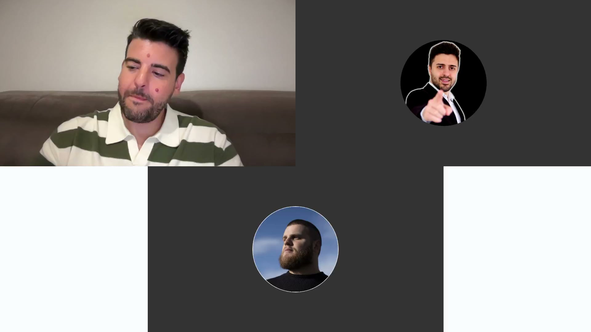
Eccoci qui signore e signori buonasera e benvenuti in questa straordinaria live di formazione vedo che oggi siamo tantissimi quindi avete già in vaso la chat di commenti quindi prima di tutto ragazzi fatemi sapere come state se state bene come state passando come state se state guardando i mondiali no scherzo a noi dei mondiali non c'è non ci sta interessando tanto perché c'è veramente qualcosa di molto più grosso ed è quello che vi faremo vedere questa sera quindi comunque in ogni caso complimenti per esservi presi del tempo e sicuramente vi tornerà tutto quanto con gli interessi perché lo capirete stasera sapete che mi piace anticipare fare spoiler ma è troppo caldo fa troppo caldo e
ci sta basta calcio ottimo ragazzi oggi non parleremo di calcio allora promesso promesso. Allora ragazzi solo una cosa prima di iniziare perché ve l'ho detto siamo tantissimi e sappiamo che si stanno collegando tantissime altre persone quindi giusto un minuto per dare il tempo eh agli altri di collegarsi e una domanda che vi vorrei fare eh voi con chi siete quando avete appunto iniziato a scoprire il mondo della mucca rossa? Quindi fatemi sapere tutto quanto nei commenti e poi vi prometto che iniziamo andiamo spediti perché la serata è molto molto intensa quindi vedo Miami immobili digitali addirittura e spediti perché la serata è molto molto intensa quindi vedo Miami immobili digitali addirittura ciao Lucilla un abbraccio a Lucilla proprio
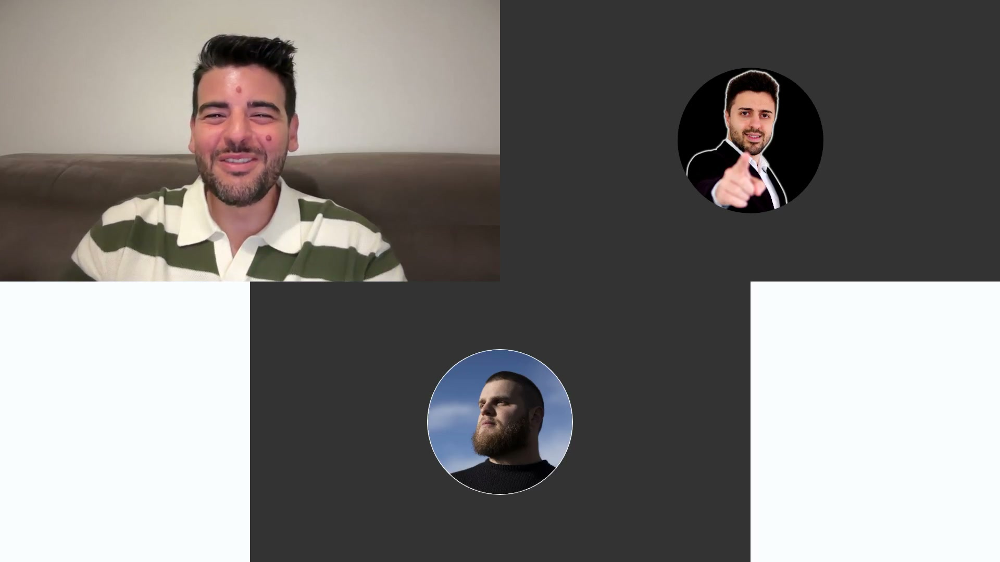
diciamo una delle prime studentesse di immobili digitali Platinum duemila e venticinque duemila e ventitré duemila e ventiquattro tantissimi immobili digitali YouTube duemila e ventitré Titanium domenico maggio duemila e ventisei ottimo allora inizio proprio da qui e intanto continuate a commentare e a lasciare un mi piace a Roberto bellissimo duemila e ventitré Federica duemila e ventiquattro come avete visto è proprio quello che vi ho detto c'è eh veramente tanta gente diversa all'interno di questo di questa live di formazione di oggi ed è bellissimo e voglio iniziare proprio da questo eh quando abbiamo iniziato eh dai immobili digitali a quello che è oggi che è ventitré giugno e quando abbiamo iniziato a parlare del duemila e ventisei eh effettivamente sono cambiate tantissime tantissime cose. Quello che noi abbiamo ripetuto
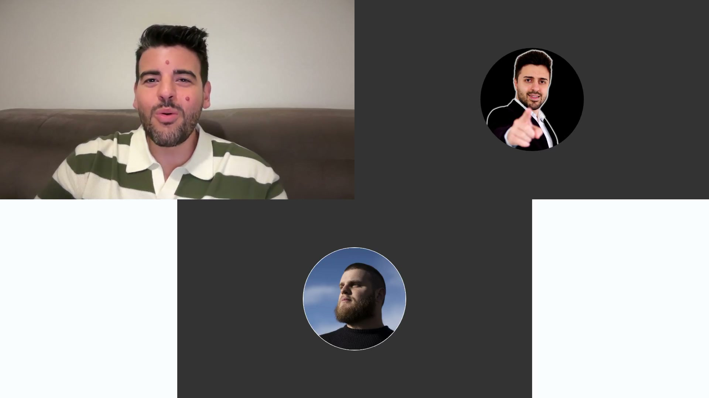
e che abbiamo detto sempre è che comunque ehm l'intelligenza artificiale eh ogni anno era in realtà come se fossero dieci anni nella nel mondo tradizionale diciamo così ma quello che è accaduto è che le iniziamo perché partirà tutto da lì. Oggi vi facciamo vedere degli strumenti pratici e vi portate veramente tanto a casa. Voglio sapere ad oggi qual è l'AI che utilizzate di più in assoluto. Qual è la vostra preferita e qual è quella che vi ha permesso realmente di capire qual è l'AI che utilizzate di più in assoluto? Qual è la vostra preferita e qual è quella che vi ha permesso di capire eh la potenza dell'intelligenza artificiale. Quindi fatemi sapere tutto quanto nei commenti, ok? Io nel frattempo vi condivido le slide, saranno pochissime le slide perché
andiamo a vedere nel pratico perché lo sapete a me non non mi piace parlare, mi piace far vedere ma è importante leggere un po' i vostri commenti. Quindi eh iniziamo Monica ha chiamato eh mi fa ridere che sono tutti tutti diversi, vedo tanti flicky, GPT, GPT, Gemini, Gemini, Flicky, Flow, Codex, chat GPT, chat GPT più Gemini continuate a scrivere perché è troppo bella questa cosa è veramente veramente tanto bella perché ve l'ho detto questo è un argomento che ci ha preso il cuore ed è quello che che realmente sta sta eh rivoluzionando il modo di fare business per noi di fare business a trecentosessanta gradi ma ancora di più per quanto riguarda YouTube, ok? Quindi mi fa ridere che tutti
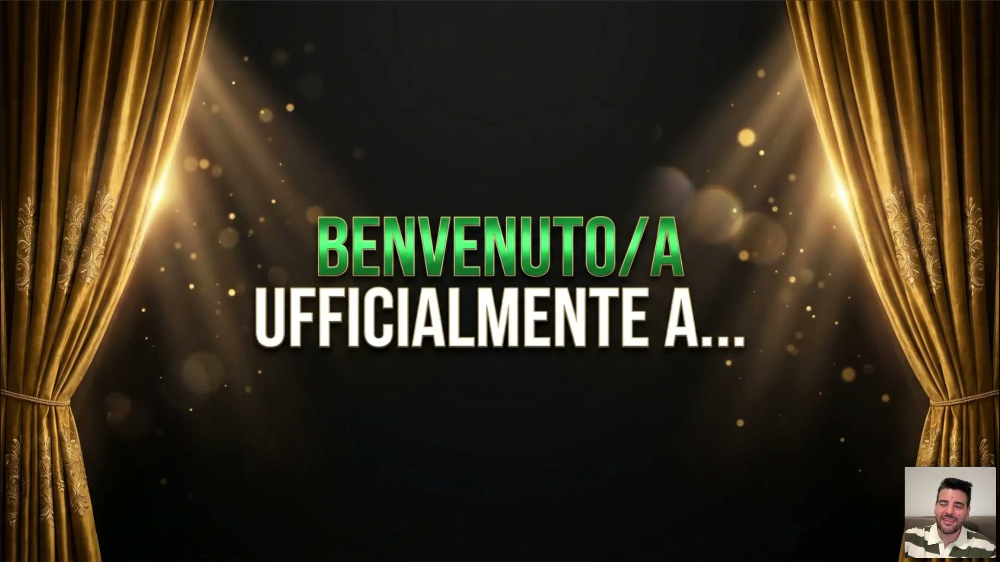
i commenti sono veramente diversi quindi è bellissima questa cosa e oggi li andiamo a vedere andiamo a vedere i migliori e vi faccio vedere un live che vi do il benvenuto
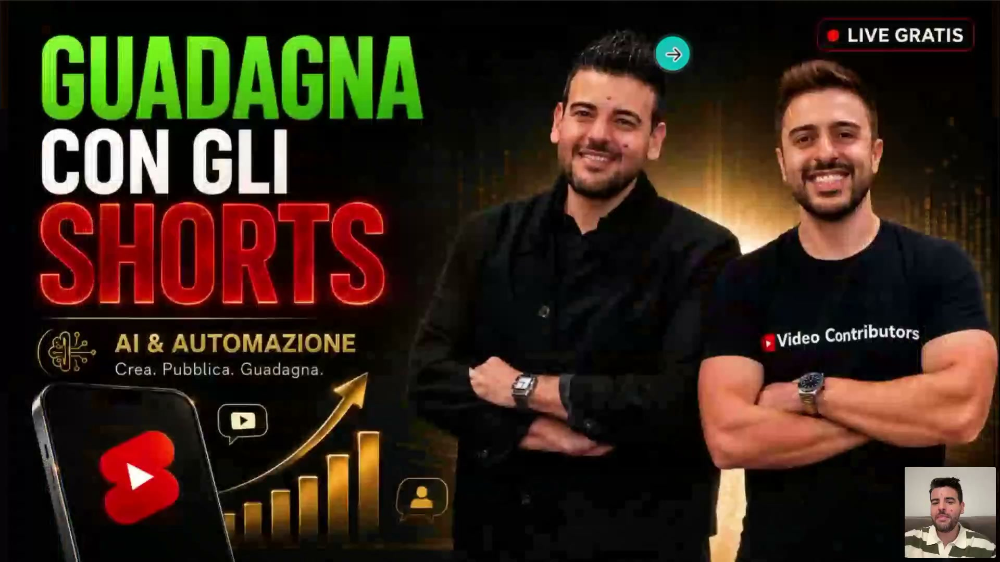
OCR: © LIVE GRATIS = I" lea sint bs (E (e Al AI & AUTOMAZIONE “è Crea. Pubblica. Guadagna
ufficialmente a guadagna con gli shorts questa eh formazione ehm dove andiamo a parlare di AI e automazione ma soprattutto in questa live parleremo di shorts e vi faccio una promessa quello che vedrete vi lascerà senza parole se quello che vi faccio vedere vi delude dite mi è stata una delusione ma sono così convinto che restate assolutamente tranquilli e vedrete delle belle, ok? Quindi siete pronti? Iniziamo? Ultima domanda poi non vi bombardo più siete pronti? Direi che possiamo iniziare subito. Al da questo momento in poi ragazzi non leggerò i commenti quindi eh poi magari quando vediamo nel pratico parleremo vedrò tutti i commenti e e quindi avremo modo di parlare quindi in questo
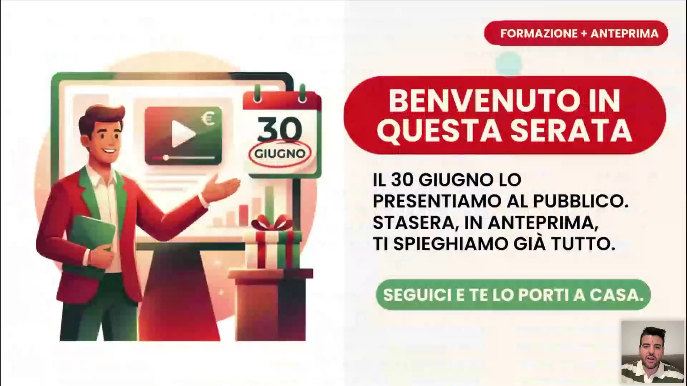
OCR: FORMAZIONE + ANTEPRIMA | L é ti IVEN I UTC ©) 5 IN (Giucno) lea si IL 30 GIUGNO LO PRESENTIAMO AL PUBBLICO. STASERA, IN ANTEPRIMA, TI SPIEGHIAMO GIÀ TUTTO. SEGUICI E TE LO PORTI A CASA. ata
momento non leggo i vostri commenti. Quello che vi voglio dire è che quello che vi stiamo facendo vedere questa sera eh lo mostreremo in maniera totalmente diversa il trenta giugno perché noi siamo un'azienda comunque di formazione stiamo andando avanti continuiamo comunque a proporre i nostri percorsi e questo lo sapete ma sempre per essere chiari nel miglior modo possibile abbiamo deciso di fare una serata pazzesca per voi dove vi portate veramente un mondo a casa e poi comunque il live pubblica dove eh non sarà quello che vi faremo vedere a voi ma proprio ci tenevamo a farvi vedere in eh anteprima a tutto quanto, ok? Ma soprattutto più che l'anteprima quello che interessa e riguarda voi è la formazione, ok? Cosa
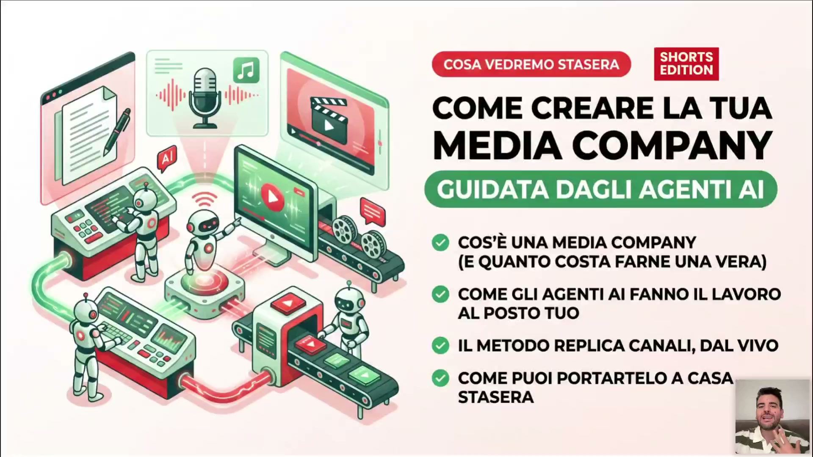
OCR: COSA VEDREMO STASERA ifiji COME CREARE LA TUA MEDIA COMPANY GUIDATA DAGLI AGENTI AI @©@ COS'È UNA MEDIA COMPANY (E QUANTO COSTA FARNE UNA VERA) @ COME GLI AGENTI Al FANNO IL LAVORO AL POSTO TUO O, @ IL METODO REPLICA CANALI, DAL VIVO © COME PUOI PORTARTELO A CASA, STASERA a
vedremo questa sera? Andiamo a vedere come creare la tua media company guidata dagli agenti AI andiamo a capire che cos'è una media company, che cos'è una media company? Gli agenti AI fanno il lavoro al posto tuo andiamo a vedere eccolo qui il pulcro della serata il metodo replica canali dal vivo, ok? E vi facciamo vedere con lo schermo condiviso ogni passaggio ok? Quindi non abbandonate assolutamente e poi vi facciamo vedere come appunto applicarlo
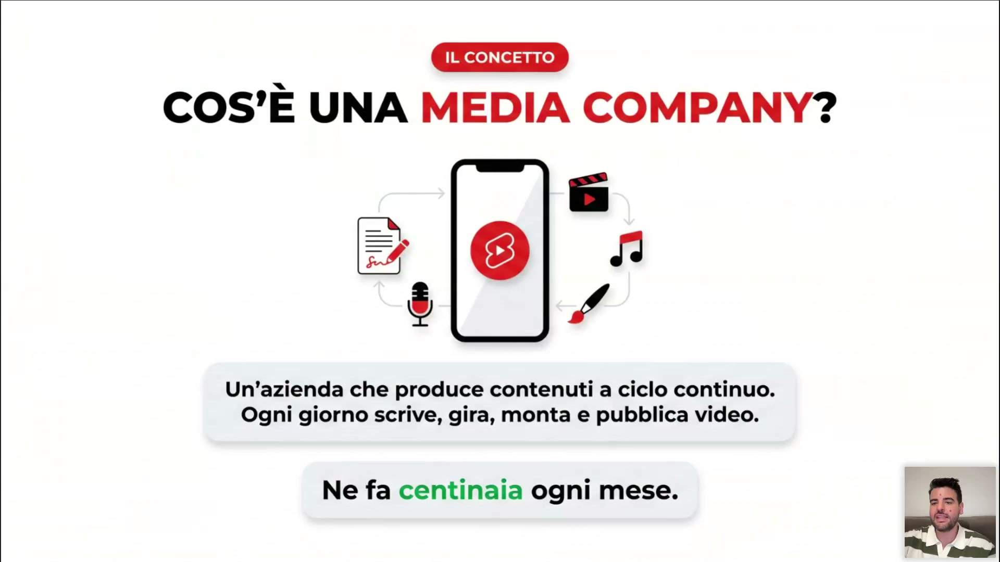
OCR: : COS'È UNA MEDIA COMPANY? 7 |@l 2 è| |A Un'azienda che produce contenuti a ciclo continuo. Ogni giorno scrive, gira, monta e pubblica video. Ne fa centinaia ogni mese. 3 Ma
sin da questa sera. Prima un po' di formazione specifica che cos'è una media company? Per chi non conosce la tocca rossa siamo una media company. Oltre a essere una scuola di formazione eh è tutto quello che conoscete. Una media company è un'azienda che produce contenuti a ciclo continuo. Ogni giorno scrive, gira, monta e pubblica video. Ok? Quindi quello che noi
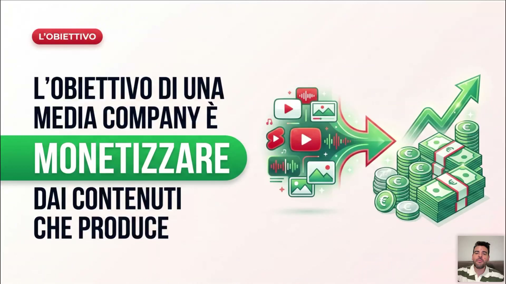
OCR: L'OBIETTIVO L'OBIETTIVO DI UNA MEDIA COMPANY E MONETIZZARE JE: DAI CONTENUTI CHE PRODUCE
facciamo è costruire ogni giorno con un obiettivo non fare visualizzazioni perché delle visualizzazioni non me ne deve riconoscere e non mi deve monetizzare. Ricordandoci però ovviamente che le visualizzazioni si traducono in monetizzazione. Quindi fare contenuti in un determinato modo ci permette effettivamente di monetizzare. Ora all'inizio vi ho chiesto con quale percorso avete iniziato? Come avete visto c'è gente che magari l'ultima volta che ha visto il nostro percorso del duemila e ventitré o duemila e ventuno. Quindi dovete sapere che in questi anni e soprattutto negli ultimi anni avete vissuto un cambiamento epocale. Lo ripeto ancora una volta tra poco ve lo facciamo vedere dal vivo. Ok? Dove strumenti che prima non esistevano hanno letteralmente ci hanno permesso di riprendere in mano la nostra vita ma veramente e lo vado a sottolineare spesso e tra poco
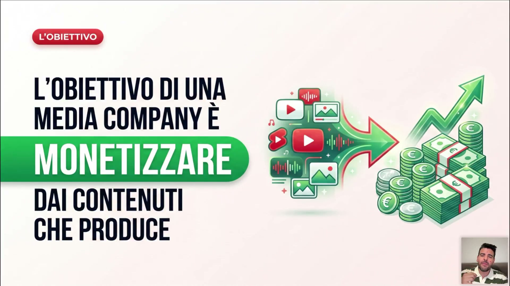
OCR: L'OBIETTIVO L'OBIETTIVO DI UNA MEDIA COMPANY E [UGIZIO è DAI CONTENUTI CHE PRODUCE
vi farò capire anche perché.
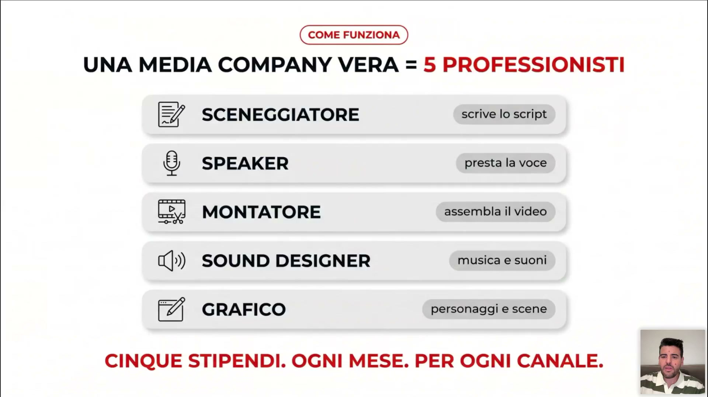
OCR: UNA MEDIA COMPANY VERA = 5 PROFESSIONISTI [E SCENEGGIATORE scrive lo script È SPEAKER presta la voce E) MONTATORE assembla il video ((])) SOUND DESIGNER Musica e suoni 4 GRAFICO personaggi e scene CINQUE STIPENDI. OGNI MESE. PER OGNI CANALE. da ia
Ok? Come funziona una Media Company? Quali sono le figure specifiche? Tutti voi che siete già. Quindi c'è lo sceneggiatore colui che va appunto a scrivere lo script eh c'è lo speaker che è colui che mette la voce c'è il montatore che è colui che monta il video il sound designer è una figura che nel nuovo YouTube quindi parliamo anche del nuovo YouTube è fondamentale mentre prima anche noi in primis ehm diciamo andavamo a snobbarli gli effetti sonori ehm tutte queste cose qui ci siamo resi d'accordo e infatti primo consiglio top della serata applicatelo e vedrete subito i risultati YouTube sta premiando tantissimo i contenuti dove ci sono gli effetti sonori sotto quindi immaginate che c'è un pugile che dà un pugno ok? Se mettete il suono del pugno oppure dell'acqua che scorre o del gatto che miagola il video da parte di YouTube viene visto in maniera veramente veramente
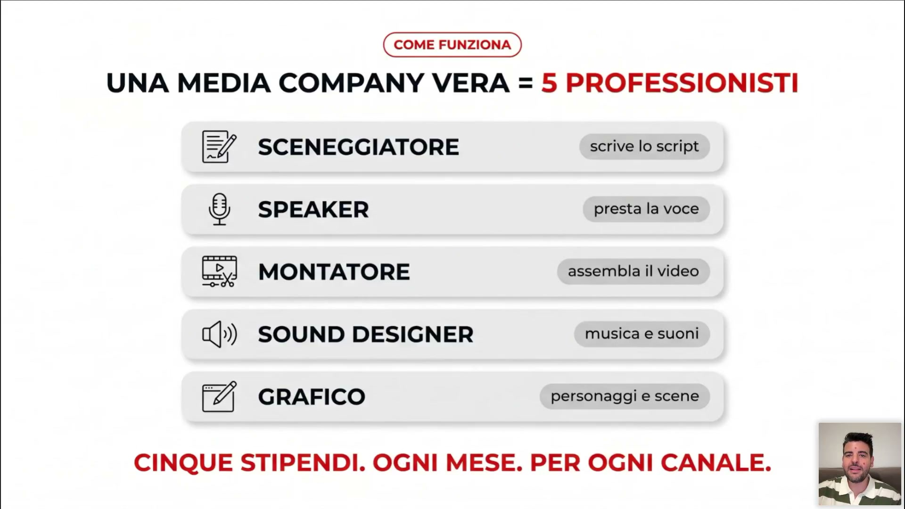
OCR: UNA MEDIA COMPANY VERA = 5 PROFESSIONISTI [E SCENEGGIATORE sana iaatipi È SPEAKER presta la voce E) MONTATORE assembla il video (())) SOUND DESIGNER musica e suoni È) GRAFICO personaggi e scene CINQUE STIPENDI. OGNI MESE. PER OGNI CANALE. da ta ata
ehm eh positiva quindi vi va a molto bene questo consiglio tenuto e questa è una cosa del nuovo YouTube ed è fondamentale che lo iniziate ad applicare e poi la musica ho visto ancora oggi ad esempio in una delle ultime formazioni abbiamo fatto l'analisi dei canali live ho visto tanti canali che non avevano la musica dovete mettere la musica è fondamentale e poi il classico grafico che ormai tutti quanti l'avete sostituito con GPT Gemini o chi più ne ha capito che si può fare questo però una media company in reale ha comunque un capo ok? Per ogni eh settore di questo quindi comunque anche se tu le immagini le fai con chat GPT c'è bisogno di qualcuno che le fa sì quindi la media company e noi in primis l'abbiamo fatto continuiamo a farlo e non lo faremo e abbiamo preso delle persone per fare questo è fondamentale che capite questo
OCR: UNA MEDIA COMPANY VERA = 5 PROFESSIONISTI [E SCENEGGIATORE scrive lo script È SPEAKER presta la voce ES) MONTATORE assembla il video ((]))) SOUND DESIGNER musica e suoni È) GRAFICO personaggi e scene CINQUE STIPENDI. OGNI MESE. PER OGNI CANALE. Sa Patt
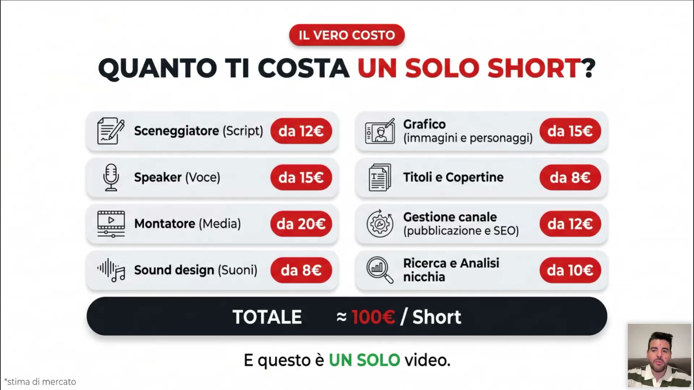
OCR: QUANTO TI COSTA UN SOLO SHORT? 1 n . = Grafico [7 sceneggiatore (script) (ED = KET frirssinie personags) CRD O) Speaker (Voce) G5 Titoli e Copertine ; Gestione canale tzzzzi Montatore (Media) CED (pubblicazione e SEO) ( da 12€ ] “lt; Sound design (Suoni) Ricerca e Analisi GIdD è) nicchia TOTALE = / Short E questo è UN SOLO video. da *stima di mercato Sta Lg dea)
allora quanto ti costa un solo shorts? Calcolate che queste sono le estime di mercato reali quindi non prendetele per buone al cento per cento ma fate una media perché è quello che effettivamente eh eh si va a pagare ora voi dite uno shorts come fa a costarti dieci euro un un voiceover oppure come fa a costarti venti euro un videomaker? Ora ve lo spiego quando voi andate a prendere professionisti e riprendo ripeto professionisti non gente che si mette lì tutti i giorni a fare i video in un determinato modo soprattutto la voce che vi ho detto eh fa parte in maniera eh fondamentale di un canale la voce poi per le persone diventa il proprietario del canale quindi se voi avete un voiceover professionista e non è il nostro caso per fortuna comunque dovete continuare a pagarlo oppure pensate ad esempio eh Geopop che è un canale che è una media company quindi ci sono quelle persone quelli che montano quelli che scrivono che
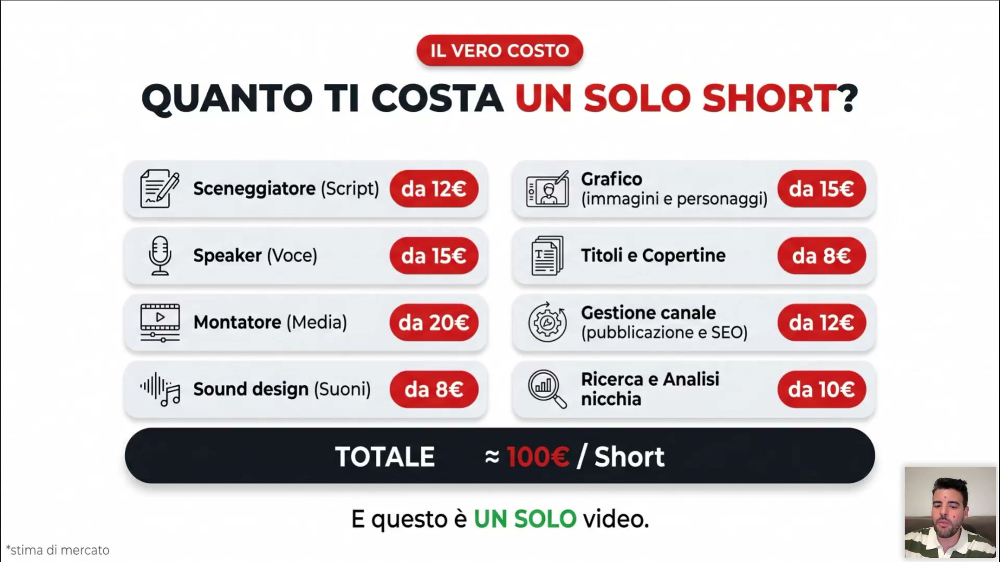
OCR: *stima di mercato QUANTO Tl COSTA UN SOLO SHORT? = ; . = Grafico [E sceneggiatore (script) (ERE fET firimagine personsgsi CD È) Speaker (Voce) G5 Titoli e Copertine a ; Gestione canale Montatore (Media) CED (pubblicazione e SEO) da 12€ “lt; Sound design (Suoni) Ricerca e Analisi GIDdD ‘)» nicchia TOTALE = / Short E questo è UN SOLO video. mia
vengono pagati ed è esattamente il costo che hanno per gli shorts sono questi numeri ok possono essere qualcosa in più possono essere qualcosa in meno ma sono questo uno shorts può arrivare a costarti anche cento euro o di più come ti può costare un euro ma la qualità sarà sempre la stessa ma se volete fare le cose top e non improvvisate questo è il momento migliore in assoluto ovviamente eh questa frase magari eh me l'avete sentita dire già qualche volta ma è realmente il momento migliore in assoluto perché quello che facciamo oggi che lo vedete in diretta non lo può fare nessuno nessuno o se lo faranno ci impiegheranno anni che è quello che vi abbiamo già detto quindi calcolate eh se voi
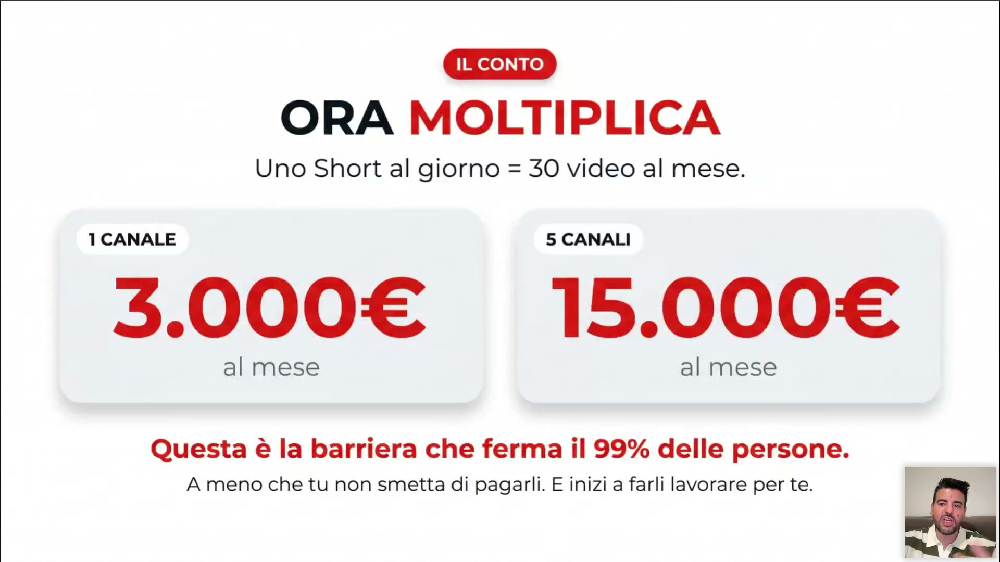
OCR: ORA MOLTIPLICA Uno Short al giorno = 30 video al mese. 1 CANALE 5 CANALI 3.000€ 15.000€ al mese al mese Questa è la barriera che ferma il 99% delle persone. A meno che tu non smetta di pagarli. E inizi a farli lavorare per te. Se
avete un canale vi può costare per avere una media company classica tremila euro al mese se volete fare un video al giorno se ne volete fare di più questo è quello che può costare appunto perché non nessuno ha le vere media company perché sono veramente tanto costose sono veramente veramente tante costose e se li assumi perché qualcuno può dire ok ma se io li assumo
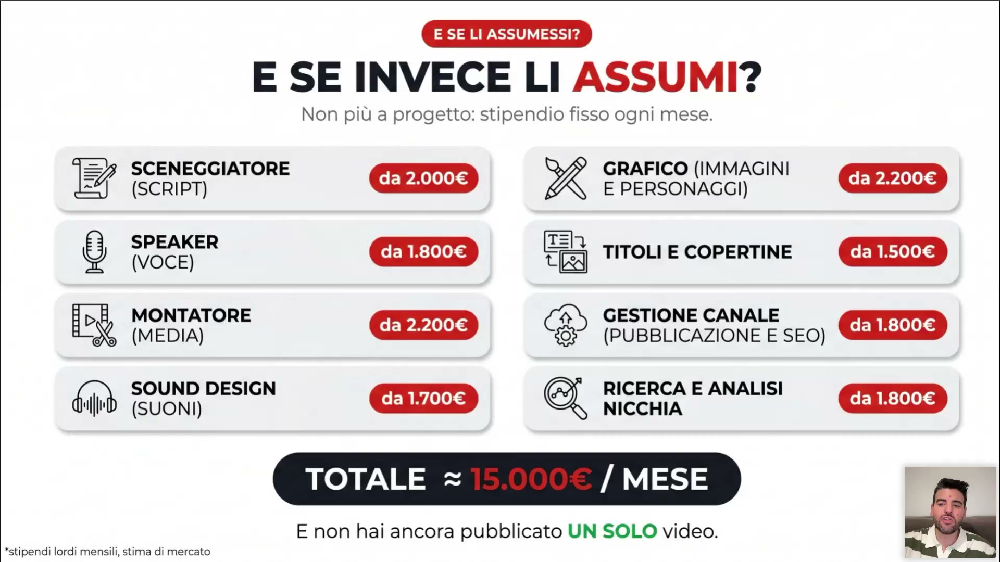
OCR: E SE INVECE LI ASSUMI? Non più a progetto: stipendio fisso ogni mese. È) ce (E) TITOLI E COPERTINE SEE GEE E non hai ancora pubblicato UN SOLO video. TOTALE = / MESE ca *stipendi lordi mensili, stima di mercato
queste persone e vi ripeto siamo i primi ad averlo fatto a farlo e non lo faremo più risottolineato chi ti fa tutti gli script duemila euro speaker milleotto montatore duemila e due ma è quello che costa di più in assoluto eh quello che ti fai suoni millesette grafico che ti fa immagini duemila e due titoli e copertine mille e cinque uno che ti gestisci il canale milleotto ricerche analisi milleotto queste sono ovviamente stipendi lordi pensili e sono stime di mercato reali per quanto riguarda stime di mercato reali per avere una media company ascoltate quello che vi serve se voi volete assumere realmente una persona è quindici mila euro al mese vi ripeto siccome l'abbiamo fatto abbiamo continuato a farlo e non lo faremo più ok sappiamo esattamente che questi sono i numeri adesso iniziamo nella
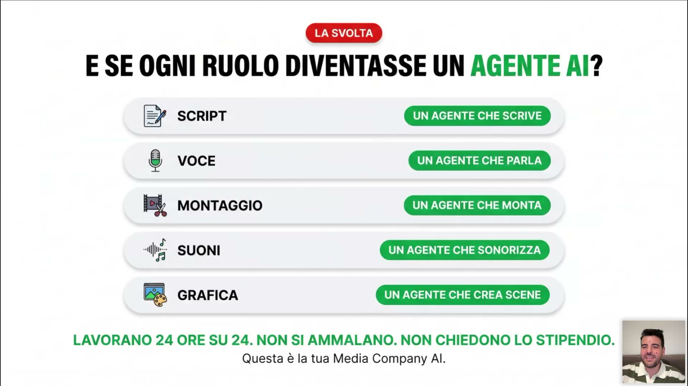
OCR: E SE OGNI RUOLO DIVENTASSE UN AGENTE Al? LA SVOLTA SCRIPT @ voce IE} MonTAGGIO di suon E GRAFICA LAVORANO 24 ORE SU 24. NON SI AMMALANO. NON CHIEDONO LO STIPENDIO. UN AGENTE CHE CREA SCENE Questa è la tua Media Company Al. La
svolta quello che voi conoscete ma entriamo nel dettaglio tutti quanti voi già avete delegata questa cosa a un agente AI quindi lo script la voce il montaggio i suoni la grafica ok e sappiamo benissimo che lavorano non stop non si ammalano non chiedono lo stipendio questa è la tua media company AI che già hai però c'è sempre un problema che sei tu a dover ogni volta dargli un comando un qualcosa per farlo eh lavorare quindi comunque vuoi o non vuoi devi stare lì
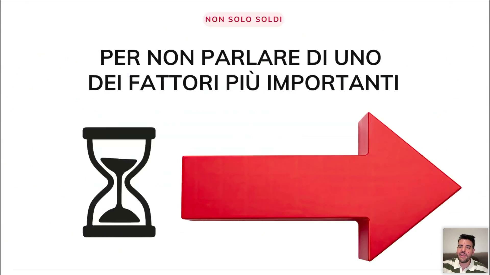
OCR: NON SOLO SOLDI PER NON PARLARE DI UNO DEI FATTORI PIU IMPORTANTI
e poi ragazzi qui mi prendo veramente mi prendo tre minuti pieni perché vi voglio dire sta cosa il fattore più importante è questo
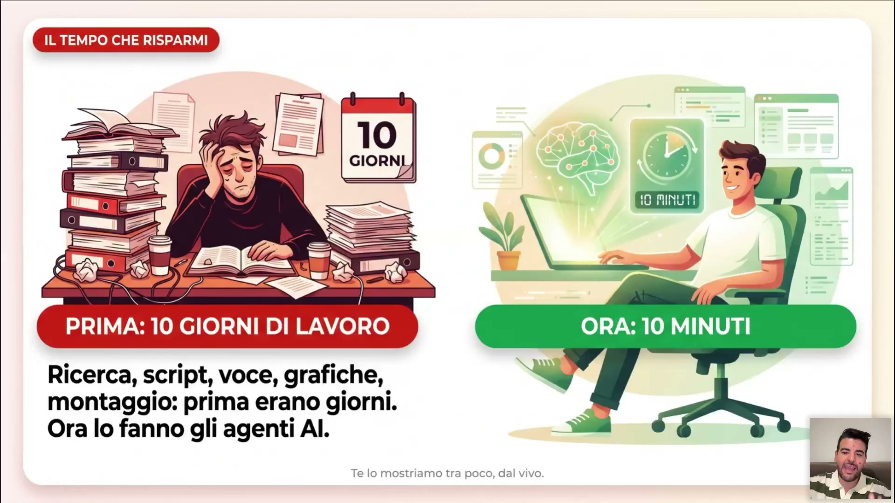
OCR: IL TEMPO CHE RISPARMI em £ PRIMA: 10 GIORNI DI LAVORO Ricerca, script, voce, grafiche, montaggio: prima erano giorni. Ora lo fanno gli agenti Al. Te lo mostr amo tra poco, da VIVO.
prima per fare la stessa identica cosa di quella che vi facciamo vedere ora oggi ci avremmo impiegato minimo dieci giorni per farlo bene a quel livello ora ci vuole dieci minuti un'ora o se proprio volete fare mi fermo Questa è la lezione che vedrete
OCR: FINORA, PER GUADAGNARE DI PIÙ, LA GENT HA ACCETTATO DI VIVERE DI MENO.
tra poco. Mi vorrei soffermare su questo e io mi sento particolarmente colpito da questa cosa e ve lo dico con il cuore in mano e lo sapete che quando vi parlo col cuore reale al cento per cento finora per guadagnare di più la gente compreso me in primis ha accettato di vivere di meno perché ragazzi per fare i video per stare lì nonostante il business più bello del mondo che ho fatto da quattro anni su sette per tutto il resto della mia vita comunque se deve uscire un video io sto seguendo un canale devo per forza stare lì ok? Vi dico una cosa io recentemente lo dico per i nuovi da circa un annetto eh sono diventato papà mio figlio ha un anno e mezzo qualche tempo fa è venuto e mi ha chiuso il portatile cioè è venuto a chiudermi il computer mi sono sentito una uno schifo ok? Perché questo lo capisce che se sono concentrato sul sul computer o sul telefono non posso essere
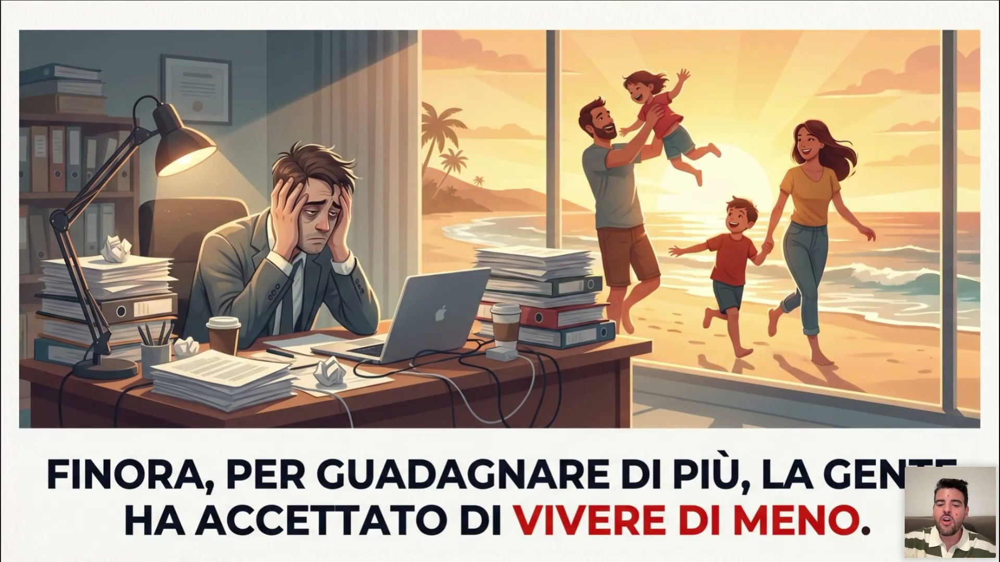
OCR: FINORA, PER GUADAGNARE DI PIÙ, LA GEN7& HA ACCETTATO DI VIVERE DI MENO. if
concentrato su di lui e vi giuro ma tanto lo vedrete tra poco e lo sapete che vi dico le cose reali tutto cioè quello che vedete oggi ha cambiato tutto perché io posso fare qualsiasi cosa mentre tutto quanto gli agenti e gli AI funzionano da soli io sono felice che ci sono eh che ci sono che c'è gente che ci segue che oggi può vedere l'evoluzione dove siamo arrivati che poi sicuramente ce ne saranno altre evoluzioni ma è fondamentale però capire questo quindi
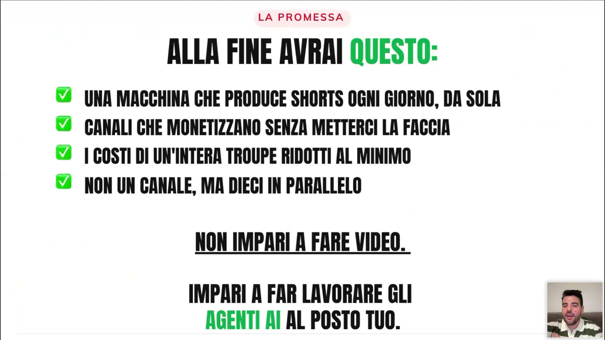
OCR: QLAOA LA PROMESSA ALLA FINE AVRAI QUESTO: UNA MAGGHINA CHE PRODUCE SHORTS OGNI GIORNO, DA SOLA CANALI CHE MONETIZZANO SENZA METTERCI LA FAGCIA I COSTI DI UN'INTERA TROUPE RIDOTTI AL MINIMO NON UN CANALE, MA DIECI IN PARALLELO NON IMPARI A ERRE VIDEO. IMPARI A FAR LAVORARE GLI AGENTI AI AL POSTO TUO. =
la promessa e poi andiamo sul campo e vi facciamo vedere è questa alla fine di questa serata avrai una macchina che produce shorts da solo ogni giorno canali che monetizzano e questo già lo sapete i costi di un'intera truppo quello che vi ho fatto vedere ridotta al minimo di un canale ma dieci e passa in parallelo ok? Quindi oggi non ti parliamo di fare non non ti spieghiamo come fare video ma ti insegniamo a far lavorare gli agenti e gli AI
OCR: GLI STRUMENTI CHE DIVENTANO I TUOI DIPENDENTI Non devi essere un tecnico. Devi solo sapere quali usare e come collegarli. SCRIPT ChatGPT / Claude ‘@' VOCE E SUONI ElevenLabs IMMAGINI E VIDEO Higgsfield » Kie.ai Il MONTAGGIO Ffmpeg - Capcut XY ORCHESTRAZIONE Claude Code TE LI MOSTRO TUTTI, UNO PER UNO, IN DIRETTA. Sa Ma Adi
al posto tuo facciamo diventare questi strumenti che avete scritto tutti magari qualcuno se volete farvi uno screen una foto quello che volete ve lo lascio un attimo in sovraimpressione eh questi sono esattamente gli strumenti che utilizziamo per fare tutto quindi per quello vi ho detto non aspettatevi che Pietro ha un nuovo tool il segreto di Fatima no è quello che già tutti quanti conoscete che vi abbiamo già insegnato e che vi abbiamo spiegato che adesso possono lavorare tutti insieme all'unisono con un grande direttore d'orchestra che va ad unire tutto quello che vi ho fatto vedere quindi ve l'ho detto voi che avete il corso già e che avete studiato e che può succedere quello che adesso vi serve non è come si fa un video è come faccio a farglielo fare tutto senza dover fare veramente più nulla neanche un controllo bene adesso lo vediamo questi sono gli strumenti per quanto riguarda script quello che usiamo noi è chat gpt e cloud per quello che riguarda
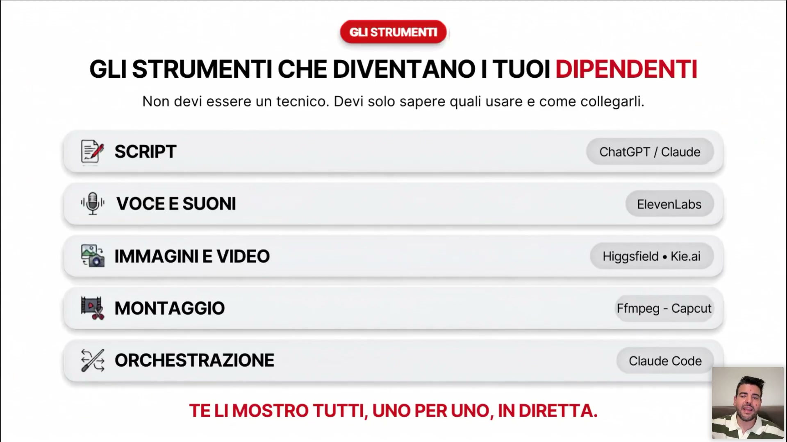
OCR: GLI STRUMENTI CHE DIVENTANO I TUOI DIPENDENTI Non devi essere un tecnico. Devi solo sapere quali usare e come collegazrli. SCRIPT ChatGPT / Claude ‘@' VOCE E SUONI ElevenLabs IMMAGINI E VIDEO Higgsfield + Kie.ai IE MONTAGGIO Ffmpeg - Capcut X ORCHESTRAZIONE Claude Code TE LI MOSTRO TUTTI, UNO PER UNO, IN DIRETTA. Gn n \2/ O
voce e suoni 11 loves ok immagini e video utilizziamo x field e punto ai ok per il montaggio utilizziamo ffmpeg ok e capcat e per l'orchestrazione quello che vi ho detto utilizzeremo cloud cod domanda chi di voi utilizza già cloud cod o chi non lo conosce assolutamente fatemelo sapere nei commenti perché questo è fondamentale perché vediamo la differenza tra la media company vera l'abbiamo capita e la nostra con gli agenti ai ok dove tutti quei personaggi sono come vi ho detto orchestrati da cloud cod ok e vi permette veramente di abbassare tutti i costi
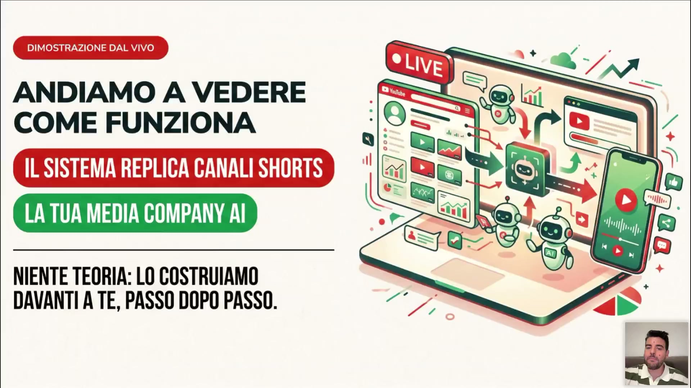
OCR: DIMOSTRAZIONE DAL VIVO ANDIAMO A VEDERE COME FUNZIONA IL SISTEMA REPLICA CANALI SHORTS LA TUA MEDIA COMPANY AI NIENTE TEORIA: LO COSTRUIAMO DAVANTI A TE, PASSO DOPO PASSO.
di una media company classico addirittura annullarla totalmente allora vediamo un po di risposte e poi iniziamo ehm aspettate c'erano un sacco di commenti la utilizzo, la conosco ma non la uso, non la conosco, non la conosco ho provato, io uso codex, la utilizzo tutti i giorni, sto imparando adesso non la conosco, stella non la conosce lupu mihaela non la conosce, giovanna non la conosce, siete tantissimi che non la conoscete, chi la conosce invece, complimenti, bravi siete semplicemente un piccolo passo avanti rispetto a tutti gli altri ma come vi abbiamo promesso questa live è totalmente per voi e vi andiamo a far vedere sul campo come lavoriamo eh direttamente sui canali adesso io
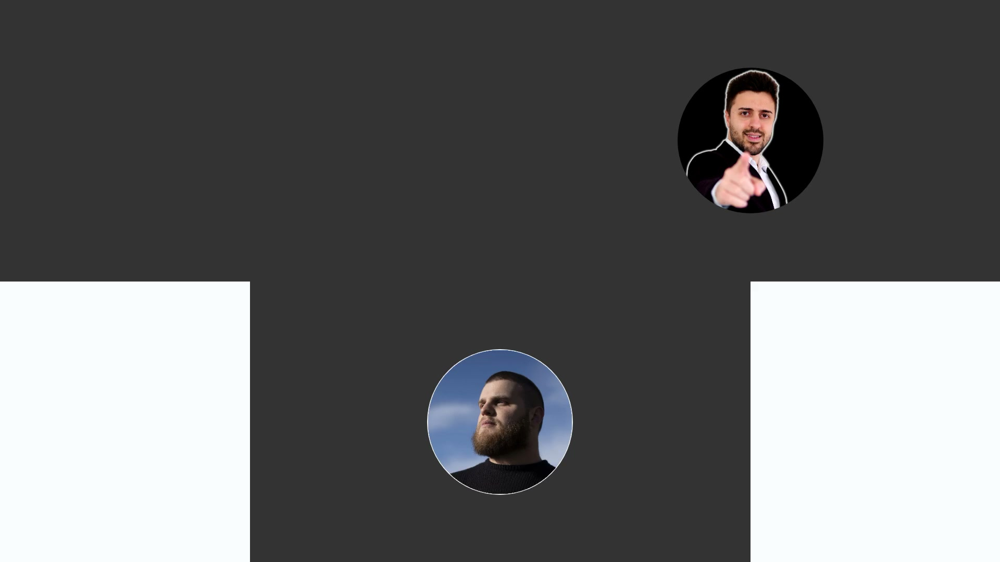
interrompo un attimo la condivisione e come vedete non sono solo chi segue le mie live sa che io c'ho sempre un compagno di avventure il mio braccio sinistro e uno destro e uno ne ho in realtà braccia ne ho due però le persone che stanno sempre vicino a me sono tre ma quello che adoro avere informazione con me ve lo presento ora, vi adoro tutti ma è Duilione quindi Duilio se ci sei ti vorrei qui con me sul palco buonasera ragazzi ti sei vergognato per la mia introduzione forse è stata scandalosa non lo so quindi eccolo qua, Duilio qualcuno, quasi tutti lo conoscete, qualcun altro no, ok quello che vi voglio far vedere è questo, siamo qui con Duilio perché abbiamo creato qualcosa di scioccante, di devastante e che volevamo farvi vedere sul campo piccola introduzione prima di iniziare, nel frattempo Duilio magari
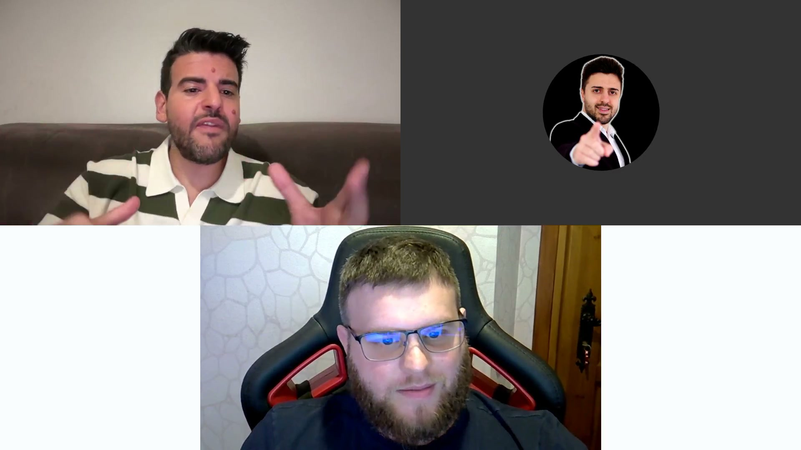
puoi condividere lo schermo così ci assicuriamo e poi ti lascio un secondo solo per salutare tutti, un'altra piccola introduzione prima di farvi vedere tutto quello che è appunto è il il metodo replica canali tutti questi passaggi che vi facciamo vedere sono quelli che facciamo noi per lanciare i nuovi canali che stanno avendo risultati assurdi
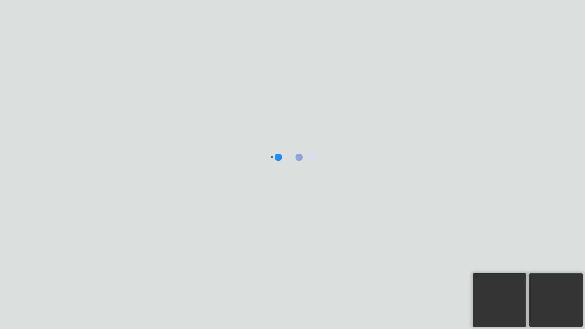
altra cosa fondamentale chi c'è ad esempio anche nei nostri percorsi, quelli là privati hanno avuto modo anche di vedere già dei video, dei canali che sono stati lanciati così, risultati pazzeschi e qualcosa vi è arrivato anche nelle comunicazioni per settimane o mesi ora, mi stanno salutando tutti Duilione per salutarli perché abbiamo un casino di cose da far vedere ok quindi direi di iniziare fatemi sapere solo se vedete le slide così iniziamo e se vedete quello che vedete qui è ok ragazzi anche lì se non lo conoscete non l'avete mai sentito è tutto ovviamente questa live è proprio per questo, la live è questa, quindi Duilio direi di iniziare allora ragazzi innanzitutto
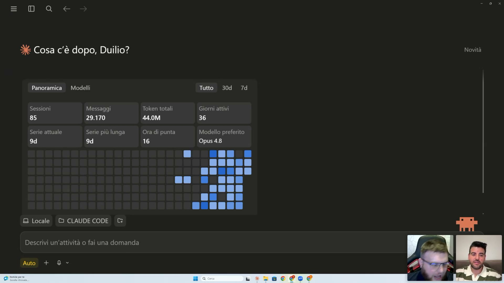
OCR: = a € SK Cosa c'è dopo, Duilio? Novità Panoramica Modelli Tutto. 304 7d Sessioni Messaggi Token totali Giorni attivi 85 29.170 44.0M 36 Serie attuale Serie più lunga Ora di punta Modello preferito 9d 9d 16 Opus 4.8 2 Locale © CLAUDE CODE “i Descrivi un'attività o fai una domanda + 9° Auto
Pietro ha spiegato che questo nuovo sistema ci permette di creare in maniera praticamente automatizzata tutti i contenuti che vogliamo ok, ma la cosa ancora più interessante è quella che c'è prima quindi la prima cosa che fa il metodo che vi facciamo vedere tra poco è quella di analizzare come un vero professionista canali nuove nicchie, analizzarle in maniera oggettiva quindi non magari sfalsata dalla nostra percezione o da quello che pensiamo di conoscere e partendo da quelle informazioni creare un nuovo canale, impostarlo e poi da lì iniziare a creare i contenuti per quel canale tutto in maniera professionista numero uno quello che faceva l'analisi dei canali le scelte da fare costituito totalmente dall'AI che non è più
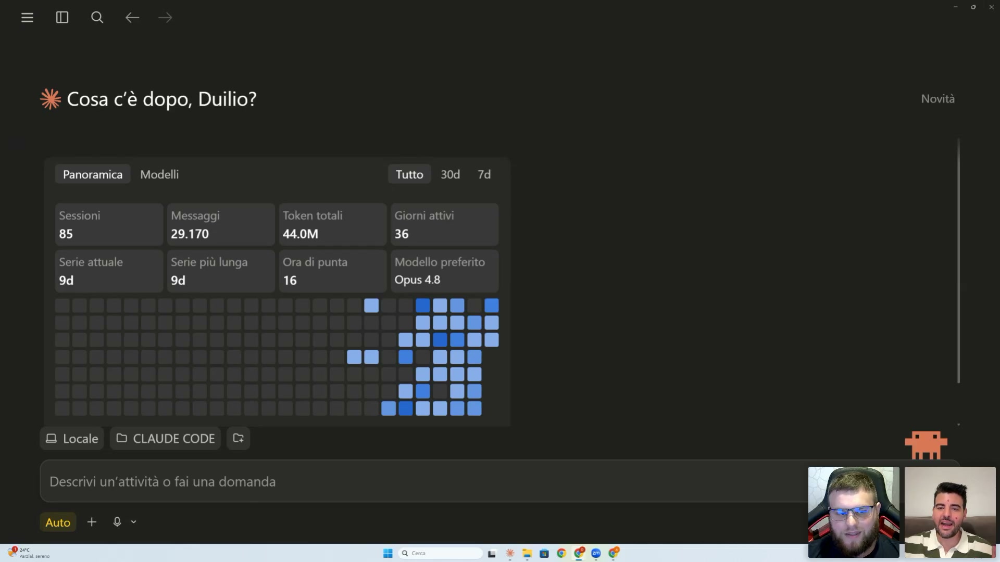
OCR: = a € SK Cosa c'è dopo, Duilio? Novità Panoramica Modelli Tutto. 30d 7d Sessioni Messaggi Token totali Giorni attivi 85 29.170 44.0M 36 Serie attuale Serie più lunga Ora di punta Modello preferito 9d 9d 16 Opus 4.8 2 Locale © CLAUDE CODE Descrivi un'attività o fai una domanda Auto + 9
entri su chat GPT e gli chiedi dammi dieci idee di canali, ecco, ma è a un livello di profondità assurdo, quindi abbiamo realmente i canali che funzionano andiamo a vedere questo primo professionista e spieghiamo un po' di cose fondamentali allora, innanzitutto per iniziare abbiamo bisogno di analizzare un canale quindi la prima cosa che dobbiamo fare, a noi ci capita spesso, quindi andiamo su youtube, magari troviamo un video interessante quel video lo analizziamo, analizziamo il canale che ha pubblicato quel video e da lì partiamo quello che vi faremo vedere oggi parte esattamente nello stesso modo, quindi partiremo sempre da un canale di riferimento un canale di shorts in questo caso e da lì svilupperemo tutto il nostro processo che vi lascerà veramente a bocca aperta quindi magari scrivete velocemente in chat
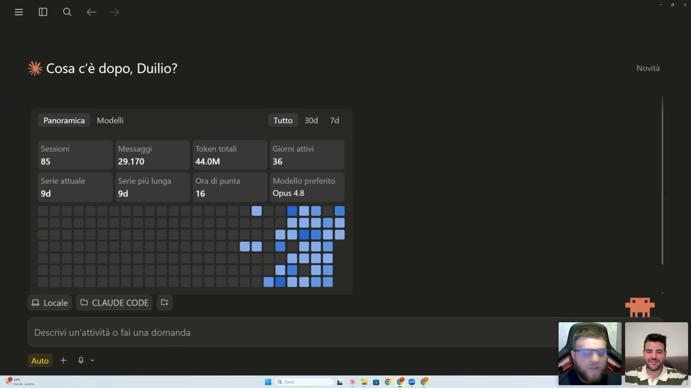
OCR: = a € SK Cosa c'è dopo, Duilio? Novità Panoramica Modelli Tutto 30d 7d Sessioni Messaggi Token totali Giorni attivi 85 29.170 44.0M 36 Serie attuale Serie più lunga Ora di punta Modello preferito 9d 9d 16 Opus 4.8 2 Locale © CLAUDE CODE E Descrivi un'attività o fai una domanda + 9° Auto
se avete un canale di shorts che volete che analizziamo, che facciamo il canale su quello, proprio qualche secondo così partiamo da lì pensate che questa cosa qua prima ho messo a noi in alto così loro vedono, quanto secondo me è molto meglio così, va benissimo allora sto leggendo la chat vediamo un pochettino, si no calcola che loro
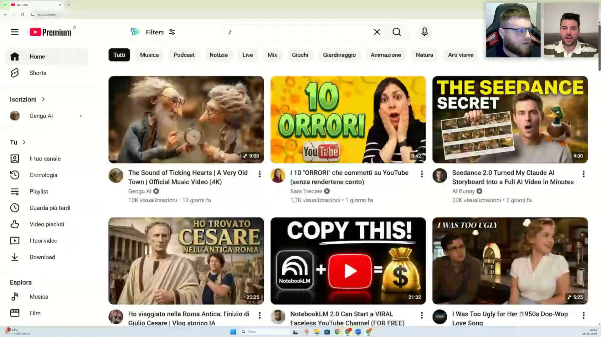
OCR: ff Home 8 Shorts Iscrizioni > @ ceva [E] itocanale 3) Cronologia Si Playlist Guarda più tardi | tuoi video O) ts) Video piaciuti DI % Download Esplora Bìl Musica B Fim Premium” È Filters & z X (OI 2 R ù Musica Podcast Notizie Live Mix Giochi Giardinaggio Animazione Natura Arti visive mi THE SEEPANCE SECRET The Sound of Ticking Hearts | A Very Old? & 110 "ORRORI" che commetti su YouTube i (7) Seedance 2.0 Turned My Claude AI : Town | Official Music Video (4K) (senza rendertene conto) Storyboard Into a Full AI Video in Minutes Gengu Al O Sara Trecate © AI Bunny © 20K visualiz T oni * 2 glorni fa OK visualizzazioni - 13 giorni fa I WAS TOO UGLY ” Ho viaggiato nella Roma Antica: l'inizio di i NotebookLM 2.0 Can Start a VIRAL i | Was Too Ugly for Her |1950s Doo-Wop Giulio Cesare | Vlog storico IA Faceless YouTube Channel (FOR FREE) Love Song % C_MSI uERRE ta
arrivano qualche secondo, ora sei su youtube vedi, lo cerchiamo noi ragazzi, così velocizziamo un pochettino, ve lo faccio vedere da qua questo qua moltissimi moltissimi di voi
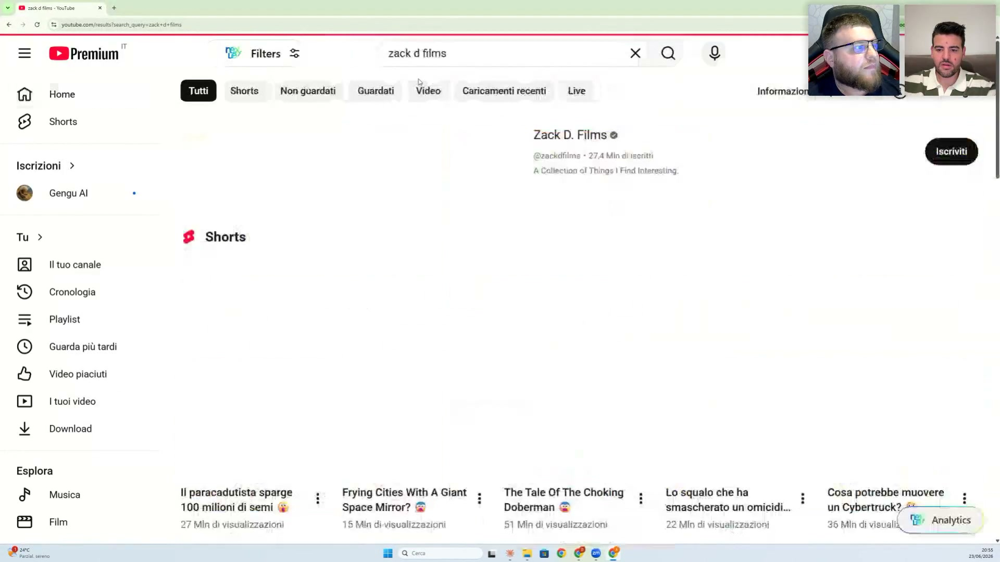
OCR: AD aac me Voutute x + €50 CR i ._m = (Premium Filters S zack d films x Q Q Q Home Tutti Shorts Non guardati Guardati Video Caricamenti recenti Live 8 Shorts Zack D. Films ® Iscrizioni > A Caliecuan al Things | Find Intere: ing (>) Gengu AI . Tu > 8 Shorts ai Il tuo canale LO) Cronologia So Playlist O Guarda più tardi lo) Video piaciuti DI) Ituoivideo dv Download Esplora dì Musica Il paracadutista sparge AI Frying Cities With A Giant . The Tale Of The Choking : Lo squalo che ha : Cosa potrebbe muovere : 100 milioni di semi & 3 Space Mirror? È * Doberman © bi ‘smascherato un omicidi... * un Cybertruck#-— E Fim 27 Min di visualizzazioni 15 Min di-visuali 51 Min di visualizzazioni 22 Min di visualizzazioni 36 Min di visuali IE" Analytics le e no Mr ICE u*«25C@Eoe iti
lo conosceranno è un canale di shorts, uno dei più grossi al mondo e tratta tutti questi shorts diciamo
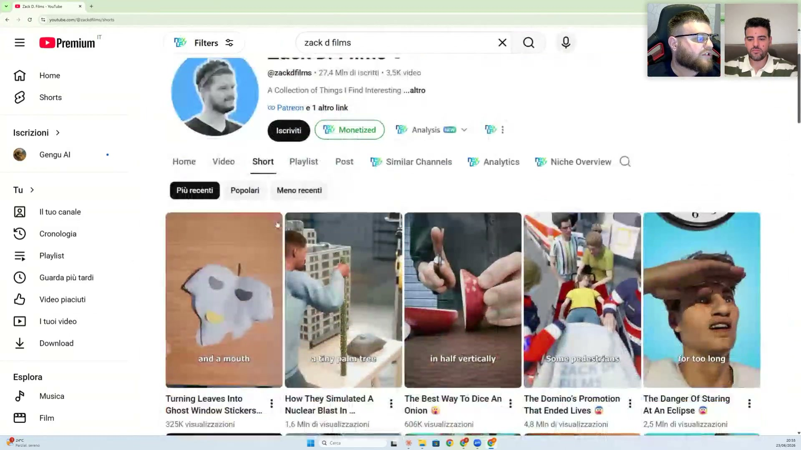
OCR: A ZIE D. Fim patate x + € > G (5 Joitubecom/@rackitima/ahort _ è mT ” = ©Premium "È Filters S zack d films xa) o A Home @zackdfilms - 27.4 MIn di iscritti + 3,5K video A Collection of Things | Find Interesting ...altro (SÌ Shorts © Patreon e 1 altro link Iscrizioni > A» "E Monetized ) "Bb Anaysisem> @ Gengu AI . - _ _ _ Home Video Short Playlist Post" SimilarChannels ‘® Analytics ‘& Niche Overview Q Tu > Popolari Meno recenti E Il tuo canale LO) Cronologia Si Playlist O Guarda più tardi lo) Video piaciuti DI) Ituoivideo dv Download ; anda mouth È SE in half vertically Esplora dî Musica Turning Leaves Into 3 HowTheySimulatedA . TheBestWayTo Dice An , The Domino! Promotion , The Danger Of Staring : 3 a Ghost Window Stickers... " Nuclear Blast In * Onion @& *. That Ended Lives © * AtAnEclipse ® è "ai 325K visualizzazioni 1.6 Min dî visualizzazioni 506K visualizzazioni 48 Min di visualizzazioni 2,5 Min di visualizzazioni Ria mae u*+2BC@loOe alli
un po' animatici e tratta storie veramente super interessanti quindi argomenti curiosi è un canale molto interessante da poter replicare quindi anche una minchia regalata quindi la prima cosa che devo fare per utilizzare questo metodo è banalmente andare a copiare l'url del canale che voglio replicare, che voglio innanzitutto far analizzare e poi replicare ok, quindi torno sul mio plot
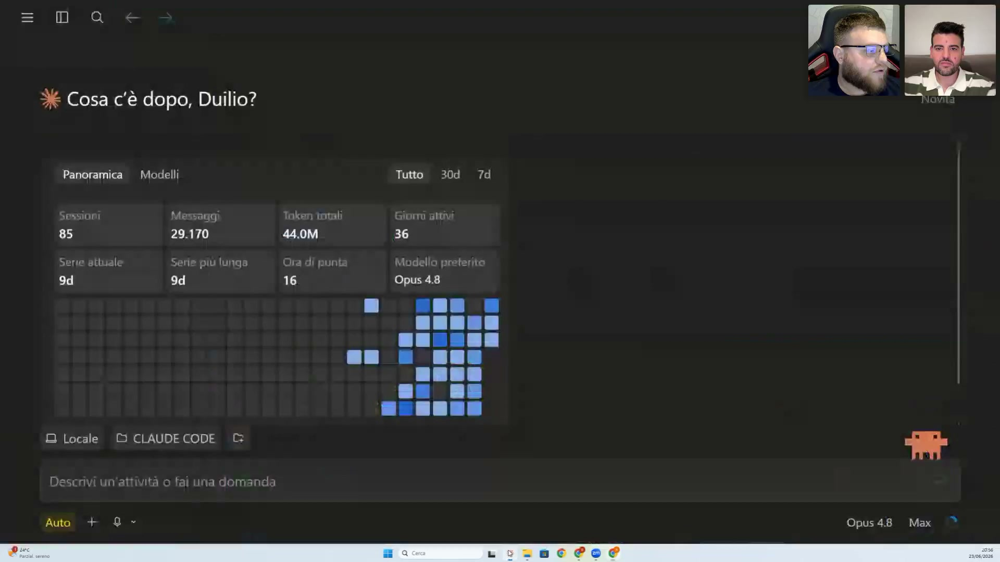
OCR: SE Cosa c'è dopo, Duilio? Panoramica Modelli Tutto 304 7d Sessioni Messagg Token tovali Gioni atti 85 29.170 44.0M 36 Serie attuale Serle piu lunga Ora di punta Modello preterito 9d 9d 16 Opus 4.8 2 Locale © CLAUDE CODE E: “i Descrivi un'attività o fai una domanda oS Auto + 29 > Opus 4.8 Max
la prima cosa che dobbiamo fare ovviamente è richiamare quell'orchestratore che diceva Pietro quindi l'abbiamo addestrato e secondo le nostre indicazioni ci basta richiamarlo non gli abbiamo dato un nome specifico ma poi potrà essere chiamato come vogliamo in questo caso sarà questo qua quindi richiamo l'orchestratore e vado a incollare il mio canale e do l'invio e nel momento che dai l'invio che cosa ha fatto Tullio? Ve lo spieghiamo per chi non ha mai visto questa cosa la prima cosa che abbiamo fatto è tutta la nostra conoscenza tutti i nostri metodi tutti gli strumenti li abbiamo insegnati a Claude, abbiamo creato una skill si chiama dove all'interno c'è tutta la nostra conoscenza che è un po' quello che c'è comunque nei percorsi
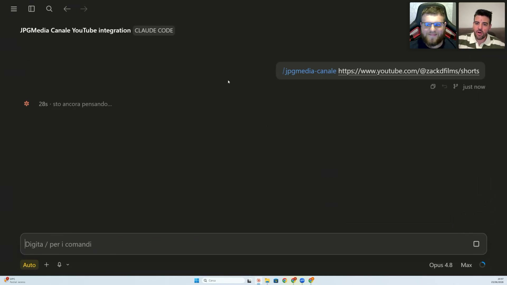
OCR: = a € JPGMedia Canale YouTube integration CLAUDE CODE jpgmedia-canale https://www.youtube.com/@zackdfilms/shorts (a) ® justnow 8 28s- sto ancora pensando Digita / per i comandi (1) Auto + 9 Opus 4.8. Max
è ovviamente strutturata per gli shorts come vi ha fatto vedere adesso Tullio quindi lui che cosa sta facendo semplicemente dopo aver inserito il link lui sta andando ad utilizzare, lo dico anche questo stiamo utilizzando NextLab quindi N-E-X-Lab quindi questo strumento che voi avete visto nel percorso sta facendo guardate l'analisi come se ve la sta facendo Pietro, Mirko Tuilio, Sam e tutti i top coach della Muccarossa quindi guardate qui che spettacolo da ora in avanti esatto, quindi abbiamo dato il nostro canale, lo strumento NextLab, cosa va a fare? Va a analizzarlo innanzitutto a capire di che canale si tratta ok, e ci dice ok, io sto capendo che è in formato shorts, vuoi procedere con la creazione di un canale di shorts, perché noi partendo da
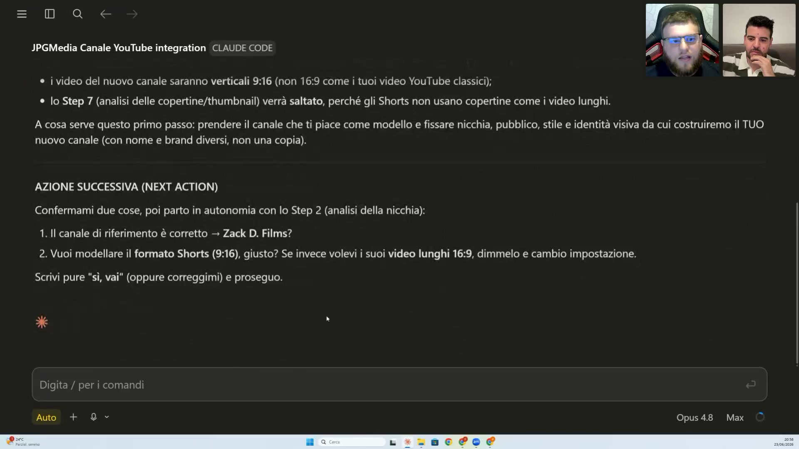
OCR: = (e JPGMedia Canale YouTube integration CLAUDE CODE e i video del nuovo canale saranno verticali 9:16 (non 16:9 come i tuoi video YouTube classici); ® lo Step 7 (analisi delle copertine/thumbnail) verrà saltato, perché gli Shorts non usano copertine come i video lunghi. A cosa serve questo primo passo: prendere il canale che ti piace come modello e fissare nicchia, pubblico, stile e identità visiva da cui costruiremo il TUO nuovo canale (con nome e brand diversi, non una copia). AZIONE SUCCESSIVA (NEXT ACTION) Confermami due cose, poi parto in autonomia con lo Step 2 (analisi della nicchia): 1. Il canale di riferimento è corretto — Zack D. Films? 2. Vuoi modellare il formato Shorts (9:16), giusto? Se invece volevi i suoi video lunghi 16:9, dimmelo e cambio impostazione. Scrivi pure "sì, vai" (oppure correggimi) e proseguo. X LI Digita / per i comandi Auto + 9 Opus 4.8. Max
questo canale ne creeremo uno nuovo in questo momento, ne creeremo uno nel nostro nuovo canale, quindi gli diciamo semplicemente sì una volta che andrà a capire che il canale è un canale shorts cosa andrà a fare? Andrà a fare l'analisi del canale e la decodifica della nicchia, questa cosa come vi accennavo prima, non sarà fatta in maniera superficiale ma sarà fatta con uno strumento che è uno dei più potenti in questo momento sul mercato per l'analisi dei canali e l'analisi della nicchia e l'analisi dei canali competitor quindi quello che dicevo prima, che abbiamo accettato di vivere di meno per guadagnare di più perché questa cosa che state vedendo va fatta una sola volta per il canale adesso vi vedrete tutti i passaggi per quello che abbiamo detto che in questo momento parallelamente
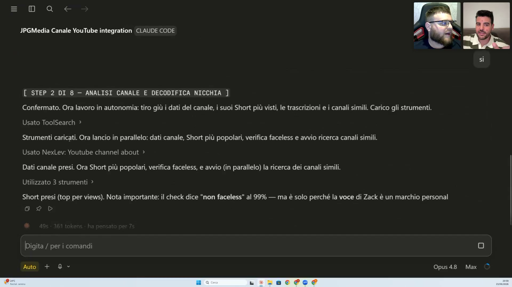
OCR: = a € JPGMedia Canale YouTube integration CLAUDE CODE [ STEP 2 DI 8 — ANALISI CANALE E DECODIFICA NICCHIA ] Confermato. Ora lavoro in autonomia: tiro giù i dati del canale, i suoi Short più visti, le trascrizioni e i canali simili. Carico gli strumenti. Usato ToolSearch > Strumenti caricati. Ora lancio in parallelo: dati canale, Short più popolari, verifica faceless e avvio ricerca canali simili. Usato NexLev: Youtube channel about > Dati canale presi. Ora Short più popolari, verifica faceless, e avvio (in parallelo) la ricerca dei canali simili. Utilizzato 3 strumenti > Short presi (top per views). Nota importante: il check dice "non faceless" al 99% — ma è solo perché la voce di Zack è un marchio personal 9 ° D Digita / per i comandi O Auto + 9 Opus 4.8. Max
sta leggendo i dati del canale, leggendo i shorts più popolari verifica se è un canale senza volto e avvia in contemporanea la ricerca di canali simili solo per fare questa cosa quanto tempo ci avreste messo e poi per analizzarli, oltre a prenderli l'altro passaggio è vi dovete vedere un minuto di shorts per 100 shorts, analizzare capire lo stile, capire come scrive capire se scrive, capire se c'è la faccia tutte queste cose qui e poi altra cosa, guardate quello che sta facendo, così ve la stiamo spiegando anche la skill sta tirando giù tutti gli script quindi tutti i testi, quelli che voi per ora andate a fare in manuale, prendete il link lo inserite, andate a scaricare il sottotitolo lo studiate, li rielaborate li mettete insieme, questa è una cosa che fa in automatico la gente assurdo ragazzi e mentre legge le
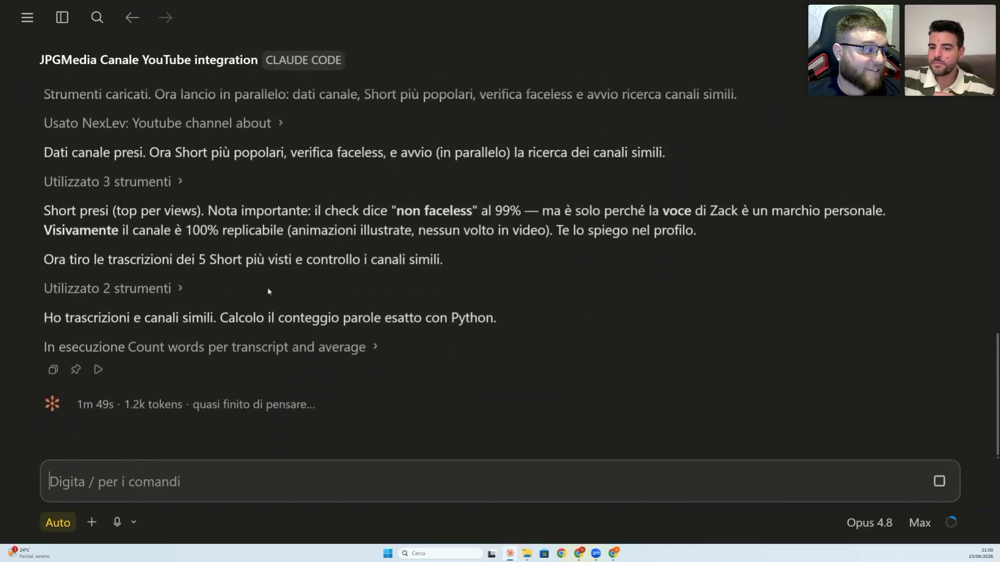
OCR: OMM JPGMedia Canale YouTube integration CLAUDE CODE Strumenti caricati. Ora lancio in parallelo: dati canale, Short più popolari, verifica faceless e avvio ricerca canali simili. Usato NexLev: Youtube channel about > Dati canale presi. Ora Short più popolari, verifica faceless, e avvio (in parallelo) la ricerca dei canali simili. Utilizzato 3 strumenti > Short presi (top per views). Nota importante: il check dice "non faceless" al 99% — ma è solo perché la voce di Zack è un marchio personale. Visivamente il canale è 100% replicabile (animazioni illustrate, nessun volto in video). Te lo spiego nel profilo. Ora tiro le trascrizioni dei 5 Short più visti e controllo i canali simili. Utilizzato 2 strumenti > & Ho trascrizioni e canali simili. Calcolo il conteggio parole esatto con Python. In esecuzione Count words per transcript and average > 9 9 D sm Im 49s - 1.2k tokens - quasi finito di pensare Digita / per i comandi O Auto + 9 Opus 4.8. Max
trascrizioni, sta anche facendo il calcolo delle parole, perché ovviamente questo canale è di riferimento al suo stile, e il numero di parole presente in ogni video vale la pena conoscerlo e qua inizia la prima cosa scioccante vai vai vai la pena, i dati Scritto il numero di visualizzazioni, quando è nato, il numero di video, la lingua e la descrizione. Ci ha dato la nicchia, quindi noi lo sapevamo già, perché comunque il canale ci piaceva, però l'abbiamo fatto analizzare, ci dà il pubblico target, quindi l'età del pubblico, importantissima questa, gli interessi del pubblico di riferimento, l'intento, quindi perché questo pubblico guarda questi video, lo stato emotivo in cui guarda quei video, ci dà lo stile, è assurdo, lo stile di scrittura, e ci dà questa cosa qua, un'altra cosa fondamentale se vogliamo creare shorts di successo,
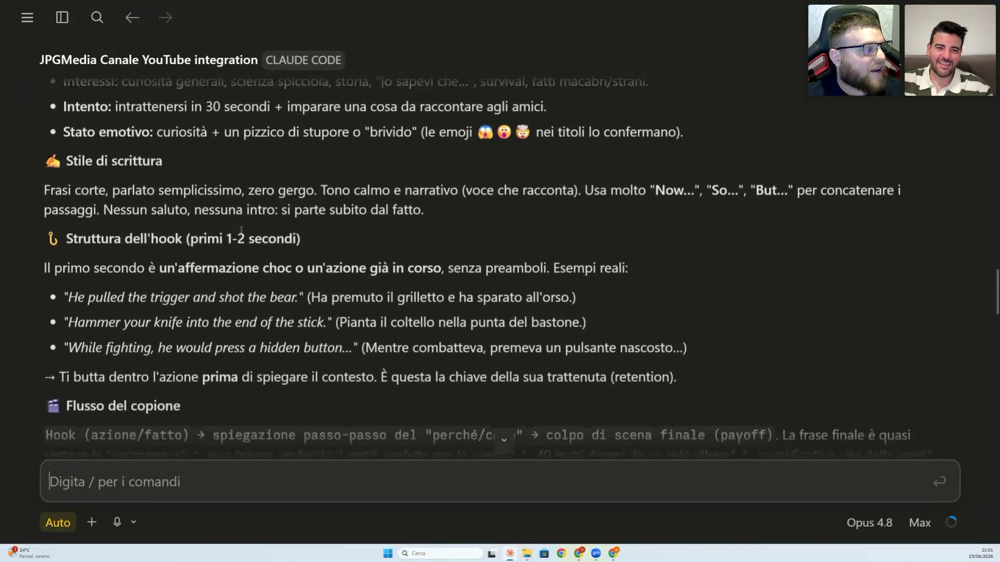
OCR: = a € JPGMedia Canale YouTube integration CLAUDE CODE ® Intento: intrattenersi in 30 secondi + imparare una cosa da raccontare agli amici. * Stato emotivo: curiosità + un pizzico di stupore o "brivido" (le emoji @® © ® nei titoli lo confermano). a Stile di scrittura Frasi corte, parlato semplicissimo, zero gergo. Tono calmo e narrativo (voce che racconta). Usa molto "Now...", "So...", "But..." per concatenare i passaggi. Nessun saluto, nessuna intro: si parte subito dal fatto. È Struttura dell'hook (primi 1-2 secondi) Il primo secondo è un'affermazione choc o un'azione già in corso, senza preamboli. Esempi reali: ® "He pulled the trigger and shot the bear." (Ha premuto il grilletto e ha sparato all'orso.) * "Hammer your knife into the end of the stick." (Pianta il coltello nella punta del bastone.) ® "While fighting, he would press a hidden button..." (Mentre combatteva, premeva un pulsante nascosto...) — Ti butta dentro l'azione prima di spiegare il contesto. È questa la chiave della sua trattenuta (retention). ( ff). La frase final Il € Flusso del copione 'De z/ " 5 colpo di scena finale (pave Hook (azione/fatto) > spieg Digita / per i comandi Opus 4.8. Max Auto + 9 >
l'hook, quindi il gancio iniziale che usa principalmente il canale per far funzionare quei video. E se avete letto le email, i messaggi, vi abbiamo parlato già di questo hook, del gancio, eccetera, quindi invece di andare a vedervi 800.000 Video, ve li dà già in automatico quelli che dovreste scrivere. Poi ci dà una struttura preliminare di com'è lo script, ma poi lo analizzerà nel dettaglio, ci dà il ritmo della narrazione, quindi anche quante parole, guardate quanti dati, pensate a tirar fuori questi dati in manuale, quante parole al secondo usa questo canale, ci dà le tecniche di come il pubblico viene mantenuto a guardare il video, e poi ci dà una media delle lunghezze degli script. Quindi abbiamo una media delle parole, la durata media, diciamo un'idea di template per i titoli,
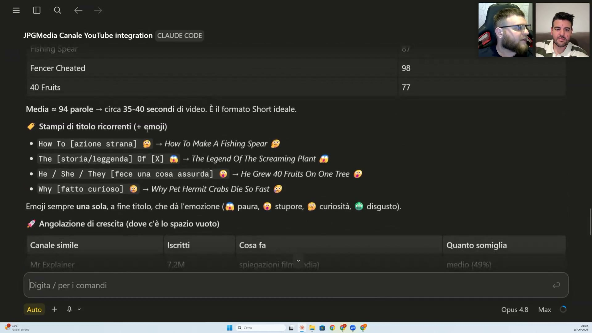
OCR: = (e JPGMedia Canale YouTube integration CLAUDE CODE Fencer Cheated 98 40 Fruits 77 Media = 94 parole — circa 35-40 secondi di video. È il formato Short ideale. @ Stampi di titolo ricorrenti (+ emoji) e How To [azione strana] @® -— How To MakeA Fishing Spear ® e The [storia/leggenda] Of [X] @$ -— 7he Legend Of The Screaming Plant #9 * He / She / They [fece una cosa assurda] ©® — He Grew40 Fruits On One Tree ® e why [fatto curioso] @® -— Why Pet Hermit Crabs Die So Fast ® Emoji sempre una sola, a fine titolo, che dà l'emozione (@ paura, @® stupore, ® curiosità, ® disgusto). # Angolazione di crescita (dove c'è lo spazio vuoto) Canale simile Iscritti Cosa fa Quanto somiglia Digita / per i comandi Auto + 9 Opus 4.8. Max
l'angle che ha fatto crescere meglio il canale, quindi quali sono gli angle migliori, e ci dà anche, guardate, dei competitor. Quindi è assurdo questa cosa, eh? E ci dice anche, guardate, se lo volessimo fare in italiano, ci consiglia anche che tipo di video andare a fare. No, fatemi sapere intanto se già il primo step vi ha scioccato, oppure no, partendo da un link, che ha fatto tutta l'analisi che ci avremmo impiegato veramente dieci giorni a farla così in profondità. Fatecelo sapere nei commenti se non ci fermiamo al primo step, se non vi piace, non vi interessa, però è devastante. È questo che vi ripeto, lo ripeto perché qualcuno dice il prompt, ragazzi, è questo, è quello che facciamo. Quindi prendete appunti e studiatevelo, perché questo, non c'è da darvi quello che vi stiamo facendo vedere,
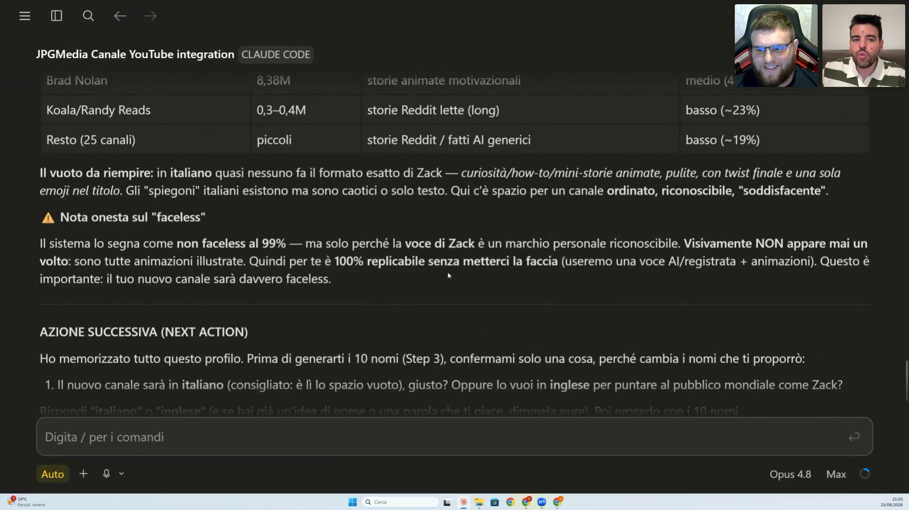
OCR: = a € JPGMedia Canale YouTube integration CLAUDE CODE Brad Nolan 8,38M storie animate motivazionali medio (4 Koala/Randy Reads (NE ZZONZIVI storie Reddit lette (long) basso (-23%) Resto (25 canali) piccoli storie Reddit / fatti AI generici basso (-19%) Il vuoto da riempire: in italiano quasi nessuno fa il formato esatto di Zack — curiosità/how-to/mini-storie animate, pulite, con twist finale e una sola emoji nel titolo. Gli "spiegoni" italiani esistono ma sono caotici o solo testo. Qui c'è spazio per un canale ordinato, riconoscibile, “soddisfacente”. A Nota onesta sul "faceless" Il sistema lo segna come non faceless al 99% — ma solo perché la voce di Zack è un marchio personale riconoscibile. Visivamente NON appare mai un volto: sono tutte animazioni illustrate. Quindi per te è 100% replicabile senza metterci la faccia (useremo una voce Al/registrata + animazioni). Questo è importante: il tuo nuovo canale sarà davvero faceless. È AZIONE SUCCESSIVA (NEXT ACTION) Ho memorizzato tutto questo profilo. Prima di generarti i 10 nomi (Step 3), confermami solo una cosa, perché cambia i nomi che ti proporrò: 1. Il nuovo canale sarà in italiano (consigliato: è lì lo spazio vuoto), giusto? Oppure lo vuoi in inglese per puntare al pubblico mondiale come Zack? Digita / per i comandi Auto + 9 Opus 4.8. Max
ve lo stiamo facendo vedere, c'è tutto ok. Non vi stiamo raccomando niente, ragazzi. Comunque è tutto fantastico, straordinario, effacente, sciocca, eccetera. E questo è solo il primo passo. È solo inizio, allora andiamo avanti. Allora, quindi, siccome abbiamo detto che questa skill è nata per farci creare nuovi canali velocemente, una volta che ha tirato fuori tutte queste informazioni ci dice, benissimo, ti inizio a preparare il canale. Ti vado a preparare, chiedi idee di nome per il canale. Rispondimi soltanto in che lingua lo vuoi, in questo caso italiano e inglese, ma lo possiamo fare in qualsiasi lingua. In questo caso magari facciamo italiano. Quindi adesso cosa fa? Va a proporci dei nomi per il nostro nuovo canale. Vediamo un pochettino. Già questa analisi qua, ragazzi, a farla in manuale, e poi non è tanto che dici, vabbè, magari il tempo lo trovo,
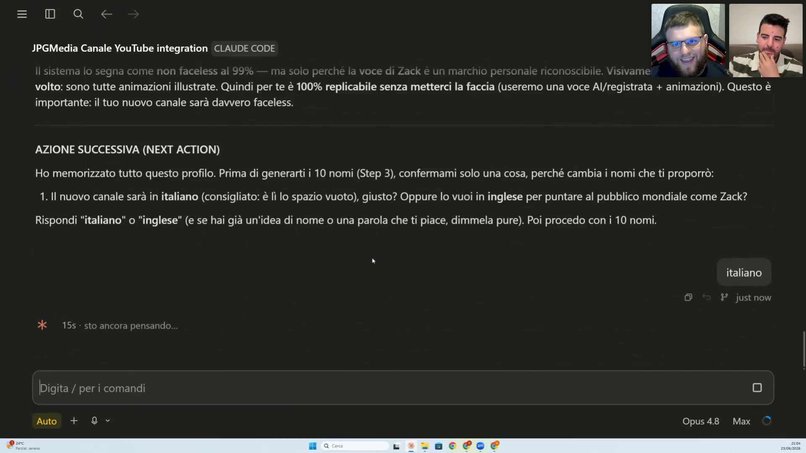
OCR: = a € JPGMedia Canale YouTube integration CLAUDE CODE Il sistema lo segna come non faceless al 99% ma solo perche la voce di Zack e Ur 1 INarchio persoridie fICOI 1OscIDIIe. Visivame volto: sono tutte animazioni illustrate. Quindi per te è 100% replicabile senza metterci la faccia (useremo una voce Al/registrata + animazioni). Questo è importante: il tuo nuovo canale sarà davvero faceless. AZIONE SUCCESSIVA (NEXT ACTION) Ho memorizzato tutto questo profilo. Prima di generarti i 10 nomi (Step 3), confermami solo una cosa, perché cambia i nomi che ti proporrò: 1. Il nuovo canale sarà in italiano (consigliato: è lì lo spazio vuoto), giusto? Oppure lo vuoi in inglese per puntare al pubblico mondiale come Zack? Rispondi "italiano" o "inglese" (e se hai già un'idea di nome o una parola che ti piace, dimmela pure). Poi procedo con i 10 nomi. italiano [1] just now X 15s: sto ancora pensando Digita / per i comandi O Auto + 9 Opus 4.8. Max
ma è la qualità con cui hai le informazioni. Non tanto il tempo, importantissimo, ma la qualità, perché è una cosa oggettiva quello che ti tira fuori. E aggiungo altre cose, ragazzi. Qua vi dice come lo vuoi il canale, abbiamo visto italiano. E quando vi ho detto invece di un canale 10, 50, 100, consiglio sempre, iniziamo da uno. Facciamolo bene, tanto è una cazzata adesso replicarli questi canali seguendo quello che vi stiamo facendo vedere. Ok? E guardate qui. Se lo avessimo voluto fare in tedesco avremmo avuto gli stessi problemi. Quindi ci ha proposto 10 titoli, 10 nomi per il canale, ci dà anche una piccola spiegazione. Adesso per andare avanti ci chiede, ti piacciono? Sì, scegli ne uno. Non ti piacciono? Li rifaccio. Oppure dammelo tu. È quello che ci sta per chiedere adesso. Noi prendiamo magari uno a casa, non so, magari il primo, tanto è...
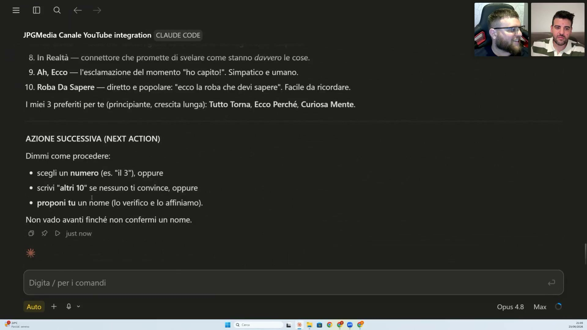
OCR: = a € JPGMedia Canale YouTube integration CLAUDE CODE 8. In Realtà — connettore che promette di svelare come stanno davvero le cose. 9. Ah, Ecco — l'esclamazione del momento "ho capito!". Simpatico e umano. 10. Roba Da Sapere — diretto e popolare: "ecco la roba che devi sapere". Facile da ricordare. | miei 3 preferiti per te (principiante, crescita lunga): Tutto Torna, Ecco Perché, Curiosa Mente. AZIONE SUCCESSIVA (NEXT ACTION) Dimmi come procedere: e scegli un numero (es. "il 3"), oppure * scrivi "altri 10" se nessuno ti convince, oppure . I n . e proponi tu un nome (lo verifico e lo affiniamo). Non vado avanti finché non confermi un nome. 9 è D justnow XK Digita / per i comandi Auto + 9 > Opus 4.8. Max
Si prendi quello che vuoi, ragazzi non dovete perdere tempo ancora oggi con queste cose, sono cavolate. Cosa fondamentale, i nomi del canale ve li sceglie anche guardando che non ci siano i competitor grossi che hanno gli stessi nomi. Quindi vi ricordate che vi facevamo vedere, andate a vedere se ci sono altri competitor, non c'è più bisogno perché anche qui il competitor non c'è con quel canale e se c'è un competitor piccolo comunque il nome è diverso, ma nel 99% dei casi non c'è. Esatto. Ora, abbiamo il nome del canale, cosa va a fare? Va a fare la descrizione del canale. Fermati, fermati un secondo, Tuilio. No, perché è pazzesco. Noi veramente siamo... Descrizione. Vi ricordate che poi dovete andare a prendere le descrizioni, andare a metterle su tutti i video, andare a cercare la vostra, quella con le parole chiave e tutto quanto?
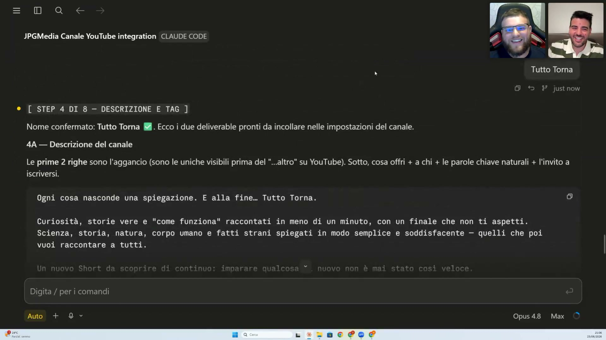
OCR: = a € JPGMedia Canale YouTube integration CLAUDE CODE Tutto Torna O © # justnow ® [ STEP 4 DI 8 — DESCRIZIONE E TAG ] Nome confermato: Tutto Torna MB. Ecco i due deliverable pronti da incollare nelle impostazioni del canale. 4A — Descrizione del canale Le prime 2 righe sono l'aggancio (sono le uniche visibili prima del "...altro" su YouTube). Sotto, cosa offri + a chi + le parole chiave naturali + l'invito a iscriversi. Ogni cosa nasconde una spiegazione. E alla fine... Tutto Torna. (e) Curiosità, storie vere e "come funziona" raccontati in meno di un minuto, con un finale che non ti aspetti. Scienza, storia, natura, corpo umano e fatti strani spiegati in modo semplice e soddisfacente — quelli che poi vuoi raccontare a tutti. Digita / per i comandi Auto + 9 Opus 4.8. Max
Descrizione, tag, tutte ste cose qui. Quanto tempo ci perdete? Andiamo avanti e facciamo vediamo che cosa abbiamo qui. Abbiamo descrizioni. Poi abbiamo il cosa offre, le parole chiave naturali e l'invito a iscriversi. Tutto in automatico. È bellissimo. Poi abbiamo i tag, in alcune circostanze potrebbero servire, quindi li abbiamo comunque fatti in automatico. Se ci va bene, procediamo. Se non ci va bene, io la faccio modificare. In questo caso, come ve lo stiamo facendo vedere, andiamo avanti. Luigo, aspetta, per i ragazzi, non... Va bene anche questo nel 99% dei casi. Fate partire il canale. Però non perdeteci tempo. Ecco, questo è il consiglio su queste cose. Sì. Ma infatti abbiamo anche un consiglio. Sì. E' un consiglio. Sì.
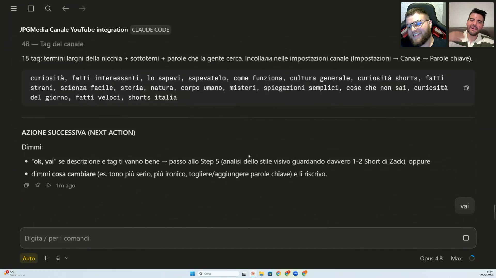
OCR: = a € JPGMedia Canale YouTube integration CLAUDE CODE 45 — lag del canale 18 tag: termini larghi della nicchia + sottotemi + parole che la gente cerca. Incollanv nelle impostazioni canale (Impostazioni + Canale + Parole chiave). curiosità, fatti interessanti, lo sapevi, sapevatelo, come funziona, cultura generale, curiosità shorts, fatti strani, scienza facile, storia, natura, corpo umano, misteri, spiegazioni semplici, cose che non sai, curiosità (a) del giorno, fatti veloci, shorts italia AZIONE SUCCESSIVA (NEXT ACTION) Dimmi: x e "ok, vai" se descrizione e tag ti vanno bene + passo allo Step 5 (analisi dello stile visivo guardando davvero 1-2 Short di Zack), oppure e dimmi cosa cambiare (es. tono più serio, più ironico, togliere/aggiungere parole chiave) e li riscrivo. 9 ® D Imago vai Digita / per i comandi (1) Auto + 9 Opus 4.8. Max
Sì. Sì. Sì. Sì. Sì. Sì. Sì. Sì. Sì. Sì. Sì. Sì. Sì. Sì. Sì. Sì. Questo è il conseglio su queste cose. Sì. Ma infatti, l'avete visto, neanche noi abbiamo... Nienche letto. Allora adesso cosa fa. Una cosa fondamentale per poter poi far funzionare il nostro canale è l'analisi dello stile visivo del video di riferimento, del canale di riferimento. Quindi cosa farà. Attraverso NextLeva. Attraverso altri strumenti. Farà degli screen al canale competitor. Li analizzerà per estrapolare lo stile visivo. Quindi come è realizzato quel canale. Quindi cosa ha fatto attraverso NextLeva. Ha guardato davvero... Ce lo scrive. Ha guardato davvero due shots. Quindi non ha fatto... Non ha fatto finta.
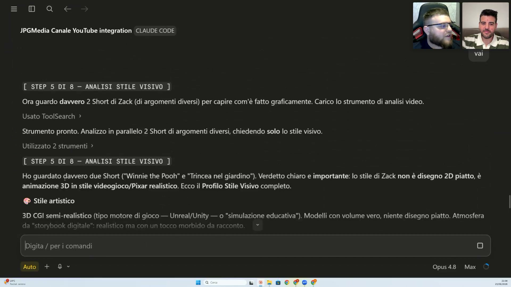
OCR: = a € JPGMedia Canale YouTube integration CLAUDE CODE [ STEP 5 DI 8 — ANALISI STILE VISIVO ] Ora guardo davvero 2 Short di Zack (di argomenti diversi) per capire com'è fatto graficamente. Carico lo strumento di analisi video. Usato ToolSearch > Strumento pronto. Analizzo in parallelo 2 Short di argomenti diversi, chiedendo solo lo stile visivo. Utilizzato 2 strumenti > [ STEP 5 DI 8 — ANALISI STILE VISIVO ] Ho guardato davvero due Short ("Winnie the Pooh" e "Trincea nel giardino"). Verdetto chiaro e importante: lo stile di Zack non è disegno 2D piatto, è animazione 3D in stile videogioco/Pixar realistico. Ecco il Profilo Stile Visivo completo. @& Stile artistico 3D CGI semi-realistico (tipo motore di gioco — Unreal/Unity — o "simulazione educativa"). Modelli con volume vero, niente disegno piatto. Atmosfera Digita / per i comandi (1) Auto + 9 Opus 4.8. Max
Ci dice che non è un disegno dubbi piatto. È un'animazione tradizionale di un gioco pixel realistico. E ci dà il profilo visivo. Perché questi dati sono importanti. Perché nel momento in cui abbiamo bisogno di andare a realizzare più video per questo canale, lo stile rimarrà sempre quello. Perché ce l'abbiamo già. È sempre uguale. Anche qua ci dà la composizione di riquadratura. Come sono fatti i soggetti e i personaggi. La firma estetica. Se c'è del testo sullo schermo. Quante informazioni ci dà. La musica e gli effetti. Che è fondamentale. Lo ripetiamo. Per avere tutta questa analisi, anche voi con il vostro occhio umano e orecchio umano, non riuscite a sentire neanche se ci sono degli effetti particolari. Se c'è... Fai una cosa. Intanto andiamo avanti. Intanto gli spiego questa cosa. Lui va avanti. Quindi quello è importante.
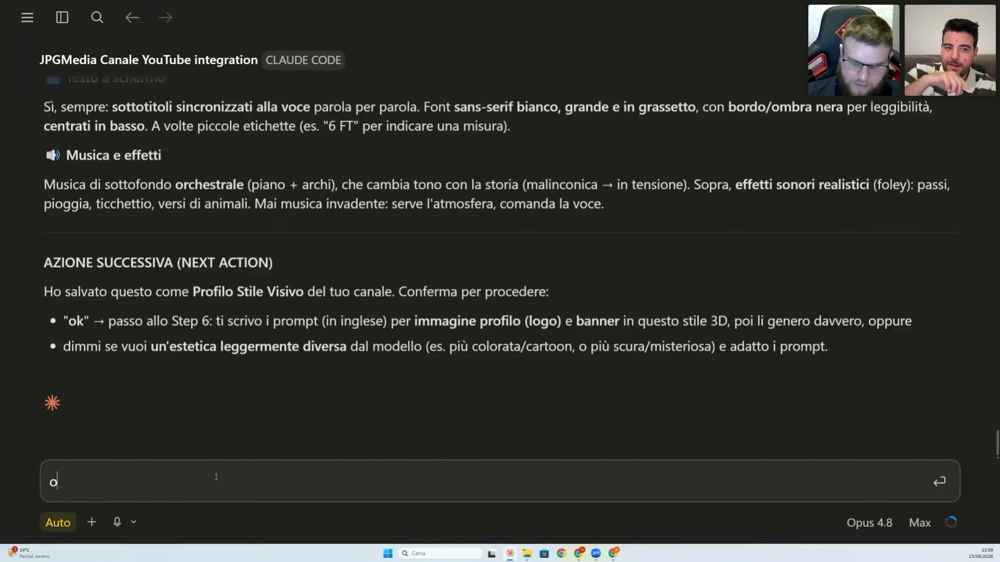
OCR: = a € JPGMedia Canale YouTube integration CLAUDE CODE 4 4 N Sì, sempre: sottotitoli sincronizzati alla voce parola per parola. Font sans-serif bianco, grande e in grassetto, con bordo/ombra nera per leggibilità, centrati in basso. A volte piccole etichette (es. "6 FT" per indicare una misura). #) Musica e effetti Musica di sottofondo orchestrale (piano + archi), che cambia tono con la storia (malinconica + in tensione). Sopra, effetti sonori realistici (foley): passi, pioggia, ticchettio, versi di animali. Mai musica invadente: serve l'atmosfera, comanda la voce. AZIONE SUCCESSIVA (NEXT ACTION) Ho salvato questo come Profilo Stile Visivo del tuo canale. Conferma per procedere: * "ok" — passo allo Step 6: ti scrivo i prompt (in inglese) per immagine profilo (logo) e banner in questo stile 3D, poi li genero davvero, oppure e dimmi se vuoi un'estetica leggermente diversa dal modello (es. più colorata/cartoon, o più scura/misteriosa) e adatto i prompt. * o i a Auto + 9 > Opus 4.8. Max
Questo qui voi non riuscireste mai a farlo in manuale. Così bene. Oppure... Ve lo dico perché è importante. Questa è formazione pura. Questo è come funziona. Noi cosa facevamo prima? Prendevamo gli screen. Facevamo gli screenshot in manuale. Delle parti più belle del video. O delle immagini che ci piacevano. Le davamo in pasto all'AI. Quello che vi abbiamo comunque insegnato. E ci facevamo creare uno stile simile. Qui non c'è più bisogno. Perché lui già sa il testo come è scritto. Guardate. C'è anche il font. L'ombra. La musica. La firma. Il tipo. Cioè ragazzi. Ma vi rendete conto? Allucinante. E qui stiamo andando lenti perché vi stiamo spiegando ogni dettaglio. Sì. Allora. Adesso cosa sta facendo? Certo il nome del canale. La descrizione tag. Ma sto canale lo vogliamo far partire oggi? Cosa va a fare?
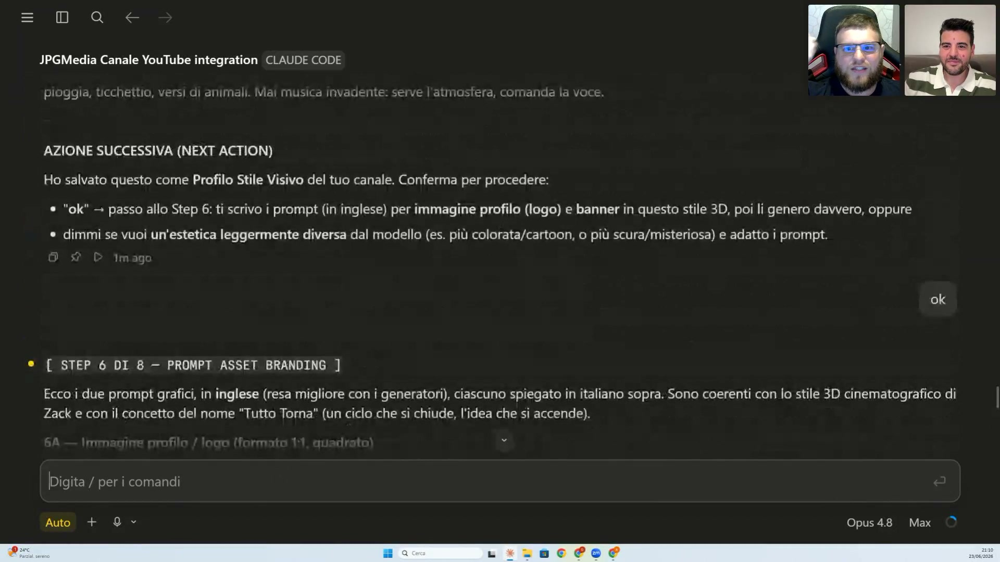
OCR: = a € JPGMedia Canale YouTube integration CLAUDE CODE ve l atmostera, comanda la voce, pioggia, ticchettio, versi di animali. Mai musica invadente: AZIONE SUCCESSIVA (NEXT ACTION) Ho salvato questo come Profilo Stile Visivo del tuo canale. Conferma per procedere: ® "ok" — passo allo Step 6: ti scrivo i prompt (in inglese) per immagine profilo (logo) e banner in questo stile 3D, poi li genero davvero, oppure e dimmi se vuoi un'estetica leggermente diversa dal modello (es. più colorata/cartoon, o più scura/misteriosa) e adatto i prompt. ok ® { STEP 6 DI 8 — PROMPT ASSET BRANDING ] Ecco i due prompt grafici, in inglese (resa migliore con i generatori), ciascuno spiegato in italiano sopra. Sono coerenti con lo stile 3D cinematografico di Zack e con il concetto del nome "Tutto Torna" (un ciclo che si chiude, l'idea che si accende). Digita / per i comandi Opus 4.8. Max D Auto + 9
Va a generare l'immagine del profilo basata sullo stile che ha trovato. E il banner del canale. Ci da tutti i prompt. Ci piace? Sì. Lo andiamo a realizzare. Non ci piace? No. Lo andiamo a modificare. In questo caso. Ci piace. Quindi noi andiamo a fare a. Kiai. E questo è per voi. Quindi andrà a realizzare questo logo in automatico seguendo questo prompt e questo banner. Ci vorrà qualche secondo adesso perché ovviamente. Giulio quando scrolli poi fermati sull'immagine perché se vai troppo veloce si vede tutta sgranata. Quindi magari quando vuoi far vedere una cosa fermati su quello. Esatto. Quindi adesso sta andando a generare logo e banner del canale. E posso dire una cosa che mi dovete rispondere tutti onesti non tu Giulio. Quante bestemmie vi tirate ogni volta per fare il banner che entri su YouTube o l'immagine
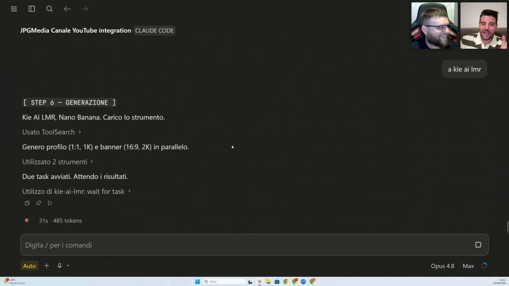
OCR: = a € [GP | suc, JPGMedia Canale YouTube integration CLAUDE CODE Au è n Nan iii a kie ai Imr [ STEP 6 — GENERAZIONE ] Kie AI LMR, Nano Banana. Carico lo strumento. Usato ToolSearch > Genero profilo (1:1, 1K) e banner (16:9, 2K) in parallelo. x Utilizzato 2 strumenti > Due task avviati. Attendo i risultati. Utilizzo di kie-ai-Imr: wait for task > O ® D la 31s - 485 tokens Digita / per i comandi (1) Opus 4.8. Max D Auto + 9 >
che sia adatta a YouTube e quanto tempo ci impiegate e tutto quanto. Fatemelo sapere nei commenti perché è importante anche questo. Cioè creare il logo, il banner e tutto il resto. Poi lo vediamo. Ok. Quindi adesso sta generando in parallelo. Quindi non ne fa una una volta. Li sta generando assieme. Roberto è il primo che si è autodenunciato. Anche Marilena. Bestemmiano tutti col banner eccetera. Non entra mai. Vedete che io indovino i punti perché l'abbiamo fatto proprio su tutte le cose che ci hanno fatto perdere tempo all'infinito e fatti incazzare anche. Considerate che il banner ad esempio, che è quello che di solito dà più problemi, è stato pensato proprio per guardare. Banner del canale. Questa è la dimensione ufficiale che ci dà YouTube.
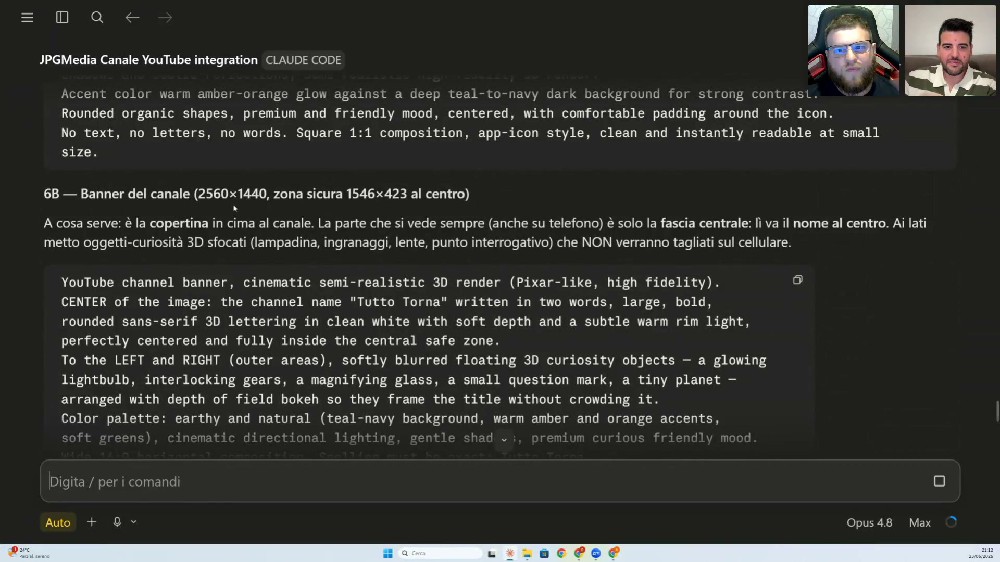
OCR: = a € JPGMedia Canale YouTube integration CLAUDE CODE Accent color warm amber-orange glow against a deep teal-to-navy dark background for strong contrast. Rounded organic shapes, premium and friendly mood, centered, with comfortable padding around the icon. No text, no letters, no words. Square 1:1 composition, app-icon style, clean and instantly readable at small size. 6B — Banner del canale (2560x1440, zona sicura 1546x423 al centro) LI A cosa serve: è la copertina in cima al canale. La parte che si vede sempre (anche su telefono) è solo la fascia centrale: lì va il nome al centro. Ai lati metto oggetti-curiosità 3D sfocati (lampadina, ingranaggi, lente, punto interrogativo) che NON verranno tagliati sul cellulare. YouTube channel banner, cinematic semi-realistic 3D render (Pixar-like, high fidelity). 9 CENTER of the image: the channel name "Tutto Torna" written in two words, large, bold, rounded sans-serif 3D lettering in clean white with soft depth and a subtle warm rim light, perfectly centered and fully inside the central safe zone. To the LEFT and RIGHT (outer areas), softly blurred floating 3D curiosity objects — a glowing lightbulb, interlocking gears, a magnifying glass, a small question mark, a tiny planet — arranged with depth of field bokeh so they frame the title without crowding it. Color palette: earthy and natural (teal-navy background, warm amber and orange accents, soft sreens), cinematic directional lighting, sentle shad + ;, premium curious friendly mood Digita / per i comandi O Auto + 9 Opus 4.8. Max D
Però a noi interessa la zona sicura, quindi il posto dove tutto è visibile per tutti i dispositivi. Che è questa in realtà. Quindi questo banner è stato scritto e pensato proprio per far entrare tutto, per far vedere tutto a tutti i dispositivi. Quindi li ha già fatti. Guardate. Entrambe pronte. Le scarica subito perché ovviamente le va a analizzare. A livello di tempo, quanto ci avreste impiegato a farle, fare il prompt, fare l'immagine, farla bene. È vero che lo faceva lei. E quando vi abbiamo detto mamma quanto tempo. Magari tipo tra sei mesi esce un'altra cosa assurda, peggio di questo, anche se la vedo difficile. Però guardate, anche questo è stato creato. Quindi l'immagine e il banner, senza stare lì a perdere tempo e a bestemmiare, come vi ho detto. Non bestemmiamo, si fa per dire ovviamente. Ma ti arrabbi perché l'immagine non ti esce come la vorresti.
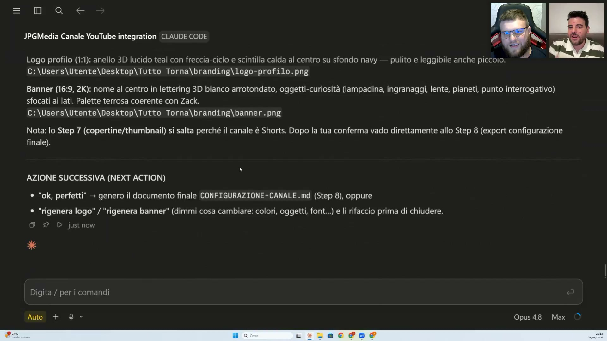
OCR: = a € JPGMedia Canale YouTube integration CLAUDE CODE Logo profilo (1:1): anello 3D lucido teal con freccia-ciclo e scintilla calda al centro su sfondo navy — pulito e leggibile anche piccoro. C:\Users\Utente\Desktop\Tutto Torna\branding\logo-profilo.png Banner (16:9, 2K): nome al centro in lettering 3D bianco arrotondato, oggetti-curiosità (lampadina, ingranaggi, lente, pianeti, punto interrogativo) sfocati ai lati. Palette terrosa coerente con Zack. C:\Users\Utente\Desktop\Tutto Torna\branding\banner.png Nota: lo Step 7 (copertine/thumbnail) si salta perché il canale è Shorts. Dopo la tua conferma vado direttamente allo Step 8 (export configurazione finale). AZIONE SUCCESSIVA (NEXT ACTION) * "ok, perfetti" — genero il documento finale CONFIGURAZIONE-CANALE .md (Step 8), oppure * "rigenera logo" / "rigenera banner" (dimmi cosa cambiare: colori, oggetti, font...) e li rifaccio prima di chiudere. 9 £ D justnow * Digita / per i comandi n Auto + 9 Opus 4.8. Max
Esatto. Quindi ha analizzato tutta una marea di informazioni, avete visto quante sono. Lo step successivo è quello di andare a creare un file, un file md, che è un file leggibile per l'intelligenza artificiale, che contenga tutte queste informazioni. Quindi il prossimo step è questo. Adesso vi faccio vedere anche quello che ha fatto. Decidiamo che il file non lo dovete fare voi. Avete capito che Luigi ha messo un link che sta dicendo solo ok, ok, ok. Tra l'altro, cosa fondamentale, altre bestemmie da parte di tutti e confermatemelo. Quante volte poi non trovate dove avete salvato l'immagine, il banner, i testi, le copertine? Ditemi anche questo. Perché con questo strumento trovate tutto in un'unica cartella? Non era preparato, ragazzi. Il nome è stato preso a caso.
OCR: = a € JPGMedia Canale YouTube integration CLAUDE CODE Letto 2 file [ STEP 6 DI 8 — ASSET GENERATI MB ] Fatte e salvate. Ortografia del banner verificata a schermo: "Tutto Torna" scritto corretto. Logo profilo (1:1): anello 3D lucido teal con freccia-ciclo e scintilla calda al centro su sfondo navy — pulito e leggibile anche piccolo. C:\Users\Utente\Desktop\Tutto Torna\branding\logo-profilo.png Banner (16:9, 2K): nome al centro in lettering 3D bianco arrotondato, oggetti-curiosità (lampadina, ingranaggi, lente, pianeti, punto interrogativo) sfocati ai lati. Palette terrosa coerente con Zack. C:\Users\Utente\Desktop\Tutto Torna\branding\banner.png Nota: lo Step 7 (copertine/thumbnail) si salta perché il canale è Shorts. Dopo la tua conferma vado direttamente allo Step 8 (export configurazione finale). AZIONE SUCCESSIVA (NEXT ACTION) * "ok, perfetti" — genero il documento finale CONFIGURAZIONE-CANALE .md (Step 8), oppure * "rigenera logo" / "rigenera banner" (dimmi cosa cambiare: colori, ogget , font...) e li rifaccio prima di chiudere [m) Digita / per i comandi n Auto + 9 Opus 4.8. Max
Quindi adesso, un secondino, perché così facciamo vedere il risultato.
Un secondo al buonissimo. Quindi ecco, vedo che tanti, pure Rosari. Marilena la vedo una impegnata nelle bestemmie. Quindi anche lì, Marilena, uno con Claude. Io vi ripeto, noi la formazione è questa che state vedendo. Vi stiamo facendo vedere che strumenti stiamo utilizzando, come li stiamo utilizzando e con quali altri strumenti. C'erano le immagini, i video, ci fanno la musica e quant'altro.
OCR: omni
Si vede piccolissima l'icona. Ok, ora si vede grande. Quindi questo è il file che ci ha creato adesso. Vedete 21 e 14 adesso. E questo è il branding del canale. Quindi abbiamo questo. Scusate, si è aperto sull'altro schermo.
OCR: di Desktop
Che vediamo è perfettamente centrato nella parte sicura. E questo è il nostro logo.
Anche qua ragazzi, non perdeteci tempo. Tanto non va a cambiare l'andamento del canale. Sì, del canale. Allora, per il passaggio successivo, quindi la produzione di un video vero e proprio, abbiamo bisogno di questo file, che è il file che ci ha creato poco fa. Quindi adesso non faccio altro che copiarlo. Torno sul mio Cloud Code e vado a lanciare la seconda parte di quella skill che abbiamo fatto vedere.
OCR: JPGMedia Canale YouTube integration CLAUDE CODE Amo a [ STEP 6 DI 8 — ASSET GENERATI MW ] Fatte e salvate. Ortografia del banner verificata a schermo: "Tutto Torna" scritto corretto. Logo profilo (1:1): anello 3D lucido teal con freccia-ciclo e scintilla calda al centro su sfondo navy — pulito e leggibile anche piccolo. C:\Users\Utente\Desktop\Tutto Torna\branding\logo-profilo.png Banner (16:9, 2K): nome al centro in lettering 3D bianco arrotondato, oggetti-curiosità (lampadina, ingranaggi, lente, pianeti, punto interrogativo) sfocati ai lati. Palette terrosa coerente con Zack. C:\users\Utente\Desktop\Tutto Torna\branding\banner.png Nota: lo Step 7 (copertine/thumbnail) si salta perché il canale è Shorts. Dopo la tua conferma vado direttamente allo Step 8 (export configurazione UDESÌ AZIONE SUCCESSIVA (NEXT ACTION) * "ok, perfetti" — genero il documento finale CONFIGURAZIONE-CANALE .md (Step 8), oppure * "rigenera logo" / "rigenera banner" (dimmi cosa cambiare: colori, ogget , font...) e li rifaccio prima di chiudere Digita / per i comandi O Auto + Q > Opus 4.8 Max
È quindi video e vado a incollare il file, questo che ci ha creato adesso. Lo potreste fare pure col copy e incolla dentro chat gpt, ma se si fa così è ancora meglio. Dentro Cloud, detto dentro chat gpt. Abbiamo già incollato il file che gli servirà per generare i prossimi video e le competenze per generare i video saranno dentro questa skill. Annalisa come si crea il file md e come scaricarlo. Non lo devi ne creare tu, gli devi solo scrivere di crearlo e poi si scarica in automatico e te lo salva nella cartella.
OCR: = a y | JPGMedia Canale YouTube integration CLAUDE CODE dieci ©. o ea CONFIGURAZIONE DEL CANALE COMPLETATA. Le fondamenta del tuo canale "Tutto Torna" sono pronte. Per produrre i video, usa la skill "jpgmedia-video" (Motore di Generazione Video) e dalle come input il Profilo di Intelligence + il Profilo Stile Visivo di questo documento. Cosa carichi su YouTube ora, in pratica: 1. Foto profilo — branding\logo-profilo.png 2. Banner — branding\banner.png 3. Descrizione e tag — copia i blocchi dal documento (sezioni 3 e 4) 4. Nome canale + Tutto Torna Quando vuoi fare il primo Short, dimmi "produci un video" e parto con la pipeline di produzione. 9 © D 1mago Digita / per i comandi (1) Auto + 9 Opus 4.8. Max
Esatto, lo trovate nella cartella dove trovate anche il logo e il banner del canale. Ok, quindi cosa fa all'inizio? Analisa il file che vi abbiamo dato, quindi il canale schiamerà tutto torno. Abbiamo già la nicchia, abbiamo il pubblico di riferimento, lo stile di scrittura, i ganci, la struttura del copione. Abbiamo tutto, lo stile visivo, i titoli. Quindi adesso ci chiede, ok io so come vuoi il canale. Posso farti delle idee? Sì. Quindi, uno, sono anche lì a scrivere i file. Quindi cosa farà? Vuoi che ti chiedi? Prego a sottolineare a Tuilio che stai scrivendo solo uno, due, bio. Esatto. E anche qui, questo che avete visto va fatto solo una volta nel canale. Sì. Quindi la prima parte, quella di analisi del canale, l'ha fatta una volta per avere il file MD.
OCR: = a e JPGMedia Canale YouTube integration CLAUDE CODE orchestrale + foley Tutto chiaro e memorizzato. > AZIONE SUCCESSIVA (NEXT ACTION) Due cose per partire con il primo video: 1. Idea: vuoi che ti generi io 25 idee in linea con la nicchia (poi ne scegli una), oppure hai già un tema in mente? Scrivi "genera idee" o dimmi il tema. 2. Formato: confermo Short 9:16 (come da config), giusto? Se per questo video vuoi un Long 16:9, dimmelo. O sè D justnow Y 20s- sto ancora pensando Digita / per i comandi (1) x Auto + Q Opus 4.8. Max
Quindi il file con tutte le informazioni del vostro nuovo canale. Una volta che avete questo, partite direttamente da questa skill. Quindi oggi devo rifare un video, gli do il mio file MD e da lì partirà la skill che vediamo adesso. Quindi, prima cosa, generare idee nuove. Basate però, non basate su niente, basate sull'analisi che ho fatto nei canali precedenti. Guardate, guardate ragazzi, una cosa ci tengo a sottolineare. Guardate anche i titoli. Oltre l'idea, anche il titolo che c'è già. Sono tutti titoli studiati sia con le parole chiave sia col fatto che vengono effettivamente cliccati. Esatto. Ok? Quindi guardate, queste sono le idee che ti dice dovresti fare questi video. Anche qui, se voi ve le volete fare subito 100, 5000, dì vai, fanne altri 10.000.
OCR: = a € JPGMedia Canale YouTube integration CLAUDE CODE ® (ESTER 2.DI 15/= IDEE j Formato Short 9:16 confermato. Ecco 25 idee in stile "Tutto Torna" (fatti veri, sorprendenti, con un twist e facili da animare in 3D). Le tengo salvate: dopo questo video potrai sceglierne un'altra senza rigenerarle. NATURA & ANIMALI 1. Il polpo ha tre cuori (e due si fermano quando nuota) © . Lo squalo della Groenlandia può vivere oltre 400 anni % . I fenicotteri nascono grigi: diventano rosa per quello che mangiano ® . I tardigradi sopravvivono persino nel vuoto dello spazio ® . Gli alberi di una foresta si "parlano" tramite i funghi sottoterra @ . Le api sanno riconoscere i volti umani ® . L'axolotl può rigenerare parti del proprio corpo % . Perché i gatti fanno le fusa (non solo quando sono felici) ® ONa 1AW%WN CORPO UMANO 9. Perché ti viene il singhiozzo (un'eredità dei nostri antenati) ® 10. Hai un punto cieco negli occhi e non te ne accorgi ® 11. Perché vedi le "stelline" se ti alzi di scatto ® Digita / per i comandi Auto + 9 Opus 4.8. Max
Ma soffermiamoci un attimo su questo. Ci ha dato quello che ci serve già per far partire il canale. Noi prendiamo magari uno a casa, non so questo qua, prendiamo. E lo vado a, quindi, dammi il numero dell'idea che vuoi, io gli incollo semplicemente il titolo. Rispondo pure intanto a qualche domanda così ne approfittiamo. Katia dice, ma questo agente AI è stato creato, gli avete insegnato tutto quanto voi? Sì, praticamente questa che vedete si chiama skill, che è una competenza che gli abbiamo insegnato noi. Ok? Ma è quello che comunque fate già, io mi auguro, tutti quanti nei canali, però qui è fatto già dall'agente AI. Ok? Una cosa importantissima, guardate, che abbiamo voluto inserire soprattutto adesso, io come YouTube, no?
OCR: = a € JPGMedia Canale YouTube integration CLAUDE CODE . Gli alberi di una foresta si "parlano" tramite i funghi sottoterra ® [ STEP 3 DI 15 — REPORT INTELLIGENCE SULL'ARGOMENTO ] Idea scelta: #5 — Gli alberi si "parlano" tramite i funghi sottoterra (il famoso "Wood Wide Web"). RA Verifica dei fatti (cosa è VERO) ® VERO: le radici degli alberi sono collegate a sottilissimi fili di funghi (le micorrize). È una simbiosi: l'albero dà zuccheri al fungo, il fungo dà acqua e sali minerali all'albero. ® VERO: questi funghi collegano tra loro tanti alberi diversi in una rete sotterranea — soprannominata "Wood Wide Web" (la "rete di legno"), termine nato su Nature nel 1997. * VERO (dimostrato): attraverso questa rete possono passare carbonio e nutrienti da un albero all'altro (esperimenti con isotopi traccianti). ® A DA MANEGGIARE CON CURA: l'idea che gli alberi "si avvisino dei SRRTRRA e che le " Trriate madri nutrano i piccoli" è affascinante ma ancora dibattuta daali scienziati. Nel copione la pre Digita / per i comandi [1 Auto + 9 Opus 4.8. Max _ D
È la verifica dei fatti. Quindi andiamo a creare video, effettivamente veri, poi lui può darci delle indicazioni, però in realtà la verifica dei fatti viene fatta sempre, no? Ci fa una piccola scheda dell'argomento. Altra formazione di oggi, Duilio, fondamentale da scrivervi. YouTube, il nuovo YouTube, non vuole più che scrivete cazzate, come magari si poteva fare un tempo. Quindi, se iniziate, scrivete che è morto Donald Trump, e non è vero. Canale demonetizzato, visualizzazioni che non esistono più, il canale non vi funziona. Quindi, questa è una cosa fondamentale, verificare sia le fonti, sia farsi che quello che viene detto è reale. Quindi, lo sottolinio, dobbiamo fare video belli. Il nuovo YouTube, l'abbiamo detto anche nelle live vecchie, vuole video belli, non più AI spazzatura, ma AI di altissimo livello, ed è quello che state vedendo qui. Esatto. Quindi, una volta che ha, diciamo, analizzato un po' più nel dettaglio il titolo che ci ha proposto,
OCR: = a € JPGMedia Canale YouTube integration CLAUDE CODE nato su Nature nel 1997. ® VERO (dimostrato): attraverso questa rete possono passare carbonio e nutrienti da un albero all'altro (esperimenti con isotopi traccianti). ®* A DA MANEGGIARE CON CURA: l'idea che gli alberi "si avvisino dei pericoli" e che le "piante-madri nutrano i piccoli" è affascinante ma ancora dibattuta dagli scienziati. Nel copione la presento come "alcuni studiosi pensano che...", non come certezza. Così il video resta vero e non rischia smentite nei commenti. E Scheda dell'argomento Voce Categoria Target Strategia hook Durata stimata Guida emotiva VEIL Scienza / Natura (curiosità educativa) 13-34, amanti del "lo sapevi", natura e misteri Partire da un'immagine concreta sotto i piedi: "Sotto questa foresta è nascosta una rete..." — open loop immediato -94 parole = 37 secondi Curiosità + meraviglia crescente + "wow" finale Digita / per i comandi Auto + 9 > Opus 4.8. Max
si va a fare una mappa di quello che dovrà essere lo script, andrà a costruire delle tecniche di retention, quindi per portare il pubblico a guardare il video per il più tempo possibile, e se noi confermiamo, chiediamo l'ok, e ci scriverà lo script. Ovviamente, anche qua, se non ci piace quello che sta facendo, lo possiamo far rifare. Noi adesso stiamo dando sempre l'ok, ma potete comunque aggiustarlo secondo le vostre idee e indicazioni. Insomma, è tutto personalizzabile, poi. Do un altro consiglio, al di là della skill, eccetera. Vedete che vi dice, dimmi se vuoi un angolo diverso, misterioso, inquietante, o più scientifico o preciso. Il consiglio che vi diamo tutti, e anche nei vostri canali già su cui state lavorando, più gli date un taglio preciso, e meglio è. Se raccontate storie, dategli magari o il tono scientifico, o il tono misterioso, non fate centomila cose,
OCR: = a € JPGMedia Canale YouTube integration CLAUDE CODE ® dimmi se vuoi un angolo diverso (es. più "misterioso/inquietante", o più "scientifico-preciso") e adatto il report. ok [ STEP 4 DI 15 — COPIONE ] Conto le parole con precisione (bersaglio -94, intervallo 89-99). Eseguito Count script words and estimate duration > 110 troppo lungo. Taglio a 94. In esecuzione Recount trimmed script words > ® 37s-489tokens Digita / per i comandi (ta) Auto + 9 Opus 4.8. Max
perché non funziona più neanche questo nel nuovo YouTube. Con gli shorts, però, è diverso. Con gli shorts potete usare un po' di più, perché appunto sono creati apposta proprio per questo. Esatto. Vedete, noi nel file md abbiamo dato dei caratteri di intervallo per andare a creare, a replicare perfettamente il canale. E qua, mentre Pietro parlava, stava adattando la lunghezza del prompt. Ha capito che era troppo lungo e l'ha tagliato. E praticamente abbiamo finito. Aspetta, altre bestemmie per tutti. Quante volte avete scritto al chat GPT, magari, fammi il testo più lungo, fammi il testo più corto. Ti avevo detto, testa di cavolo, di farlo 80 caratteri. Quasi autorregola da solo. Decide lui, in base a quello che è l'anicchia, il canale, lo script, deve essere 80 parole.
OCR: = a € JPGMedia Canale YouTube integration CLAUDE CODE Eseguito Final word count check > [ STEP 4 DI 15 — COPIONE ] Copione pronto: 99 parole — B nell'intervallo (89-99), durata stimata -40 secondi. | puntini (...) servono a far fare una micro-pausa alla voce; i ritorni a capo le fanno prendere fiato tra un blocco e l'altro. La frase finale è il payoff (“Tutto Torna"). Sotto questa foresta, gli alberi si scambiano messaggi... senza dire una parola. (e) Le loro radici sono collegate a sottili fili di funghi, lunghi chilometri. L'albero regala zuccheri al fungo. In cambio, riceve acqua e sali minerali. Ma questi fili non uniscono un albero solo: li collegano quasi tutti. Così, da una pianta all'altra, può viaggiare il nutrimento. Alcuni scienziati pensano che gli alberi più grandi usino nuesta rete per nutrire i piccoli... e perfino per Digita / per i comandi Auto + 9 Opus 4.8. Max OD
Non è che gli dovete dire, mettimi di più, mettimi di meno. Perché non lo fa? Perché sa che per far funzionare il video deve durare 80 caratteri. Tutti dicono, è vero, è vero. Perché, ragazzi, abbiamo preso tutti i problemi di YouTube e li abbiamo tolti con questa cosa. Quindi abbiamo il nostro script. Ha fatto il controllo, ovviamente, sulla durata. Ha fatto il controllo sulla scrittura. Ha fatto il controllo sui fatti. Già questo è veramente incredibile. E noi andiamo avanti. Quindi, approvato. Script fatto. Quanto ci abbiamo messo? Dieci secondi, forse neanche. Do uno spoiler potentissimo, Duilio. Perdoni. Ora voi state vedendo tutti questi quindici step che li facciamo di volta in volta. Però ascoltate che questa è la cosa più potente di tutti.
OCR: = a € JPGMedia Canale YouTube integration CLAUDE CODE Controllo Esito Conteggio parole 99 / target 94 + Nell'intervallo Y Durata stimata =40 s (perfetto per uno Short) Struttura Hook v - sviluppo passo-passo v - twist finale Y Fatti Verificati; la parte "si avvisano" è introdotta con "alcuni scienziati pensano" v > AZIONE SUCCESSIVA (NEXT ACTION) * "approvato" — vado allo Step 5/6 (conferma stile visivo) e poi divido il copione in scene con i prompt, oppure e dimmi cosa cambiare (una frase, il finale, il tono...) e riscrivo restando nel conteggio parole. 9 2 D Imago approvato [ua] Digita / per i comandi Auto + 9 - Opus 4.8. Max
Quando poi uno capisce come funziona, eccetera, e volete farne partire venti in parallelo video, cinquanta, dieci, mille, eccetera, potete farli partire. Quindi non c'è neanche bisogno poi di fare tutto questo. Ogni volta. Ma poi vi ripeto, dopo il primo step, questo il secondo, secondo me ci vale la pena leggere anche quello che ci scrive, perché imparate tantissimo. È come se ci siamo noi. Sì. Ma anche rivedendovi questo che abbiamo fatto, già c'è scritto tutto. Vado avanti. Vai, è provato, sì. Ah, aveva già fatto. Sì. Allora, ovviamente andrà a definire sulle informazioni che abbiamo raccolto prima lo stile, quindi in che stile deve essere il video che andrà a realizzare. Anche qua ci chiede, se va bene, di confermarlo.
OCR: = a € JPGMedia Canale YouTube integration CLAUDE CODE VA ©: RUI ® [ STEP 6 DI 15 - STILE VISIVO ] Copione approvato MB. Lo stile visivo è già fissato nella configurazione del canale — lo applico a tutte le scene: ® Stile: 3D CGI semi-realistico (Pixar-like), atmosfera "storybook" * Palette: terrosa e naturale — verdi, marroni, accenti caldi ambra/arancio; per questo tema useremo molto verde foresta + luce dorata che filtra tra gli alberi + terra/radici marroni ® Luce: direzionale con ombre vere, sfondo spesso sfocato (bokeh) ® Camera: mobile (lente carrellate, zoom, discesa sotto terra) * Sottotitoli: bianchi grassetto, bordo nero, centrati in basso (li decidiamo allo Step 12) Per questo video aggiungo un elemento-firma: la rete di funghi che si illumina sottoterra (filamenti luminosi tra le radici) — rende visibile e "magico" il concetto. > AZIONE SUCCESSIVA (NEXT ACTION) "ok" per confermare lo stile + passo allo Step 7 (scelgo il metodo di produzione: immagini animate vs video diretto). Oppure dimmi una variazione di Digita / per i comandi Auto + 9 Opus 4.8. Max _ D
Quindi ipotizziamo che comunque vada bene questo stile 3D CGI sindicalistico. Va benissimo. Facciamo ok. Andiamo avanti. Quindi adesso stiamo iniziando a creare il video. Ha realizzato lo script, ha analizzato lo stile del video e adesso inizierà a produrre i contenuti veri e propri. Quindi la prima cosa che ci chiede è, ma questo shorts lo vuoi realizzare partendo da un'immagine e poi animandola o partendo da un testo che diventerà immediatamente video? Abbiamo fatto questa cosa perché a seconda della vostra nicchia potrebbe essere meglio una cosa rispetto che l'altra. In questo caso, per questo genere di canali, sicuramente è meglio fare le immagini prima. Quindi gli do A. Altra cosa fondamentale, le skill in generale, quando uno ha una skill o la crea, ha comunque sempre formazione extra, modo di aggiornarla e adattarla in base al proprio stile,
OCR: = a € JPGMedia Canale YouTube integration CLAUDE CODE Vantaggi: controllo totale, stile e ambientazione restano coerenti tra le scene, sprechi meno crediti (se un'immagine non va, le B) Testo + video diretto Descrivo la scena e l'Al genera direttamente la clip animata, saltando l'immagine fissa. — Vantaggi: più veloce. Svantaggi: meno controllo, lo stile può cambiare tra una scena e l'altra. Per "Tutto Torna" (stile 3D coerente, foresta + rete luminosa) consiglio nettamente A. > AZIONE SUCCESSIVA (NEXT ACTION) Scrivi A o B. Poi divido il copione in scene (-5s l'una) e ti preparo i prompt immagine + gli effetti sonori + la musica (Step 8). sE 10s - sto pensando. Digita / per i comandi (1) Auto + 9 Opus 4.8. Max D
in base al proprio canale, in base a quello che vuole realmente. Perché voi potete migliorarla la skill, più che migliorarla, adattarla nello specifico di un canale. Quindi se io parlo di un tipo di animali, è normale che sarà diverso dal calcio. Quindi si può sempre di più adattare e migliorare come lo volete voi, senza dovergli far fare modifiche extra. Quindi adesso ci vorrà qualche secondo. Inizierà, vedete, ne ha anche il tempo di dirlo. Cosa farà? Andrà a proporci una prima scena, quindi l'immagine 1. Perché? L'andrà a realizzare, adesso ci chiederà di realizzarla, in maniera tale che noi gli diamo l'ok. Quindi se la prima immagine va bene, lo facciamo continuare. Se non ci piace, la facciamo cambiare. Quindi ci sta facendo tutto lo storyboard in realtà.
OCR: = a € JPGMedia Canale YouTube integration CLAUDE CODE stile (stessa foresta, stessa luce) fi SCENA-001 — Hook - "Sotto questa foresta, gli alberi si scambiano messaggi... senza dire una parola." VISUAL: Cinematic semi-realistic 3D!render, Pixar-like style, vertical 9:16. A lush green forest seen from (n) within, tall trees with thick trunks, warm golden sunlight filtering through the canopy creating soft light beams and gentle mist. Faint hints of glowing threads barely visible beneath the forest floor. Earthy natural palette (forest greens, brown soil, warm amber light), soft directional lighting, shallow depth of field bokeh, premium storybook mood. No text. SFX 1: calm forest ambience with distant birds SFX 2: gentle wind through leaves SFX 3: low mysterious tonal swell fi SCENA-002 - "Le loro radici sono collegate a sottili fili di funghi, lunghi chilometri." VISUAL: Same forest, same style and palette. Underground cross-section view of the soil beneath a tree: thick (e) roots descending into dark earth, connected to extremely ***n glowing fungal threads (mycelium) stretching far Digita / per i comandi O Auto + 9 Opus 4.8. Max
Quindi la scena... Dai una cosa, Luigio. Andiamo avanti e poi gli spieghiamo il resto. Così almeno velocizziamo gli step. Ok. Noi andiamo ok senza sapere se va bene o no. Quindi adesso cosa ha fatto? Ha diviso tutto lo script. Analizzando lo script, ha realizzato un prompt, quindi un visual per ogni scena. Ha realizzato il prompt per l'immagine di quella scena. Gli effetti sonori e quello che viene detto nel voiceover. Vi ricordate che vi abbiamo detto gli effetti sonori fondamentali? Qui addirittura ce ne ha impostati tre. Quindi gli uccellini che si sentono da lontano nella foresta, il vento lieve, soffice e delicato. Ok, che se ne va un sacco di effetti. Pensate anche qui. Chi c'è dal 2022? Tipo Lucilla. Quanto tempo perdevamo ad andare a cercare l'effetto sonoro?
OCR: Di Q € JPGMedia Canale YouTube integration CLAUDE CODE d VISUAL: Cinematic semi-realistic 3D render, Pixar-like style, vertical 9:16. A lush green forest seu. i. um within, tall trees with thick trunks, warm golden sunlight filtering through the canopy creating soft light beams and gentle mist. Faint hints of glowing threads barely visible beneath the forest floor. Earthy natural palette (forest greens, brown soil, warm amber light), soft directional lighting, shallow depth of field bokeh, premium storybook mood. No text. SFX 1: calm forest ambience with distant birds SFX 2: gentle wind through leaves SFX 3: low mysterious tonal swell x î SCENA-002 - "Le loro radici sono collegate a sottili fili di funghi, lunghi chilometri." VISUAL: Same forest, same style and palette. Underground cross-section view of the soil beneath a tree: thick (e) roots descending into dark earth, connected to extremely thin glowing fungal threads (mycelium) stretching far into the soil. Faint warm-amber glow along the threads, earthy browns with subtle teal glow, dramatic underground lighting, shallow depth of field. No text. SFX 1: soft deep earthy rumble SFX 2: subtle magical shimmer SFX 3: faint crackle of growing roots Digita / per i comandi O Auto + 9 Opus 4.8. Max
La voglia. Oppure anche nei programmi di editing. Quanto tempo ci impiegate? Tra l'altro vi sto dicendo una bomba assurda ragazzi. Questa scrivetevela perché è assurdo. C'è la possibilità. Questo scrivetevelo veramente. Quando voi create questi effetti, queste musiche eccetera, vi rimangono sul vostro computer? Siccome sono uniche, lui le può anche riutilizzare senza perdere più tempo, crediti o nulla per fare. Ok? Questa è una cosa scioccante. Quando avete migliaia di video e di shorts. Esatto. Allora adesso, che c'è un secondino che la spostiamo. Noi gli abbiamo dato l'ok. Accanto alla X puoi abbassarlo secondo me. Ok. Quindi gli abbiamo dato l'ok. E adesso ci sta chiedendo. Ok, tu questo video come lo vuoi realizzato?
OCR: = Qu JPGMedia Canale YouTube integration CLAUDE CODE [ STEP 9 DI 15 — CONFIGURAZIONE TECNICA ] Li Ecco la "scheda tecnica" del video. Ti ho messo i valori consigliati (già testati). Devo solo farti scegliere 2 cose (motore delle clip e voce), poi entriamo in produzione. Parametro Valore consigliato Immagini Kie AI LMR - modello gpt_image_2 - 2K - 9:16 (come hai scelto prima) Clip video Kling 3.0, audio OFF (le clip devono essere mute: musica e SFX si montano dopo) Risoluzione finale 1080x1920 (1080p verticale, standard Short) Voce / SFX / Musica ElevenLabs - modello eleven_multilingual_v2 - Stabilità 0.45 - Somiglianza 0.80 - Stile 0.00 Cartella progetto Desktop\Tutto Torna Wood Wide Web, 1/2 Con quale motore genero le CLIP video (Kling 3.0, audio off)? > XxX Digita / per i comandi O Auto + 9 - Opus 4.8. Max D
Le immagini le realizziamo nel nostro caso, poi è comunque personalizzabile, con QIAI, con il modello DGBT 2. Per le clip video utilizziamo per animare Kling 3.0, Senza audio. La risoluzione deve essere questa. Gli effetti voce, effetti sonore e musica sarà fatto con il level ups. E ci dice anche dove andrà a creare la cartella. Adesso ci chiede, ovviamente, conferma. Aspetta Luigi, vi sta piacendo ragazzi? Voglio veramente, vi sta piacendo, state imparando, vi piace questa formazione? Capite perché ci tenevamo un sacco e perché vi hanno bombardato anche i ragazzi al telefono con i messaggi? Proprio perché volevamo farvi vedere questa cosa, aggiornarvi su dove cavolo siamo arrivati. Ok, quindi un applauso e un saluto pure ai ragazzi dell'area dei manager
OCR: = a € JPGMedia Canale YouTube integration CLAUDE CODE Immagini Kie AI LMR - modello gpt_image_2 - 2K- 9:16 (come hai scelto prima) Clip video Kling 3.0, audio OFF (le clip devono essere mute: musica e SFX si montano dopo) Risoluzione finale 1080x1920 (1080p verticale, standard Short) Voce / SFX / Musica ElevenLabs - modello eleven_multilingual_v2 - Stabilità 0.45 - Somiglianza 0.80 - Stile 0.00 Cartella progetto Desktop\Tutto Torna - Wood Wide Web\ Le due scelte che servono a te: Richiesta in corso Clip video Con quale motore genero le CLIP video (Kling 3.0, audio off)? Che voce vuoi per il narratore? (stile calmo che racconta, come Zack) 1/2 Con quale motore genero le CLIP video (Kling 3.0, audio off)? > Ea Digita / per i comandi O Auto + 09 Opus 4.8. Max D
che vi hanno scritto veramente diecimila volte per farvi partecipare. Perché loro sapevano che avremmo fatto vedere una cosa del genere. Quindi semplicemente adesso ci sta chiedendo con cosa dovrà realizzare i contenuti. Quindi abbiamo detto per le clip, in questo caso, per la dimostrazione, ti chiederemo chi è Iai. Ma vedete che avevamo impostato anche Xville eventualmente o qualcos'altro, quindi non siete obbligati a necessariamente usare questi due. Vi diciamo di andare avanti. Ci chiederà che tipo di narratore vogliamo. Ce ne darà una anche consigliata, quindi facciamo questa. Ma comunque, anche qua nel caso su IlevelUp, vedete, va a essere una vostra voce. Potete usare anche quella. Noi adesso per esempio usiamo questa, ma va bene qualunque. E così si annulla pure quell'altro problema totale della voce come tutti gli altri, eccetera,
OCR: = a € JPGMedia Canale YouTube integration CLAUDE CODE Immagini Kie AI LMR - modello gpt_image_2 - 2K - 9:16 (come hai scelto prima) Clip video Kling 3.0, audio OFF (le clip devono essere mute: musica e SFX si montano dopo) Risoluzione finale 1080x1920 (1080p verticale, standard Short) Voce / SFX / Musica ElevenLabs - modello eleven_multilingual_v2 - Stabilità 0.45 - Somiglianza 0.80 - Stile 0.00 Cartella progetto Desktop\Tutto Torna - Wood Wide Web\ Le due scelte che servono a te: Richiesta in corso Clip video » Con quale motore genero le CLIP video (Kling 3.0, audio off)? Che voce vuoi per il narratore? (stile calmo che racconta, come Zack) W 3m47s-433 tokens Digita / per i comandi O Auto + 9 Opus 4.8. Max
perché anche in base al tipo di canale avete visto, vi ho detto personalizzata, eccetera, si può creare proprio una voce specifica. Cioè, quel canale ha una voce che non ha nessun altro e viene veramente assurda. Si può, come lo sapete, sui Level Up si può clonare anche la vostra voce. Quindi si può fare veramente un casino di roba. Veramente, veramente tanto. Quindi adesso ci metterà qualche minuto perché dovrete realizzare, inizierà a realizzare un pochettino tutto, no? Vedete, abbiamo scelto come fare le clip, creo la struttura di cartelle e salvo copione, prompt e configurazione. Cosa sta facendo? Sul mio desktop sta creando una macro cartella dentro, poi ve la faccio vedere, dentro questa cartella andrà a creare delle sottocartelle con la cartella dove c'è lo script, la cartella dove c'è il voiceover,
OCR: = a € JPGMedia Canale YouTube integration CLAUDE CODE Risposte Con quale motore genero le CLIP video (Kling 3.0, audio off)? Kie AI LMR (consigliato) Che voce vuoi per il narratore? (stile calmo che racconta, come Zack) Maschile calda (consigliata) [ STEP 10 DI 15 — PRODUZIONE (setup + check di prova) ] Scelte registrate: clip + Kie AI LMR (Kling 3.0, audio off) - voce + maschile calda (uso "George", voce matura e narrante di ElevenLabs; la cambiamo se non ti piace). Creo la struttura di cartelle e salvo copione, prompt e config. Utilizzo di PowerShell > O ® D * 4m47s- 600 tokens - quasi finito di pensare Digita / per i comandi O Auto + Q Opus 4.8. Max D
la cartella dove ci sono tutti gli effetti sonori, la cartella dove c'è la musica, la cartella dove ci sono le immagini e la cartella dove ci saranno le clip video. In maniera tale che sia tutto organizzato e come mi diceva Pietro, magari qualcosina lo potete riutilizzare per altri video e non sia passato ulteriormente il costo di produzione. Edwilio, più che il costo di produzione, io sottolino il tempo, perché voi vi ricordate che vi ho detto che per fare un video magari io non uscivo, stavo con mio figlio. Ora gli devo solo dare il comando ok e gli agenti, questi, quello che fa il testo, quello che cerca il video, quello che genera le immagini e quello che monta, che poi lo vedrete, lavorano da soli, che non esisteva una cosa del genere prima. Anche qua non è che adesso gli abbiamo dato le indicazioni
OCR: ni . . Ji è JPGMedia Canale YouTube integration CLAUDE CODE Dx-S è (_ [ STEP 10 DI 15 — PRODUZIONE (setup + check di prova) ] Scelte registrate: clip + Kie AI LMR (Kling 3.0, audio off) - voce + maschile calda (uso "George", voce matura e narrante di ElevenLabs; la cambiamo se non ti piace). Creo la struttura di cartelle e salvo copione, prompt e config. Usato PowerShell > Salvo i file di progetto. Creato 4 file » Ora i 2 check di prova (per non sprecare crediti): genero la SCENA-001 (immagine ancora) e la voce completa. Carico lo strumento immagini e verifico lo script voce. Trovato file, utilizzato uno strumento > Tutto pronto (gpt_image_2 supporta 9:16/2K, script presenti). Controllo al volo come lo script voce prende la chiave, poi genero immagine + voce. Lettura gen_voce.py > Digita / per i comandi fis Auto + 9 Opus 4.8. Max D
e parte a produrci tutto il video, no, lui genererà la prima scena, ce la farà vedere, ci chiederà ti piace o non ti piace, se ti piace faccio tutte le altre, se non ti piace dimmi cosa non ti piace che lo andiamo a modificare e andrà a fare la voce, tanto comunque non short, è una voce molto breve. Una volta che le ha fatte, le mette nella nostra cartella che ci ha detto poco fa, quindi questa qua, una volta che le revisioniamo gli diamo l'ok per andare avanti. Anche qua ci vorrà qualche minuto, il tempo che vengono generati, vedete, voi sono già generati, quanto ci abbiamo messo? Il tempo di farvi vedere due secondi, e andrà a generare, a aspettare ovviamente la prima immagine, perché sarà quella che definirà poi se va bene. Allora nel frattempo tolgo un po' di dubbi a tutti quanti, visto che vedo i commenti. Allora qualcuno diceva ma si può utilizzare
OCR: = a € JPGMedia Canale YouTube integration CLAUDE CODE a | Ora i 2 check di prova (per non sprecare crediti): genero la SCENA-001 (immagine ancora) e la voce completa. Carico lo strumento immagini e verifico lo script voce. Trovato file, utilizzato uno strumento ? Tutto pronto (gpt_image_2 supporta 9:16/2K, script presenti). Controllo al volo come lo script voce prende la chiave, poi genero immagine + voce. Lettura gen_voce.py > Script ok (prende la chiave da . env). Genero SCENA-001 e la voce in parallelo. Eseguito un comando, utilizzato uno strumento > Voce generata MA. Attendo l'immagine SCENA-001 e misuro la durata della voce. Utilizzo di kie-ai-Imr: wait for task > O °D . 6m 47s - 2.8k tokens Digita / per i comandi O Auto + 9 Opus 4.8. Max D
pure su chat e pt, manus, eccetera. Allora dovete sapere che la maggior parte degli strumenti possono arrivare a fare questo, però se volete che funziona come ci sta funzionando a noi, Cloud è il migliore per fare questo. E apro un'altra parentesi, nessuno vi sta appuntando la pistola alla Tempia oggi e vi sta dicendo abbonatevi a Cloud perché a noi non ce ne frega un cavolo se vi abbonate o no, ve lo dico chiaro perché non ci cambia nulla. Però tutti quegli abbonamenti che uno aveva non c'è più bisogno perché con questo, più gli strumenti che vi abbiamo fatto vedere, quindi i Level Ups, XBuild, QAI, che sono quelli che vi ho fatto vedere all'inizio, i Level Ups, lavorano insieme e non hanno bisogno di abbonamenti, ma lavorano a consumo. Quindi solo sui video che andate a creare, questo è importante. Vi faccio vedere a volo quello che ha creato. Vi faccio vedere la cartella.
Rispondo a Gianluigi e agli altri, ragazzi, noi non abbiamo nessun interesse a farvi abbonare a Cloud, a Manus, a quello che volete, quindi quello che volevamo farvi vedere questa sera, ho letto Antonella Ricciardi, First Reaction Shock. E questo, volevamo farvi vedere quello che stiamo facendo noi e siamo strafelici di farvelo vedere. Guardate, questa è la
cartella che ci ha creato, ovviamente questa è quella degli effetti sonori, questa è il metadattico, lo vediamo, lo script e la voce, quindi ha creato il voiceover, il copione per il voiceover e lo script normale, e qua abbiamo la prima immagine, che comunque voglio
farvi notare, qualità interessante, è una bellissima immagine questa. Quindi da qua
OCR: TI Visual Assets x * si D O > Destop > fi rome PI Gate onde moners | scream | FISSO 4 Doenoni è HI Documenti è H3 immagini + Gia + Mu è Ra tondi + ma voDALC e ma + MI umore A dico oa darne u*+xzn©0@090E
il programma ci va a chiedere, va bene? Posso procedere con la generazione delle altre? Vai? Volutamente ho scritto anche qualcosa che non ci ha chiesto, quindi ho scritto semplicemente vai, non approvo né niente, e adesso genererà le parti che mancano, quindi prima le immagini, che poi diventeranno clip video. Quindi vedete quanto ci stiamo mettendo, vi stiamo anche spiegando, ci fermiamo un attimino, ma ci vuole veramente pochissimo, ragazzi, pochissimo, veramente pochissimo. Poi per avere un video finito è completamente evitato, quindi lo prendete nella cartella, lo potete andare a pubblicare direttamente. Esatto, quindi anche qui vi ricordate che a parte il software che abbiamo creato delle
OCR: = a € JPGMedia Canale YouTube integration CLAUDE CODE A ® "approvo, vai col batch" — genero in parallelo le scene 002-008 (partendo da questa per coerenza) + SFX + musica, oppure e "rigenera immagine" (dimmi cosa cambiare: più scura, più cartoon, più luce...) o "rigenera voce" (voce diversa / più lenta). Dato che la voce ti va bene o no, dimmi pure: se preferisci un'altra voce la cambio ora prima di proseguire. vai [ STEP 10 — BATCH ] Genero le 7 scene mancanti (partendo dalla SCENA-001 per coerenza) e intanto leggo lo script SFX per preparare effetti e musica. Utilizzo di kie-ai-Imr: gpt image 2 > oO ° D . 495 - 1.1k tokens Digita / per i comandi O Auto + 9 Opus 4.8. Max _ D
immagini, per creare immagini dovevate andare sempre lì, prendere l'immagine, vi abbiamo fatto vedere pure qualche strumento gratuito quando c'era che poi l'hanno tolto, oppure ci sono, però comunque dovete andare a creare i prompt a mano, fare copia, fare in colla e andare a generare tutte le immagini, quindi è quella la vera differenza sostanziale, che qui ogni step viene fatto in automatico. Lì devi comunque, anche quando ci sono automazioni, devi comunque creare i vari prompt, andare a fare copia, in colla e quant'altro. Ci tengo a sottolineare pure un'altra cosa, abbiamo creato un canale, un video, tutta la spiegazione, stiamo facendo tutto in diretta, ok? Quindi per farlo realmente ci vuole molto molto molto di meno una volta che voi avete tutto pronto, anche lì sulle immagini eccetera. Siamo allo step numero 10 adesso, ok? E questo è lo step quello lì che in realtà è forse
OCR: = a € JPGMedia Canale YouTube integration CLAUDE CODE [ STEP 10 — BATCH ] Genero le 7 scene mancanti (partendo dalla SCENA-001 per coerenza) e intanto leggo lo script SFX per preparare effetti e musica. Letto un file, utilizzato 7 strumenti > 7 immagini in generazione. Scrivo la lista effetti+musica e la lancio. Creato un file > Effetti+musica in generazione, e attendo le 7 immagini (tutto in parallelo). In esecuzione Generate all SFX and BGM with ElevenLabs > ; x O 9 D Y Im 49s - 1.6k tokens - 1 task in esecuzione Digita / per i comandi O Auto + 9 Opus 4.8. Max _D
quello più lungo alla fine, possiamo dire. È uno dei più lunghi, adesso sta praticamente creando tutti gli elementi del video, quindi le sette immagini perché uno l'aveva già creata, gli effetti sonori e la musica in background. Una volta che avrà fatto tutti gli elementi ci chiederà di animare le immagini che ha provato, che ha creato. Una volta che le avrà animate metterà tutto assieme e poi non vi spoilerò cosa succederà. Esatto, quindi è questo. Nel frattempo non so Luigi se abbiamo pure qualcosa di pronto, non so, più che altro per fargli vedere a loro. Sì possiamo, se tu vuoi, possiamo già far vedere qualcosa di pronto. Ci stanno pure bombardando di domande perché vedo che ovviamente siete carichi per vedere tutto, quindi magari... Dice questo shorts che si crea, che lunghezza
OCR: a € JPGMedia Canale YouTube integration CLAUDE CODE [ta] # 2mago [ STEP 10 — BATCH ] Genero le 7 scene mancanti (partendo dalla SCENA-001 per coerenza) e intanto leggo lo script SFX per preparare effetti e musica. Letto un file, utilizzato 7 strumenti > 7 immagini in generazione. Scrivo la lista effetti+musica e la lancio. Creato un file > Effetti+musica in generazione, e attendo le 7 immagini (tutto in parallelo). In esecuzione Generate all SFX and BGM with ElevenLabs > se 2m 49s - 1.6k tokens Digita / per i comandi (1) Auto + 9 Opus 4.8. Max D
di tempo avrà? Questo mi pare 40 secondi, ce l'ha scritto. Sì, la lunghezza di questo shorts è determinata dall'analisi che ha fatto nel canale di riferimento che gli abbiamo dato. Quindi ha analizzato il canale, ha analizzato i competitor principali di quel canale e ci ha detto guarda i principali competitor hanno questa lunghezza di video, la facciamo così e quindi sarà in linea con la lunghezza del canale di riferimento dei suoi competitor. Esatto, poi vedete qui ha generato la musica, ha generato le immagini e dice ora le controlla. Anche qui lo specifichiamo, abbiamo creato pure il controllo delle immagini e del video eccetera, per quello ci può volere un po' più di tempo. Magari facciamo una cosa, lo facciamo solo con le immagini senza video questo qui, così glielo facciamo vedere immediatamente. Sì, non avrà lo stesso risultato, ma lo possiamo così. Vabbè lasciamolo un attimo, più che altro
OCR: = a € JPGMedia Canale YouTube integration CLAUDE CODE Letto un file, utilizzato 7 strumenti > 7 immagini in generazione. Scrivo la lista effetti+musica e la lancio. Creato sfx_spec.json +16-0 > Effetti+musica in generazione, e attendo le 7 immagini (tutto in parallelo). Eseguito un comando, utilizzato 7 strumenti > Tutte le 7 immagini + 7 SFX + musica generati BB. Le scarico e le controllo. Usato PowerShell > Controllo a schermo le 7 nuove scene (coerenza stile + niente testo strano). Lettura SCENA-002.png ? oO 9 D x X* 3m 49s - 2.1k tokens Digita / per i comandi (1) Auto + 9 Opus 4.8. Max _D
perché stiamo andando abbastanza lunghi. Allora vi faccio vedere un risultato finito, va bene? Ok magari intanto sì e poi questo qua lo possiamo vedere che è finito, ha completato qui. Quindi ci fa un'analisi di quella che ha fatto, ci dà l'ok se vanno bene oppure no. Adesso andrà a generare le prime clip. Quindi vi faccio vedere, ora che ho fatto partire, guardate, fa anche un'auto analisi dell'esito della realizzazione e se è ancora coerente con la prima che abbiamo scelto. Ok, poi ovviamente queste clip vediamo se, guardate, ce le ha
OCR: DD visual Assets x + E = é ’ Desktop > Tutto Torna - Wood Wide Web > Visual © huod x ® i) reina - DI Vl BO trponiiome sioni 2 Riotta Di ucisidena @ Home II Galleria a Onedrve Pen PROMPTS | SCENAGOR | SCENA-GOO = SCENA = SCENA = SCENAOOS SCENA SCEMO scuso 1 Desktop 4 Domniond + 8) Documenti + RR immagini + Guia + Qui è Ri tonding è n voeD.ane + Ha disco locale data Sementi 1 elemento selezionato 308 MB ra ma u-rBC@oe pes
generate tutte. Quindi questa è la prima, questa è la seconda, questa è la terza, guardate che bello,
OCR: SCENACO
OCR: + Desktop. > Tutto Toma - Wood Wide Web > Visual. Assets Cerca în Visual Asset I RI ordine» © Visunizza © 89 import come sendo SCENA:00 = SCENROM = SCENADOS * “e einancom È Download }- E Document + MI immagini + Qi + Dvd Wi ceti è Ri baning 2a crm me voto. e DE VisuntAsset è è @uica < RBL Questo PC > il Diso lol > Rete > duna 9 elementi element saezionato 3.99 7 fast E u«saCc@E0@,
scusate, questa è la quarta. Ovviamente noi abbiamo preso un'idea a cavolo, però nel
momento in cui poi vi faccio vedere qualche risultato realizzato, guardate che bello, abbiamo tutti gli elementi pronti, guardate anche qua, tutti gli effetti.
OCR: GE ::53809-. 99 O ars arm ue a ®*-__—_ a |<
OCR: Tufto Torna - Wosd Wine Wan > Viusi Asca Hove PALI [ Tor psico Bin 3 He PI Galle 4 Cmmdmve. Pe « si PROMETS == SCENSDII © SCENAOO SONA SCENA: © scpeoti scena ee PI 4 Dino 8 img 1 demi 27 Cronache + rica VAI Quo PC a Deo locate dre d tin CS u-*snc@eoe
Questa era la cosa che io odiavo di più, sistemarmi le carte, riordinare tutto. Sei un grande disordinato.
OCR: = a € JPGMedia Canale YouTube integration CLAUDE CODE 002 Radici sottoterra + rete di funghi luminosa 003 Macro: zuccheri (oro) + acqua/minerali (azzurro) 004 Panorama: foresta sopra, ragnatela luminosa sotto I 005 Impulso di luce che viaggia tra due alberi I] 006 Albero grande nutre 3 piccole piantine n 007 Allarme rosso che corre nella rete (pericolo) I] 008 Rivelazione + piedi sul terreno con la rete sotto Bi payoff Audio pronto: voce (40,65) + 7 SFX + musica (-415), tutto salvato. > AZIONE SUCCESSIVA (NEXT ACTION) ® "anima" — passo allo Step 11: genero prima la CLIP-001 di prova (movimento leggero sulla scena 1) con Kling 3.0 (muto). La fai approvare, poi Digita / per i comand Li Auto + 9 > Opus 4.8 Max
Io e la voglia! Quindi con questo sei a fuoco. Quindi ragazzi, adesso sta generando le clip. Questo qua è il processo dove, ovviamente lavorando con clip, potrebbe metterci qualche minuto in più. Vi facciamo vedere, se Pietro è d'accordo, un video già finito, esattamente creato nello stesso modo. Ok, magari questo qua lo portiamo avanti e glielo facciamo vedere poi alla fine. Rispondendo nel frattempo solo a questo, perché qualcuno dice quale AI eccetera.
Allora, quando andate a creare il video, perché dicono quale token, quanto costa, quale devo utilizzare eccetera, parlando anche con la skill che vada ad analizzare, vi dice quali modelli di AI potete utilizzare e poi potete scegliere da quello che costa un miliardo a quello che costa nulla. Ma anche lì, veramente, alcune cose costano pochissimi centesimi. Poi, se volete fare il video super cinematografico, allora è un altro conto. Considerate che nella skill abbiamo inserito anche il consumo di crediti o comunque di utilizzo del programma specifico che utilizzate e anche il costo finale. Così avete una panoramica di quanto vi è costato quel contenuto. Esatto, per chi è super precisino, tipo Daniele Princivalle alla grande, perché sarà più ordinato di te. Abbiamo intanto qualcosa di... Questa qua è una...
Prima devi aprire il video e poi condividi la finestra col video, perché sennò non si sente l'audio. Quindi magari apri solo la cartella.
Aspetta un secondo che ve lo faccio vedere da qua. Annalisa dice io utilizzo tantissimo Flicky, esiste all'interno di Cloud Code? Al momento no,
però mai dire mai. E se ci sarà saremo i primi a dirvelo. Questo l'abbiamo fatto anche con un stile diverso, così potete vedere. Dimmi magari se si sente. Un cavaliere medievale aveva più paura del sole che della spada nemica. Ecco il punto. La sua armatura era una fornace. 20 Kg di acciaio sopra una spessa imbottitura, sotto il sole, senza un filo d'aria. Nel 1187, i crociati vennero accecchiati nell'eserve e lasciati cuocere. Molti morirono di sete e calore prima ancora di combattere. Perché in battaglia bastava un colpo di calore e un cavaliere svenuto era già un cavaliere morto. Ora questo è un esempio, ve lo faccio vedere anche con i contenitori.
Ragazzi l'audio si sente male perché c'è la condivisione del... Ma è pazzesco. Quello vi dico, siamo arrivati a quel livello, ferma duili un secondo, siamo arrivati esattamente a quel livello che volevate. Cioè a dire ma il video poi non è bello. Ragazzi questo è un film, è un film potete creare ormai.
Non avete più limiti. L'avete sentito quando si è abbassato la maschera? Com'è la maschera? Si chiama? Ancora non lo so. Ok si sentite il suono oppure il vento. Si sentiva male purtroppo. Ok però è scioccante. Sono assurdi. Fai vedere quello con i sottotitoli anche perché abbiamo visto che mette i sottotitoli e quant'altro. Si poi con la skill andando avanti potete decidere o meno se mettere i sottotitoli o no. Magari ve lo faccio vedere molto tanto, l'avete già sentito. Ci sono i sottotitoli in linea e allineati con quello che viene detto.
Quindi la parola evidenziata è abbinata a quello che viene detto in quel momento con il voi sopra. Guardate la qualità è assurdo. Se pensate poi che non avete toccato, non avete fatto editing, non avete fatto niente. Solo detto a Claude cosa fare. Quindi questo è il livello a cui siamo arrivati in questo momento ragazzi.
Esatto, esatto, esatto. Quindi vabbè ragazzi gli ultimi step ve li facciamo vedere tra un poco.
Ma vi facciamo vedere anche il video finito, perché ve l'ho detto c'è veramente un mondo dietro ed è assurdo. Quindi abbiamo visto un po' come funziona il nostro nuovo modo
di fare YouTube. Cosa pensate? Siete scioccati oppure è una cosa che vi sembra normale oppure non vi farà dormire questa notte? Fatemelo sapere nei commenti, perché vi ripeto quello che avete visto è esattamente quello che stiamo facendo ora noi e per chi se lo stesse chiedendo perché non ce l'avete fatto vedere prima? Perché non esisteva fino a ieri. Quindi appena c'è stato il momento di farlo funzionare, allora ve l'abbiamo messo
OCR: '} VUOI SCOPRIRE ESATTAMENTE COSA MI CONTIENE Mld - / GUADAGNA CON GLI SHORTS? Tra poco te lo mostriamo, pezzo per pezzo.
davanti agli occhi e vi abbiamo fatto vedere anche gli strumenti esatti che usiamo noi e stiamo lavorando 90% così e 10% ovviamente negli altri metodi che conoscete. Quindi se volete capire esattamente che cos'è guadagna con gli shorts, io lascio la parola al mitico
OCR: LASCIO LA PAROLA A
Mirko. Se ci sei Mirko, tu vieni o tu non andare via, finisci il video e tra poco ve lo facciamo vedere. Eccomi, mi sentite, mi vedete? Alla grande, fortissimo, bellissimo e luminosissimo. Quindi ti lasciamo la parola e ci vediamo dopo e così vediamo anche il video finito. Magari se
usciamo ne facciamo pure di più e vi facciamo vedere da quella lista quello che abbiamo fatto. Lo vediamo dopo. Perfetto, grazie mille e ci vediamo dopo con voi ragazzi. Allora ragazzi,
OCR: E | MANNTEI A {) | lo DC) A A oggi v| CA "GUADAGNA GLI SHORTS Crea la tua Media Al Company gestita da agenti Al. A D I | ARL ACI = =
intanto buonasera anche da parte mia, è davvero un piacere vedervi qui questa sera. Avete visto che bellissima serata di formazione che vi abbiamo promesso e che abbiamo mantenuto ma come facciamo sempre. Come molti di voi hanno scritto inizialmente, c'è chi ci segue da quasi dieci anni e quindi capite bene che per essere con noi dieci anni ancora oggi, avere tutto questo valore vuol dire che facciamo un buon lavoro, voi state facendo un buon lavoro, ma soprattutto la cosa più importante detta tra noi è che funziona e se funziona siamo tutti felici perché tutti abbiamo dei vantaggi. Quindi ragazzi è un piacere essere qui con voi, saluto tutti, vedo i vostri commenti, li sto leggendo, ho letto tutti i commenti che avete fatto durante la live, leggerò poi alla fine tutti i vostri commenti quindi come sempre commentate. Chiaramente come vi ha detto Pietro anche all'inizio, quello che noi facciamo come sempre è darvi la possibilità a voi studenti in primis di avere una grande formazione per le informazioni come abbiamo visto questa sera. Per chi invece vuole essere aiutato, supportato, vuole entrare più nel
OCR: GUADAGNA CON C GLI SHORTS gar Crea la tua Media Al Company gestita da agenti Al.
dettaglio e vuole scoprire come guadagnare con gli shorts, in anteprima perché l'abbiamo fatto esclusivamente per voi, abbiamo creato Guadagna con gli Shorts che come potete anche leggere qui è bellissima perché questo è l'obiettivo che avevamo all'inizio quando abbiamo pensato per la prima volta al mondo di YouTube Automation, cioè il fatto di creare una media company, solo che questa è una media AI company, detto tra noi non immaginavamo mai che si arrivasse un giorno ad avere l'intelligenza artificiale perché quando abbiamo iniziato noi nemmeno si parlava di AI, quindi è stata veramente una cosa fantastica, una manna dal cielo per tutti quanti. Chiaramente che cosa possiamo fare finalmente? Creare una media AI company gestita da agenti AI e quindi da questo punto di vista il vantaggio è gigantesco in termini di velocità, in termini di risultati, in termini di costi che si abbassano e sono ridicoli rispetto a quello di lavorare con una media company classica come tanti anni fa. Ora vado avanti con le slide e
OCR: IS "GUADAGNA CO GLI SHORTS gin Crea la tua Media Al Company gestita da agenti Al.
OCR: LA SOLUZIONE SE VUOI TUTTO QUESTO... GUADAGNA CON GLI SHORTS re 5
chiaramente è arrivato il momento di entrare un po' più nel dettaglio. Se voi tutto questo, Guadagna con gli Shorts chiaramente è quello che stavi cercando, quindi lo dico a tutti, se quello che a voi interessa e quello che avete visto fino ad ora vi piace, vi interessa, lo vorreste avere vostro, rimanete collegati perché adesso abbiamo creato per voi appositamente un modo per poter avere tutto questo, ok? E rimarrete scioccati alla fine quando poi arriveremo alla conclusione di queste slide, ok? Vi do questa promessa ma capirete perché vi dico questo tra poco, ok? In primis chiaramente abbiamo il cuore del metodo, il metodo replica canali Shorts che
OCR: IL CUORE DEL METODO VISTO IN DIRETTA REPLICA CANALI SHORTS Trova i canali Shorts che già guadagnano e replica il loro sistema con i tuoi Agenti Al.
abbiamo visto in diretta, quindi trova i canali Shorts che già guadagnano e replica il loro sistema con i tuoi agenti AI che come avete visto praticamente fanno tutto per noi. Quindi tutto quello che avete visto questa sera, il sistema già pronto, già settato, ok? Lo avrete a disposizione. Questo cosa vuol dire? Vuol dire che chiaramente quello che voi avete visto e questo lo dico sempre, non è Cloud Code che fa la differenza che è lo strumento che avete visto ed ottimo, ma il metodo della mucca rossa, quello che noi creiamo, come lo strutturiamo, che vi garantisco è lì che si fa la differenza perché come dico sempre tu vuoi avere anche la Ferrari, però se non sai guidarla, se non hai la patente, non serve a niente, ok? Se ti do la Ferrari ma non ti insegni il trucco per vincere le gare, quindi ti do la possibilità di poterle vincere, non ti servirà nulla perché sarai una persona con una Ferrari che non la può sfruttare, ok? E la stessa identica cosa è quello che avete visto questa sera. La differenza la fa il metodo
OCR: IL CUORE DEL METODO REPLICA CANALI SHORTS. Trova i canali Shorts che già guadagnano e replica il loro sistema con i tuoi Agenti Al.
replica canali shorts che abbiamo creato noi, ok? Ora andiamo avanti. Perfetto. Chiaramente cosa
OCR: LA SOLUZIONE SE VUOI TUTTO QUESTO... GUADAGNA CONSLI SHORTS È QUELLO CHE STAVI CERCANDO
abbiamo fatto? Essendo che parliamo di shorts, che gli shorts hanno un vantaggio gigantesco in questo momento. Sono facili da fare, sono veloci da fare, creano dei risultati incredibili. Vi parlo proprio milioni di visualizzazioni si possono fare con gli shorts, ok? Ma soprattutto dopo il reset che voi avete vissuto di YouTube dovete sapere che gli shorts è uno di quei format che è molto permissivo in tutto quello che noi facciamo su YouTube. Perché gli shorts per esempio e i video brevi ti danno la possibilità di prendere i video di altri canali e ripubblicarli. Magari li prendi da TikTok e li ripubblichi. Tanti monetizzano così. Non è quello che noi insegniamo adesso perché noi adesso ti diamo la possibilità di creare video cinematografici. Però il concetto è che è molto più permissivo e quindi anche per la monetizzazione ci lascia molta più tranquillità di lavorare nonostante è migliorata tantissimo la situazione di YouTube rispetto a qualche mese fa, fortunatamente. Quindi chiaramente partiamo da tutte quelle che sono le basi degli shorts.
OCR: YOUTUBE SHORTS Le fondamenta vere per partire da zero e sfruttare gli Shorts.
Quindi per chi non conosce gli shorts insegniamo tutte le basi ma chiaramente le basi aggiornate al 2026 perché dovete sempre considerare che questo è un mondo in continua evoluzione soprattutto con l'avvento dell'intelligenza artificiale. È normale che da questo punto di vista non possiamo pensare che quello che magari ho visto due anni fa funziona oggi perché migliora sempre tutto di più e quindi proprio per questo motivo noi abbiamo creato un prodotto super aggiornato. Quindi le fondamenta vere per partire da zero è sfruttare gli shorts con quello che funziona oggi e che funzionerà per il futuro. Poi il sistema metodo shorts automation 2026 dalla creazione
OCR: 45, LIL SISTEMA) METODO SHORTS 2) AUTOMATION 2026 DALLA CREAZIONE ALLA PUBBLICAZIONE, IN AUTOMATICO. IMPOSTI UNA VOLTA, PRODUCE PER SEMPRE.
alla pubblicazione in automatico, imposti una volta e produce per sempre. Chiaramente un'altra
OCR: NICCHIE PRONTE CATALOGO Aggiornato ogni mese 100 nicchie che funzionano sugli Shorts. La ricerca l'abbiamo fatta COR a asò FINANCE FITNESS FORARTS ca sa De "> Dot CREATIVE SUSTAINABILITY (GP) Em) ii EDUCATION DIY & ai ASTRONOMY PODCASTING
cosa che fa la differenza sono le nicchie per gli shorts e un mondo a parte quello delle nicchie perché sono totalmente diverse da quelli che sono i video lunghi. Quindi abbiamo creato un catalogo 100 nicchie che aggiorniamo ogni mese perché ci sono nicchie sugli shorts soprattutto che cambiano e vanno cavalcate e qual è il vantaggio? Che avendo un sistema automatizzato non è più lento il partire con una nuova nicchia perché abbiamo un sistema che fa tutto il lavoro per noi e quindi noi semplicemente nel momento in cui sappiamo abbiamo l'input, la mucca rossa ci ha detto di creare un canale tech, faccio un esempio banale, lo metto in atto come avete visto questa sera. Non c'è più la cosa di stare lì ore e ore e ore a fare delle robe che poi magari nemmeno sappiamo fare. Quindi 100 nicchie che funzionano sugli shorts, la ricerca l'abbiamo fatta direttamente noi per voi. Poi chiaramente abbiamo la community di supporto per tutto il
OCR: « 09 & ag = 9 ‘ NON SEI SOLO io $$ Ù L| î COMMUNITY n. DI SUPPORTO PREMIUM 24/7 PER TUTTO IL 2026 Dubbi, confronti e vittorie da condividere, giorno e notte.
duemila e ventisei e questo è soprattutto per chi ancora non ce l'ha, per chi poi non ha più rinnovato la community, ve la diamo, ve la diamo inclusa in tutto questo, quindi per tutto il duemila e ventisevere della community dove dubbi, confronti, vittorie da condividere, giorni e notti vi consiglio di usarla, la community circle, molti ce l'hanno e non fanno le domande, è da folli, andate lì, scrivete le domande, chiedete perché noi rispondiamo, inoltre abbiamo una directory di domande a cui abbiamo risposto, incredibile, magari dubbi che voi avete in testa, non sapete che noi già le abbiamo risposti e banalmente andare a fare una ricerca dentro la community fa la differenza, che tanto spesso è molto meglio di un AI, di un'intelligenza artificiale, perché noi sappiamo esattamente quello che stiamo facendo, perché c'è tutto il contesto del nostro business e quindi vi aiutiamo ancora di più di un'intelligenza artificiale, quindi sfruttatela perché è fondamentale. Poi chiaramente cosa succede? Che nel momento in cui voi avete la community sbloccate
OCR: GENNAIO 2026 MENSILE e ——2—me« T= 2 > #20 egli = gel, TO P_i Ri » ' È no | Lo | | n i SP È Hal $ I e masterclass e le tue domande con risposta diretta, dal vivo.
un'altra cosa, che sono le master class, le Q&A ogni mese, quindi anche live come questa, dove la prima ora e mezza è stata prettamente formativa, quando facciamo le live di analisi di canali, domande e risposte, nuovi metodi che vi portiamo, ragazzi ne abbiamo fatte migliaia in questi anni di live per voi, non centinaia, migliaia, quindi è inutile che sto qui a dire agli studenti robe che già conoscono, noi ci siamo e siamo presenti, poi se dobbiamo creare un prodotto perché l'abbiamo creato e lo vogliamo offrire agli studenti, noi lo facciamo, ma per il resto ci siamo sempre stati, questa è la cosa che fa la differenza e chiaramente cosa succede? Che nel momento in cui voi avete un metodo come questo, un sistema come questo, avere anche delle master class per aggiornarvi, per andare avanti, per farci le domande, fa la differenza e quindi avrete anche tutto questo. Poi avrete le automazioni per i video brevi, già configurate, fanno il lavoro sporco al posto tuo,
OCR: GIÀ PRONTE LE AUTOMAZIONI PER | VIDEO BREVI GIÀ CONFIGURATE, FANNO IL LAVORO SPORCO AL POSTO TUO. COPIA IL SISTEMA E PREMI PLAY.
copia il sistema e premi play, che sono anche automazioni nuove rispetto a quelle che avete visto in passato e anche extra a quella che avete visto questa sera, quindi andiamo veramente a creare un qualcosa che va bene per tutti i palati, possiamo dire, ok? Poi abbiamo delle risorse già
OCR: RISORSE PRONTE YOUTUBE BUSINESS ACCELERATOR KIT Template, checklist e risorse pronte all’uso: tu copi e parti.
pronte, YouTube Business Accelerator Kit, qua siccome sappiamo che tanti studenti sono anche imprenditori, quello che noi facciamo è lo aggiorniamo a mano a mano, quindi vi dico che questo Accelerator Kit a mano a mano usciranno nuovi contenuti, troverete template, checklist, risorse, video, master class perfette per chi ha un'azienda, per chi è un professionista, perché comunque è importante anche usarle per altre cose. Poi abbiamo quattro bonus esclusivi,
tutti inclusi oggi. Il primo è la garanzia 14 giorni automatizzazione. Noi quello che facciamo,
OCR: BONUS - GARANZIA GARANZIA 14 GIORNI GIORNI AUTOMATIZZAZIONE IN 14 GIORNI LA TUA MEDIA COMPANY AI È FUNZIONANTE. IL RISCHIO È NOSTRO, NON TUO.
se tu non riesci a automatizzare il tuo canale, ok, in 14 giorni, quindi chiaramente ci vogliono ragazzi i 14 giorni perché prendete il tutto, l'obiettivo è quello che voi imparate a farlo in autonomia. L'ideale è questo, così ne potete fare all'infinito, però se per qualche motivo volete sfruttare questa automazione perché non ci siete riusciti, nonostante ormai la curva di apprendimento è talmente bassa che davvero con un po' di impegno ce la fanno tutti, ma tra poco capirete anche perché vi dico questo, ok? In ogni caso ce l'avete, quindi i primi 14 giorni non ci riuscite, ci iscrivete e automatizziamo noi il tuo canale, ok? Tutto qui, è abbastanza semplice e come dico sempre, noi perché mettiamo queste garanzie? Perché se noi, su una marea di studenti come siete voi, siamo più di 400 questa sera, ok? Riusciamo senza problemi ad automatizzare centinaia di canali e perché è facile da fare, non perché non vogliamo farlo, perché non ci vogliamo impegnare,
OCR: BONUS - GARANZIA GARANZIA 14 GIORNI IZ GIORNI AUTOMATIZZAZIONE IN 14 GIORNI LA TUA MEDIA COMPANY AI È FUNZIONANTE. IL RISCHIO È NOSTRO, NON TUO.
ma capite che 400 canali da automatizzare, se è difficile, non è una promessa che noi possiamo mantenere, quindi se la mettiamo e la manteniamo è perché è davvero semplice fare tutto questo e nonostante questo, nonostante è semplice, noi la mettiamo perché per chi non ha, ci sono persone che non ci hanno voglia di farlo, lo facciamo noi per loro, ok? Banalmente è questo, però io come dico
OCR: BONUS - SOLO PRIMI 50 UN CANALE YOUTUBE GIÀ PRONTO Solo per i primi 50 Ricevi un canale già pronto per pubblicare. Mentre gli altri configurano, tu pubblichi.
sempre impegnatevi, anche perché l'avete visto, lo fate una volta e poi avete un sistema che lavora per voi a vita, possiamo dire. Poi avrete un canale YouTube già pronto, questo però solo per i primi 50 che fanno azione, perché comunque creare un canale YouTube porta via del tempo, porta via delle risorse e quindi non possiamo andare oltre, solo i primi 50 hanno tutto questo, ok? Quindi ricevi già un canale che puoi immediatamente utilizzare anche da automatizzare. Poi chiaramente c'è tutta la parte di fiscalità che come sempre noi la inseriamo perché per chi
OCR: FISCALITÀ ONLINE | 2026, Come gestire tasse e partita IVA della tua Media Company Al, spiegato semplice e aggiornato al 2026. PARTI IN REGOLA, SENZA PENSIERI.
poi inizia a guadagnare sa come muoversi e sapete tutti i vantaggi che c'ha YouTube dal lato fiscale e una bomba incredibile è proprio questa, la consulenza di setup, una call one to one in cui
OCR: TI PRENDIAMO PER MANO LA CONSULENZA DI SETUP Una call 1-a-1 in cui configuriamo 1 n, e avviamo insieme il tuo A O) pa: sistema Replica Canali. E y (0) dl | Ra | Gao = o; Parti già operativo, da subito.
configuriamo e abbiamo il tuo sistema replica canali insieme, la fai direttamente con un nostro coach, ok? Quindi da questo punto di vista tu farai questa consulenza one to one, ok? Direttamente con un coach e vi dirò di più, la farete con Duilio. Questa consulenza la farete direttamente con Duilio, quindi Duilio insieme a voi va ad automatizzare quello che avete visto questa sera per voi. Ecco perché vi dicevo che c'è anche questa big sorpresa per tutti quanti e una cosa importante, alcune cose che vedete stasera non entro troppo nel dettaglio sono solo per voi, quindi questo ve lo dico già, ci sono alcune cose che saranno solo per voi e poi il 30 giugno noi comunque nemmeno ne parliamo, ok? Tutti questi sono i bonus esclusivi inclusi oggi che come dicevo
sono per i primi 50 questi bonus esclusivi. Ora capite bene che le consulenze farla one to one
OCR: ESCLUSIVO STUDENTI TUTTO QUELLO CHE RICEVI Il Metodo Replica Canali — in diretta Metodo YouTube Le Basi 2026 i Metodo Shorts Automation 2026 Catalogo 100 Nicchie — aggiornato ogni mese Community di Supporto 24/7 Masterclass / Q&A Mensili «& Automazioni Video Brevi YouTube Business Accelerator Kit € Garanzia 14 Giorni: Automatizzazione Canale YouTube Già Pronto (Primi 50) e e i *+ O ® Fiscalità Online 2026 Consulenza di Setup
direttamente con Duilio, so 50 consulenze non so poche ma le facciamo, le possiamo gestire, di più no, ok? Quindi più veloci si accaparrano questa consulenza con Duilio. Ora tutto questo è guadagno
OCR: 4 GUADAGNA CON GLI SHORTS START (START TUTTO QUELLO CHE RICEVI TSHORISA Metodo YouTube Le Basi 2026 * Ill Metodo Replica Canali — in diretta # Metodo Shorts Automation 2026 Catalogo 100 Nicchie — aggiornato ogni mese Community di Supporto 24/7 Masterclass / Q&A Mensili Canale YouTube Già Pronto (Primi 50) >| ii * & Automazioni Video Brevi # YouTube Business Accelerator Kit ® Garanzia 14 Giorni: Automatizzazione ® ® © Fiscalità Online 2026 Consulenza di Setup
con gli shorts start, ok? Quindi il metodo replica canali, shorts automation, la community, le automazioni, la garanzia, la fiscalità, il canale youtube già pronto, la consulenza con Duilio di setup, youtube business accelerator per le aziende, le masterclass, le centonicchie e il metodo di youtube shorts le basi. Poi abbiamo pensato anche a chi vuole di più, questo per esempio è esclusivo solo per voi
OCR: SA ABBIAMO PENSATO A CHI VUOLE DI PIÙ PER CHI VUOLE ESSERE SEGUITO PASSO PASSO, up! PERSONALMENTE.
di questa sera, quello che vedete adesso, ok? Quindi per chi vuole essere eseguito passo passo da noi personalmente abbiamo creato guadagno con gli shorts dip. Tutto quello che c'è nello start,
OCR: ESCLUSIVO STUDENTI IL LIVELLO SUPERIORE GUADAGNA CON GLI SHORTS Tutto quello che c’è nello START, più il nostro affiancamento personale, passo passo.
quindi tutto quello che avete visto fino adesso, in più avrete il nostro affiancamento personale. E cosa significa tutto questo? Che avrete cinque consulenze extra oltre quella di setup, quindi
OCR: ESCLUSIVO VIP 5 CONSULENZE PERSONALIZZATE Un percorso 1-a-1 con i TOP COACH LMR, oltre alla Consulenza di Setup. “è 1- PERSONALIZZATE f2 2 - REGISTRATE HD € 3 ‘AL TUO RITMO O 4 - PRATICHE AL 100%
saranno sei così, cinque consulenze personalizzate one to one con i top coach la mucca rossa, quindi oltre alla consulenza di setup, quindi sono consulenze personalizzate registrate in alta definizione al tuo ritmo, pratica al cento per cento. Ora cosa facciamo in queste consulenze?
OCR: CONSULENZA VIP - 1 DI 5 NICCHIA &, STRATEGIA Scegliamo insieme la tua nicchia vincente tra le 100 e tracciamo il piano di crescita. Parti nella nicchia giusta.
Innanzitutto andremo a creare insieme, a scegliere insieme la nicchia e la strategia, quindi scegliamo insieme la tua nicchia vincente tra le cento e tracciamo il piano di crescita, così parti nella nicchia giusta, perché so che Molti sono indecisi su questa cosa o vogliono comunque un affiancamento non solo per la nicchia ma anche per la strategia da seguire.
OCR: CONSULENZA VIP - 2 DI 5 IL TUO NUOVO CANALE ®© d SHORTS PLAYLIST Costruiamo il canale: nome, format e i primi Shorts pronti a partire. line e pronto a pubblicare. RL
Poi quello che andiamo a fare è il lancio del canale. Costruiamo il canale, nome, format e primi shorts pronti da pubblicare. Quindi in questa maniera dobbiamo per forza di cose lanciare il canale perché capite
OCR: CONSULENZA VIP - 1 DI 5 NICCHIA &, STRATEGIA Scegliamo insieme la tua nicchia vincente tra le 100 e tracciamo il piano di crescita. Parti nella nicchia giusta.
bene che l'obiettivo è proprio questo, essere online su YouTube.
OCR: NSULENZA VIP - 3 DI 5) quio © 7 di (a Lo £° Configuriamo i tuoi agenti Al: script, voce, immagini e montaggio in automatico. La macchina dei contenuti gira da sola.
Consulenza 3 di 5, produzione, AI e agenti. Configuriamo i tuoi agenti AI, script, voce, immagine e montaggio in automatico. La macchina dei contenuti gira da sola, un po' quello che abbiamo detto prima. La media company la costruiamo direttamente insieme in queste consulenze private.
OCR: CONSULENZA VIP - 4 DI 5 CRESCITA & MONETIZZAZIONE OTTIMIZZIAMO PER L'ALGORITMO E TI PORTIAMO Al REQUISITI PER INIZIARE A GUADAGNARE. DALLE PRIME VIEW Al PRIMI €.
Poi la consulenza 4 di 5, crescita e monetizzazione. Ottimizziamo per l'algoritmo e ti portiamo ai requisiti per iniziare a guadagnare. Dalle prime view quindi ai primi guadagni. E poi lo scaling multicanale.
OCR: CONSULENZA VIP - 5 DI 5 MULTI-CANALE REPLICHIAMO IL SISTEMA SU PIÙ CANALI PER MOLTIPLICARE LE ENTRATE. DA UN CANALE A UNA RETE.
Replichiamo il sistema su più canali per moltiplicare le entrate da un canale a una rete di canali che l'obiettivo chiaramente è proprio quello. Un piccolo sistema che lavora per te perché ti devi fermare un canale. E lì il segreto del successo su YouTube. Lo diciamo da una vita e continuiamo a dirlo. Solo che ora è diventata ancora più facile rispetto al passato. E questa è una cosa fighissima se ci pensate. Rispetto al fatto che comunque già qualche mese fa, qualche anno fa era molto più semplice rispetto al passato. Ma adesso è diventata davvero una cosa che chiunque, anche voi che non siete studenti, anche per chi non è studente, perdonatemi, che prende questo sistema, io lo do a uno che prende il suo sistema domani, si guarda due video e lo applica, lo può fare. Questo è il vantaggio. Ed ecco perché dobbiamo essere furbi e svegliarci adesso e sfruttare il momento. Perché il momento adesso, tanti nel 2023-2024 hanno preso magari la nostra formazione ma non hanno mai iniziato. E per questo vedevamo studenti che facevano 5, 10, 15, 20 mila euro al mese e altri che non lanciavano nemmeno un canale. Da folli.
OCR: CONSULENZA VIP - 5 DI 5 MULTI-CANALE REPLICHIAMO IL SISTEMA SU PIÙ CANALI PER MOLTIPLICARE LE ENTRATE. DA UN CANALE A UNA RETE.
Perché è davvero a prova di una persona che davvero sa solamente accendere il pc e basta.
OCR: &af Slusivo del VIP. LE CONSULENZE SONO CON | MIGLIORI COACH LMR MA OGNI MESE, CI SIAMO NOI Pietro & Mirko, in persona, sul tuo canale. 4 Video o Contributors 1 le Fcco l'ultimo bonus
Inoltre, non finisce qui, perché le consulenze sono con i migliori colce alla mucca rossa, ma ogni mese ci siamo noi, direttamente io, direttamente Pietro in persona, sul tuo canale. Infatti, guarda qual è l'ultimo bonus esclusivo del VIP, l'analisi del tuo canale.
OCR: ESCLUSIVO VIP - 5° BONUS TUO CANALE OGNI MESE, PER 6 MESI, PIETRO & MIRKO ANALIZZANO IL TUO CANALE E TI DICONO ESATTAMENTE COSA MIGLIORARE. NUMERI ALLA MANO, OGNI MESE.
Ogni mese, per sei mesi, Pietro e Mirko analizzano il tuo canale e ti dicono esattamente cosa migliorare. Numeri alla mano, ogni mese. Quindi tu riceverai un check da parte mia e da parte di Pietro su quello che è il tuo canale e ti diremo esattamente cosa devi fare, cosa devi andare a migliorare. E vi garantisco che molto spesso è quello che poi, quando facciamo le consulenze one to one, io e Pietro con le persone, queste cose che noi gli diciamo, gli svoltano il business per sempre. Quindi tu avrai, da parte nostra, un check sul canale, personalizzato da parte mia e da parte di Pietro. E alla fine, chiaramente, avrai il tuo certificato di completamento,
OCR: E ALLA FINE, IL TUO CERTIFICATO (°, CERTIFICATO DI COMPLETAMENTO rilasciato a re NON SOLO SAI FARLO. PUOI DIMOSTRARLO.
perché non solo sai farlo, ma puoi anche dimostrarlo, che è la cosa fondamentale. Guadagno con gli shorts VIP, quindi è quello che hai visto nello start,
OCR: GUADAGNA CON GLI SHORTS VIP TUTTO QUELLO DELLO START, PIÙ: 5 Consulenze 5° Bonus - L'Analisi del e@®» Personalizzate (6in E(»)® tuo canale, ogni mese, «@&® totale con il Setup) da Pietro & Mirko Include tutto lo START: Replica Canali, Le Basi 2026, Shorts Automation, 100 Nicchie, Community 24/7, Masterclass, Automazioni, Business Kit, Consulenza di Setup e i 4 Bonus r AI pubblico, questo pacchetto non esisterà.
più le cinque consulenze one to one, più l'analisi del tuo canale ogni mese da parte mia e da parte di Pietro. Ora, questo è tutto guadagno con gli shorts VIP,
OCR: GUADAGNA CON GLI SHORTS VIP TUTTO QUELLO CHE RICEVI Il Metodo Replica Canali — in diretta Metodo YouTube Le Basi 2026 i. Metodo Shorts Automation 2026 Catalogo 100 Nicchie — aggiornato ogni mese Community di Supporto 24/7 Masterclass / Q&A Mensili «& Automazioni Video Brevi YouTube Business Accelerator Kit © Garanzia 14 Giorni: Automatizzazione Canale YouTube Già Pronto (Primi 50) e e è è. ” QO © Fiscalità Online 2026 Consulenza di Setup iS: sf ‘onsulenze Personalizzate (Coach LMR) ) ( Analisi del Canale ogni mese — report online )
però voglio arrivare al dunque, ok?
OCR: GUADAGNA CON GLI SHORTS START TUTTO QUELLO CHE RICEVI: YOUTUBE SHORTS IL METODO. passpasnn REPLIGA CANALI SHORTS Trova Î canali Shorts che già guadagnano e replica ll loro sistema coni tuoi Agenti AI. per da zero e sfruttare gli Shorts. «gi «meo e [O COMMUNITY t® ) IA DI SUPPORTO tea PREMIUM 24/7 PER TUTTO IL 2026 «mm [oops gl UGEGCSGIT5N CATE: PER TUTTO IL 2026 Nuove masterciass e Je tue domande con risposta diretta, dal vivo. r {some seto sonar GARANZIA 14 GIORNI UI GANALE YOUTUBE Gi PRONTO IN 14 GIORNI LA TUA MEDIA Solo per i primi 50 COMPANY Al È FUNZIONANTE. [PP già par IL RISCHIO È NOSTRO, NON TUO. METODO SHORTS AUTOMATION 2026 PERI VIDEO BREVI GIÀ CONFIGURATE, FANNO IL LAVORO SPORCO AL POSTO TUO. COPIA IL SISTEMA E PREMI PLAY. ; E“ @ LE AUTOMAZIONI [cone rec] FISCALITÀ ONLINE Come gestire tasse e partita IVA della tua Media Company Al, spiegato semplice e aggiornato al 2026. CET» CATALOGO Aggiornato ogni mese 100 nicchie che funzionano sugli. Shorts. La ricerca l'abbiamo fatta noi. 3OR RIS asi Tio &r0 xok uan ala GL) 199 +26 209 20 gl LO RISORSE PRONTE YOUTUBE BUSINESS ACCELERATOR KIT Template, checklist e risorse pronte all'uso: tu copi e parti. TIT LA CONSULENZA DI SETUP Una call t-a-1 in cui configuriamo e avviamo insieme il tuo sistema Replica Canali. Parti già operativo, da subito,
Vi faccio anche un piccolo recap con tutte le slide, ma poi lo rivediamo magari un attimino assieme, tra poco, ok?
OCR: IL PACK 2 È DISPONIBILE SOLO PER VOI 5 CONSULENZE PERSONALIZZATE + L'ANALISI DEL TUO CANALE OGNI MESE, DA PIETRO & MIRKO.
Il pack 2, questo qui, è disponibile solo per voi. Ve l'ho anticipato, ve l'ho spoilerato, ve lo devo dire qua, ma comunque è disponibile solo per voi. Cinque consulenze personalizzate, l'analisi del tuo canale ogni mese, da parte mia e di Pietro, e al pubblico dal 30 giugno non esisterà. Ci sono delle robe che il pubblico non vedrà proprio, ok?
OCR: TUTTO QUESTO, QUANTO VALE? 9 Il Metodo Replica Canali 9 Il corso completo Shorts 2026 @ Catalogo 100 Nicchie @ community + Masterclass 24/7 (V] Le Automazioni già pronte [V) YouTube Business Accelerator Kit [V) Consulenza di Setup + 4 Bonus Da solo: mesi di lavoro e migliaia di € spesi. Oggi, a una frazione del suo valore.
Ora, tutto questo, detto tra noi qua, non c'è bisogno di stare tanto a tergiversare. Siete studenti, ve l'abbiamo detto all'inizio, vi abbiamo parlato chiaro, ve l'abbiamo mostrato sul campo, abbiamo creato questo sistema. Ragazzi, è chiaro che uno studente, sveglio, lo prende perché sa che serve. Chi non vuole, non c'è bisogno, non vi preoccupate, però la differenza dove sta? Sta nel fatto, ragazzi, che parlando con voi non c'è bisogno di fare voli pindari o giri particolari. Lo sappiamo, ok? Sappiamo che questo è top, che funziona, perché conoscete la qualità della mucca rossa. Il metodo replica canali, il corso completo, le 100 niche, la community, le automazioni, business accelerator, le consulenze di setup, i quattro bonus. Da solo queste cose equivalgono a mesi di lavoro e migliaia di eurospesi, ok? Che oggi hai una frazione del suo valore. Perché tutto questo, quindi il pack start o il pack pip,
OCR: GUADAGNA CON GLI SHORTS VIP TUTTO QUELLO CHE RICEVI: COCE 2026 À enne O del VE L'ANALISI DEL é IL METODO BONU! REPLICA CANALI SHORTS trova i conoli Shorts che gia. sa cune quodaynono e rapica oro 3 ANIMATA. POSTI RA VI. e al | TUO CANALE | OGNI MESE, PER 6 MESI, co Patrese ] PIETRO & MIRKO ANALIZZANO COMMUNITY _— IL TUO CANALE E TI DICONO LE AUTOMAZIONI ESATTAMENTE COSA IPPORTO MIGLIORARE. > SE | PERI VIDEO BREVI ala REZZIONE id merino PO riore PER TUTTO IL 2026 NUMERI ALLA MANO, OGNI MESE. ALLA MANO, OGNI MESE. Muove masterciana ie tue domande cam rigonta diretta. da viva ESCLUSIVO VIP 5 CONSULENZE PERSONALIZZATE TOMCNCECI] AUTOMATIZZAZIONE Un percorso 1-a-1 con i TOP COACH LMR, oltre alla Consulenza di Setup. (1) 1- PERSONALIZZATE (2) 2- REGISTRATE HD = se ACCELERATOR KIT bi Tampiato, checklist 6 risorse pronto au: ha copi e parti. /4A 320 Sit (3) 3-AL TUO RITMO (4) 4- PRATICHE AL 100% 20 RYO
che è quello che vedi adesso, ok, insomma impressione, abbiamo creato qualcosa di incredibile per voi.
OCR: SEIPRONTO A INIZIARE = = 0GGI ED ESSERE ai A TRAIPRIMA eu ?7 CAPITALIZZARE. G9® 7: QUESTO TREND? io r
Quindi la prima domanda che vi faccio è se siete pronti a iniziare oggi stessi ed essere tra i primi a capitalizzare questo nuovo trend, questo nuovo trend, questo nuovo modo di lavorare, gli shorts. Io, quando abbiamo parlato un anno fa, per la prima volta, se ricordate, il primo percorso degli shorts che abbiamo lanciato era la prima volta che abbiamo parlato di automazioni. E vi dissi questa cosa, ci abbiamo le registrazioni di questo. Anche se oggi le automazioni costano un sacco di soldi da fare e soprattutto non sono ai livelli di quello che noi vogliamo fare, imparatele perché tra un anno si lavorerà solo così. Chi è che si ricorda di questa cosa che noi abbiamo detto più e più volte? Ecco, chi ha seguito questa comunicazione, questo modo nostro di pensare, ha avuto un vantaggio gigantesco. Del reset di YouTube non l'ha toccato minimamente. Chi non ha seguito quello che noi abbiamo detto? Perché ha pensato, perché ha ragionato, perché si è diversato, perché ha deciso di fare le cose da solo,
OCR: SEI PRONTO A INIZIARE OGGI ED ESSERE TRA | PRIMI A | CAPITALIZZARE ©9T 4y QUESTO TREND? ES YA
perché si lamenta di quello e di quell'altro, ok? Marco dice, chi se lo scorda, ok? Ragazzi, è così, l'abbiamo sempre detto. Noi siamo onesti, parliamo con voi in maniera onesta, in maniera etica, in maniera professionale. Siamo un'azienda, abbiamo un sacco di persone che lavorano, quindi quando creiamo un prodotto gli diamo un prezzo semplicemente per darvi valore, per darvi qualità, perché se no non li possiamo nemmeno produrre. Perché per arrivare a quello che voi avete visto questa sera, nel frattempo che rispondete a questa domanda, perché vedo che siamo 400 persone, però ragazzi, voglio leggere 400, sì, ok? Voglio leggere 400 persone che vogliono iniziare. Una cosa fondamentale detta tra noi, ok, è che è troppo importante non stare fermi in questo momento. È troppo importante fare azione, perché veramente possiamo essere i pionieri di un qualcosa che a mano a mano diventerà sempre più accessibile e diventerà sempre più alla merce di tutti. Ora, il concetto qual è? È che abbiamo un vantaggio importante, però non pensate che ce l'avrete sempre,
OCR: SEI PRONTO A INIZIARE OGGI ED ESSERE TRA | PRIMI A CAPITALIZZARE. G0® 4 QUESTO TREND? o (4 fl
perché a mano a mano si assottiglia. Altra roba che vi stavo dicendo prima, dimenticate il discorso perché leggevo i commenti, per arrivare a quello che avete visto, quello che vi hanno mostrato Pietro e Duilio, abbiamo investito tanto. Ma non tanto perché costa tanto, abbiamo investito tanto perché abbiamo fatto un sacco di errori, un sacco di robe che non funzionavano, abbiamo pagato professionisti, abbiamo pagato tool che non servivano a niente. Voi avete visto Cloud Code, ma nel frattempo noi ne abbiamo provati 800, abbiamo provato 800 AI, 800 sistemi, 800 robe, investito tanto tempo, tante nottate, e voi avete un prodotto pronto da questo punto di vista, grazie a tutto questo, grazie che noi riusciamo a creare un prodotto di qualità e riusciamo a sostentare l'azienda proprio grazie a tutto questo. Il fatto è questo. E poi arriviamo al dunque. Quello che voi fate oggi, a voi vi porta un vantaggio gigantesco. Cioè l'azione di iniziare è un vantaggio gigantesco per voi. A noi cambia poco. Cioè se Antonio, se Enrico, se Vale, se Andrea decidono di iniziare o no, cambia poco, ok?
OCR: €. SEIPRONTO A INIZIARE = = - 4° OGGI ED ESSERE Bid TRAIPRIMIA. «> $7 CAPITALIZZARE. G9® _J.74 QUESTO TREND? lo . fia
Ma ognuno di voi cambia tanto. Chiaro è che la forza del team della Muccarossa è la community. E allora tutti insieme si fanno delle robe incredibili. Perché se ci pensate, tutte le persone che voi avete visto, lo stesso Duilio, noi lo diciamo sempre, ma Duilio era lì al posto vostro. Cioè Duilio faceva un altro lavoro. Duilio è venuto da esperienze negative nell'online marketing. Duilio ha speso soldi inutilmente prima di noi. Duilio non aveva risultati, è passato nella Muccarossa, ha studiato, si è formato, e oggi è uno di quelli che lavora nelle implementazioni. E l'obiettivo è quello, ragazzi. Che ognuno di voi possa poi lavorare insieme a noi, lavorare per se stesso, guadagnare, avere più tempo libero. Questo è l'obiettivo che noi stiamo cercando di raggiungere. In realtà l'abbiamo già raggiunto. Però lo vogliamo raggiungere sempre di più. Perché l'unico limite è il cielo alla fine. Per il resto noi possiamo arrivare dove vogliamo, perché abbiamo le possibilità di poterlo fare tutti quanti insieme. E quindi tutto questo è lo start.
OCR: SCEGLI IL TUO PACCHETTO START VIP COSA OTTIENI IL PACCHETTO BASE TUTTO LO START, E DI PIÙ Metodo Replica Canali — in diretta Metodo YouTube Le Basi 2026 Metodo Shorts Automation 2026 Catalogo 100 Nicchie Community di Supporto 24/7 Masterclass / Q&A Mensili Automazioni Video Brevi YouTube Business Accelerator Kit SAESGSSGARESGOOI I 4 Bonus (Garanzia, Canale, Fiscalità, Setup) | 5 Consulenze Personalizzate (Coach LMR) Nb AGG < del Canale ogni mese — report online Stesso metodo - il VIP aggiunge le consulenze e l'analisi mensile.
Tutto questo è il B. Ho letto un sacco di bellissimi commenti, la differenza chiaramente c'è nel VIP, proprio nell'affiancamento che voi andate a fare, e quindi c'è una differenza, ma la cosa fantastica qual è?
OCR: ar, GUADAGNA CON GLI SHORTS START (START <393 €797 PREZZO RISERVATO Al PRIMI 50 POSTI * ll Metodo Replica Canali — in diretta (3 Metodo YouTube Le Basi 2026 + SHORTS* {® Metodo Shorts Automation 2026 & Catalogo 100 Nicchie — aggiornato ogni mese Community di Supporto 24/7 ® Masterclass / Q&A Mensili &@ Automazioni Video Brevi # YouTube Business Accelerator Kit © Garanzia 14 Giorni: Automatizzazione © Canale YouTube Già Pronto (Primi 50) iscalità Online 2026 © Consulenza di Setup AI pubblico, dal 30 giugno: €997 e senza la Consulenza di Setup.
È che lo start, invece del prezzo pubblico, che noi faremo a 9,97, voi lo avrete a 797 euro. Ed il VIP, che non daremo pubblicamente, a 1.297 Euro. Che chi in passato ha visto i percorsi di affiancamento nostri, sa che parliamo del nulla cosmico. Noi su questo prodotto qui, su questo pack qui, ci andiamo a zero e ci perdiamo. Ma l'obiettivo è creare la nuova frontiera di professionisti, di pionieri, con cui riprendere ancora di più questo mercato, dopo il reset di YouTube. Perché siamo il punto di riferimento, ma lo vogliamo diventare ancora di più. E andare a dominare ancora di più YouTube. Siccome abbiamo un grosso vantaggio, che la maggior parte di quelli che promuovevano Fuffa, o che lavoravano male, sono stati spazzati via, adesso abbiamo un mercato vergine. E quindi vogliamo le persone con cui lavorarci su questo mercato e prendercelo totalmente. Perché è già nostro, ma lo sarà sempre di più. E questo è guadagno con gli shorts VIP,
OCR: GUADAGNA CON GLI SHORTS VIP €1297 ESCLUSIVO STUDENTI - SOLO PRIMI 50 * Ill Metodo Replica Canali — in diretta © Metodo YouTube Le Basi 2026 7 Metodo Shorts Automation 2026 € Catalogo 100 Nicchie — aggiornato ogni mese Community di Supporto 24/7 @ Masterclass / Q&A Mensili & Automazioni Video Brevi # YouTube Business Accelerator Kit © Garanzia 14 Giorni: Automatizzazione # Canale YouTube Già Pronto (Primi 50) 6 Fiscalità Online 2026 © Consulenza di Setup gi Consulenze Personalizzate (Coach LMR) ) ( @ Analisi del Canale ogni mese — report online AI pubblico, questo pacchetto non esisterà.
che chiaramente non sto qui a dirvi, sono solo per i primi 50, esclusivo studenti. Anche questo solo per i primi 50, compresi i bonus e compreso il prezzo. 7.97, 1.297.
OCR: SOLO PER TE, OGGI CÒ START VIP OCR: SOLO PER TE, OGGI GUADAGNA CON GLI GUADAGNA CON SHORTS START GLI SHORTS VIP €797 | €1297 tutto il sistema + Consulenza di Setup + 5 Consulenze + Analisi del canale OCR: [cn ] le [2 | ==] N 5 [Tel [«L=} OCR: TU OGGI VS IL PUBBLICO TU, OGGI IL PUBBLICO - dal 30/6 / Pack a €797 (non €997) dl €997 A Consulenza di Setup x Niente Consulenza di INCLUSA Setup Puoi avere il Pack 2: . ‘Li: VA contulenze + analisi >_< Pack 2 non disponibile PSR Stesso metodo. Tu paghi meno e hai di più. OCR: BLOCCA IL TUOd4eX3 Lo) 1. CLICCA IL LINK 2. ENTRI NELLA 3. TI RICONTATTA UN QUI SOTTO LISTA D’ATTESA NOSTRO CONSULENTE POCHI MINUTI PER ASSICURARTI UNO DEI 50 POSTI. OCR: BLOCCA IL TUO(eXk3 Lo) 1. CLICCA IL LINK 2. ENTRI NELLA 3. TI RICONTATTA UN QUI SOTTO LISTA D’'ATTESA NOSTRO CONSULENTE OCR: PER ENTRARE IN GUADAGNA CON GLI SHORTS CLICCA ORA SUL LINK POV D'ATTESA: 50 POSTI CON IL MAXI SCONTO! OCR: COME PUOI(7:\e7.\:15 CARTE BONIFICO PAYPAL CRYPTO x SCEGLI IL METODO PIÙ COMODO PER TE. OCR: È AZIONE ORAL OCR: I 50 POSTI BLOCCA IL TUO POSTO ORA x TRA UN MESE VORRAI AVER INIZIATO OGGI. OCR: SOLO PER TE, OGGI 7a START VIP OCR: 1 50 POSTI BLOCCA IL TUO POSTO ORA da TRA UN MESE VORRAI AVER INIZIATO OGGI. OCR: PER ENTRARE IN GUADAGNA CON GLI SHORTS LINK | vai CLICCA ORA SUL LINK 570 D'ATTESA: 50 POSTI CON IL MANI SCONTO! OCR: SOLO PER TE, OGGI FED START START VIP OCR: STORIA VERA ELIA © ente La Mucca Ha iniziato dagli Shorts. E oggi vedrai come questo metodo lo ha OCR: PER ENTRARE IN GUADAGNA CON GLI SHORTS ff :5TA D'ATTESA: 50 POSTI CON IL MAXI SCONTO! OCR: STORIA VERA ELIA © studente La M Ha iniziato dagli Shorts. E oggi vedrai come questo metodo lo ha e OCR: START VIP <393 €797 €1297 PRIMI 50 POSTI ESCLUSIVO STUDENTI COSA OTTIENI Metodo Replica Canali — in diretta Metodo YouTube Le Basi 2026 Metodo Shorts Automation 2026 Catalogo 100 Nicchie Community di Supporto 24/7 Masterclass / Q&A Mensili Automazioni Video Brevi YouTube Business Accelerator Kit SRASGGGGUI I 4 Bonus (Garanzia, Canale, Fiscalità, Setup) (5 onsulenze Personalizzate (Coach LMR) NN GRA RI < no) CW ese —reportonline NW” pubblico, dal 30 giugno: €997 e senza Setup - il VIP non esisterà. OCR: START VIP <353 €797 €1297 PRIMI 50 POSTI ESCLUSIVO STUDENTI COSA OTTIENI Metodo Replica Canali — in diretta Metodo YouTube Le Basi 2026 Metodo Shorts Automation 2026 Catalogo 100 Nicchie Community di Supporto 24/7 Masterclass / Q&A Mensili Automazioni Video Brevi YouTube Business Accelerator Kit SRASGGGGGRI I 4 Bonus (Garanzia, Canale, Fiscalità, Setup) { 5 Consulenze Personalizzate (Coach LMR) NN GRA RI < - Sisal | ese — report online ubblico, dal 30 giugno: €997 e senza Setup - il VIP non esisterà. OCR: START VIP <393 €797 €1297 PRIMI 50 POSTI ESCLUSIVO STUDENTI COSA OTTIENI Metodo Replica Canali — in diretta Metodo YouTube Le Basi 2026 Metodo Shorts Automation 2026 Catalogo 100 Nicchie Community di Supporto 24/7 Masterclass / Q&A Mensili Automazioni Video Brevi YouTube Business Accelerator Kit SRASGGGOGRI I 4 Bonus (Garanzia, Canale, Fiscalità, Setup) { 5 Consulenze Personalizzate (Coach LMR) NING RI < I ese — report online ubblico, dal 30 giugno: €997 e senza Setup - il VIP non esisterà. OCR: START VIP <353 €797 €1297 PRIMI 50 POSTI ESCLUSIVO STUDENTI COSA OTTIENI Metodo Replica Canali — in diretta Metodo YouTube Le Basi 2026 Metodo Shorts Automation 2026 Catalogo 100 Nicchie Community di Supporto 24/7 Masterclass / Q&A Mensili Automazioni Video Brevi YouTube Business Accelerator Kit SARASGGGGGRI I 4 Bonus (Garanzia, Canale, Fiscalità, Setup) { 5 Consulenze Personalizzate (Coach LMR) NN RI < ese — report online ubblico, dal 30 giugno: €997 e senza Setup - il VIP non esisterà. OCR: START VIP OCR: VIP START hr <353 €797 €1297 PRIMI 50 POSTI ESCLUSIVO STUDENTI COSA OTTIENI Metodo Replica Canali — in diretta Metodo YouTube Le Basi 2026 Metodo Shorts Automation 2026 Catalogo 100 Nicchie Community di Supporto 24/7 Masterclass / Q&A Mensili Automazioni Video Brevi YouTube Business Accelerator Kit RASOI I 4 Bonus (Garanzia, Canale, Fiscalità, Setup) ( 5 Consulenze Personalizzate (Coach LMR) NN RI < ( Analisi del Canale ogni mese — report online AI pubblico, dal 30 giugno: €997 e senza Setup - il VIP non esisterà. OCR: START VIP OCR: START VIP OCR: START VIP <353 €797 €1297 PRIMI 50 POSTI ESCLUSIVO STUDENTI COSA OTTIENI Metodo Replica Canali — in diretta Metodo YouTube Le Basi 2026 Metodo Shorts Automation 2026 Catalogo 100 Nicchie Community di Supporto 24/7 Masterclass / Q&A Mensili Automazioni Video Brevi YouTube Business Accelerator Kit RI I 4 Bonus (Garanzia, Canale, Fiscalità, Setup) ( 5 Consulenze Personalizzate (Coach LMR) NM GR I < ( Analisi del Canale ogni mese — report online AI pubblico, dal 30 giugno: €997 e senza Setup - il VIP non esisterà. OCR: 2a/mea026 OCR: SOLO PER TE, OGGI 3 START START VIP <353 €797 €1297 PRIMI 50 POSTI ESCLUSIVO STUDENTI COSA OTTIENI Metodo Replica Canali — in diretta Metodo YouTube Le Basi 2026 Metodo Shorts Automation 2026 Catalogo 100 Nicchie Community di Supporto 24/7 Masterclass / Q&A Mensili Automazioni Video Brevi YouTube Business Accelerator Kit I RI I 4 Bonus (Garanzia, Canale, Fiscalità, Setup) (5 pnsulenze Personalizzate (Coach LMR) NINA I < le ogni mese — report online AI pubblico, dal 30 giugno: €997 e senza Setup - il VIP non esisterà. OCR: START VIP OCR: SOLO PER TE, OGGI (a START START VIP OCR: SOLO PER TE, OGGI FD START START VIP <593 €797 €1297 PRIMI 50 POSTI ESCLUSIVO STUDENTI COSA OTTIENI Metodo Replica Canali — in diretta Metodo YouTube Le Basi 2026 Metodo Shorts Automation 2026 Catalogo 100 Nicchie Community di Supporto 24/7 Masterclass / Q&A Mensili Automazioni Video Brevi YouTube Business Accelerator Kit SRASGGGGUI I 4 Bonus (Garanzia, Canale, Fiscalità, Setup) { 5 Consulenze Personalizzate (Coach LMR) SINAGRAGGGGGGRN | del Canale ogni mese — report online AI pubblico, dal 30 giugno: €997 e senza Setup - il VIP non esisterà. OCR: SOLO PER TE, OGGI PRIMI 50 POSTI ESCLUSIVO STUDENTI COSA OTTIENI Metodo Replica Canali — in diretta Metodo YouTube Le Basi 2026 Metodo Shorts Automation 2026 Catalogo 100 Nicchie Community di Supporto 24/7 Masterclass / Q&A Mensili Automazioni Video Brevi YouTube Business Accelerator Kit RI I 4 Bonus (Garanzia, Canale, Fiscalità, Setup) ( 5 Consulenze Personalizzate (Coach LMR) NINA RI < ( Analisi del Canale ogni mese — report online AI pubblico, dal 30 giugno: €997 e senza Setup - il VIP non esisterà. OCR: START OCR: START VIP OCR: START VIP OCR: START VIP Quindi questi sono i due pack. Ora, chiaramente, ripeto e lo ridico, perché poi certe volte succede che vi offendete quando non riuscite a rientrare nel prezzo, o rimanete fuori. È normale, ragazzi, che qui andranno avanti i più veloci e chi fa azione. 50 Sono i posti, non possiamo averne 3.000, Quindi mi dispiace per questa cosa qui, ma se dobbiamo dare un prodotto di valore non possiamo andare oltre. Tutto questo è guadagno con gli shorts start,
Schermata 160 [01:40:25] scene
guadagno con gli shorts VIP.
Schermata 161 [01:40:29] scene
I primi 50 avranno tutti i bonus con gli sconti e con tutti i pack come avete visto voi, ok?
Schermata 162 [01:40:35] scene
Quindi tu oggi avrai il pack 7.97, Il pubblico 9.97, La consulenza di setup inclusa, niente consulenza di setup. Puoi avere il secondo pack che non sarà disponibile a livello pubblico. Quindi quello che puoi fare è bloccare il tuo posto
Schermata 163 [01:40:46] scene
e quindi quello che devi fare adesso, e chiedo alla regia più e più volte di mettere il link, è clicca il link che trovi qui sotto. Adesso troverai sia nei commenti, sia fissato in alto come broadcast, un link dove ti prenoti per la lista d'attesa. Entri in questa lista d'attesa, quindi prima di contattare il tuo consulente eccetera, prenotati dal link, perché se lo contatti e non ti prenoti dal link, non ti prendiamo in considerazione, ok? Una volta che sei entrato in lista d'attesa, ti contatterà direttamente il nostro consulente, ok? Quindi chiedo alla regia più e più volte di mettere il link, mettiamolo tante volte, ok? Il commento oggettilmente così lo possono vedere tutti. Cliccate qui in chat, ok? E chiedo anche di mettere il broadcast, perfetto. Chiedo però di metterlo più volte ragazzi, così comunque lo possono vedere tante volte. Mettiamolo una decina di volte così lo vedono, perché alcuni essendo da smartphone, magari leggono gli altri commenti e si perdono il link. Quindi ragazzi ecco che la regia sta mettendo il link a mano a mano,
Schermata 164 [01:41:46] periodic
lo vedete? Accedi alla lista d'attesa. Cliccate sul link adesso, andatevi a prenotare. Non vi preoccupate se voi, tanto vi aspettiamo nel frattempo, però intanto andatevi a prenotare, ok? Così vi diamo il tempo mano a mano di prenotarvi. Non mi sbagliate i dati, quindi non mi sbagliate il nome e cognome, non mi sbagliate l'email, il numero di telefono. State attenti su queste cose qui, ok? E quindi cliccate sul link e prenotatevi adesso. Io vi metto anche al volo il recap, quindi clicca ora sul link.
Schermata 165 [01:42:21] scene
Le prenotazioni tramite link obbligatorie verranno ricontattate dal nostro manager commerciale. Puoi chiaramente pagare con una classica carta di credito,
Schermata 166 [01:42:26] scene
carta di debito, postpay, revolut. Puoi fare un bonifico, che è sempre il top. Puoi pagare con Paypal, puoi pagare con le criptovalute. Quindi scegli il metodo più comodo per te. Qualsiasi altra richiesta di pagamento, come sempre, vi prenotate e poi parlate direttamente col consulente commerciale, che vi sa indicare a 360 gradi. Quindi questa è l'ultima chiamata
Schermata 167 [01:42:49] scene
da questo punto di vista, fai l'azione adesso. I 50 posti chiaramente si stanno finendo,
Schermata 168 [01:42:53] scene
perché ve lo dico, già sto vedendo si stanno prenotando un sacco di persone. Ricordati che tra un mese vorresti aver iniziato oggi. Questo è un recap del pack, ok?
Schermata 169 [01:43:03] scene
Tra poco, tra l'altro, vi mostro anche una bella testimonianza in diretta di una persona che ha iniziato l'anno scorso con gli shorts
Schermata 170 [01:43:08] scene
e quindi ci dà un aggiornamento di comandata. Questo qui è i due pack,
Schermata 171 [01:43:14] scene
li metto a confronto così li potete vedere, ok? Una cosa molto importante, noi, quindi questo ve lo dico, quando ufficialmente il 30 giugno andiamo live, ok? Non c'è più la possibilità di avere questi prezzi. E io vi dico che finiranno prima i posti, però in ogni caso non ci sarà la possibilità di avere questi due prodotti, ok? Se non finiscono prima, ma soprattutto, ok? Non ci sarà la possibilità di poter prendere l'ultimo pack. Quindi il 30 chiudiamo, ok? Quando iniziamo la live abbiamo chiuso. Sarà 9.97, Lo potete prendere pubblicamente senza alcuni bonus che ci sono questa sera. Il 1.297 Scompare perché c'è solamente per voi studenti, perché ragazzi non possiamo, cioè vogliamo affiancare voi, vogliamo dare vantaggio a voi, non chi è appena entrato, che ha bisogno anche magari di formarsi e tutto il resto, ma è molto meglio da questo punto di vista. Abbiamo pensato a dare un grosso vantaggio a voi, come sempre. Noi facciamo tutto questo appositamente per voi.
Schermata 172 [01:44:14] periodic
Quindi, come vi dicevo, faccio un piccolo recap. Metodo replica canale in diretta, metodo YouTube le basi 2026, metodo Shorts Automation 2026, il catalogo delle cento nicchie, la community support, le masterclass, le automazioni dei video brevi extra, quella che avete visto questa sera, che è chiaramente il nostro metodo replica canale in diretta, YouTube Business Accelerator, i quattro bonus, la garanzia, canale, fiscalità, consulenza di setup conduivio. Poi nel pack VIP in più avete le cinque consulenze personalizzate one to one, ok? E ogni mese avrete un report direttamente da parte mia e di Pietro sul vostro canale YouTube, ok? Quindi da questo punto di vista, questo è il recap del pack. Ora io quello che farei, prima di magari rispondiamo anche a qualche vostra domanda, direi di mostrarvi ragazzi una bella testimonianza in diretta, perché c'è una persona e nel frattempo
Schermata 173 [01:45:09] scene
lo avviso, ok, che è Elia, quindi magari ora fra poco lo vedremo in diretta, che è uno studente, la mucca rossa, qualcuno di voi è già conosciuto, che ha iniziato l'anno scorso dagli shorts, poi come studente ha ampliato la sua collaborazione con noi, quindi grazie al fatto di aver iniziato con la mucca rossa, oggi è libero finanziariamente, ok, e vedrai come questo metodo lo ha liberato totalmente dal tempo. Quindi attendiamo Elia nel frattempo in diretta, nel frattempo io magari vi metto, che entra Elia, il link
Schermata 174 [01:45:47] scene
di recap e magari rispondo. Eccolo, eccolo, eccolo Elia. Ciao Elia, mi senti, mi vedi? Sì, ti sento, ti vedo. Scusami un attimo, che quando sono in live si disattiva l'audio del... Prova a parlare? Ora mi senti? Ora dovrei sentirti, prova? Sì, mi senti? Ecco, ora sì, ora sì, perfetto. Elia, benvenuto, buonasera, come stai? Alla grande, alla grande.
Schermata 175 [01:46:14] scene
Ciao a tutti i ragazzi, ciao a tutte le persone che ci stanno guardando, io sto veramente alla grande, a parte il caldo qua nella pianura. Allora, intanto tolgo questo slide così magari
Schermata 176 [01:46:27] scene
ci vediamo un po' più a pieno schermo. Allora Elia, ho voluto te questa sera perché ricordo che un anno fa tu proprio hai testato quel sistema, ha funzionato per te e quindi voglio far capire un po' a tutti come si è evoluta la tua situazione perché sei veramente un chiaro esempio da questo punto di vista. Quindi la prima domanda che ti faccio è, rispetto all'anno scorso, com'è cambiata la tua carriera all'interno di YouTube? Allora, guarda, ti dico, a livello di com'è cambiata sicuramente da letteralmente nero a bianco. Considera che, sì, l'anno scorso sicuramente comunque l'opportunità erano sempre le shorts, ok? I video brevi che comunque sono i contenuti possiamo dire più consumati a livello di online. Ovviamente è cambiato l'approccio perché se l'anno scorso lavoravo più a, ok, utilizzo l'automazione, creo i video effettivamente, vado a fare la praticità tutti i giorni, quindi vado a creare ovviamente tutte le voci, tutti i video, vado a montare il tutto ovviamente con gli strumenti, ora è cambiato ed è più sotto una lente imprenditoriale, ok? Difatti ora vado
Schermata 177 [01:47:27] periodic
più che altro proprio come fa una media company a gestire tutta la parte dei contenuti, ok? Tra l'altro un mio carissimo amico di nome Leonardo si va a smanettare poi tutta la parte, lo delegata completamente a lui, presente di Cloud Code e di tutta quella parte lì ovviamente è operativa, ok? Proprio come la parte appunto che ha mostrato D'Uilio. Quindi la differenza, ti dico, sta principalmente nel tempo. L'anno scorso ci impiegavo tanto tanto tempo magari ovviamente a gestire tanti canali, ora ovviamente sono ecco liberato molto tempo. Grande, grande. La seconda domanda invece che ti voglio fare è come il nuovo YouTube ha influenzato i tuoi risultati? Cioè questo cambio? Perché per te è stato un problema, ma nel tuo caso cos'è successo? Allora guarda ti dico può essere visto come un qualcosa di negativo ecco magari dai nostri studenti, però nel mio punto di vista ovviamente all'inizio è stato un attimino ecco particolare vedere il cambio, però
Schermata 178 [01:48:27] periodic
più o meno all'interno della mucca rossa l'avevamo già capito e poi effettivamente abbiamo avuto dei chiari segnali che YouTube è completamente cambiato. A me nello specifico non mi ha impattato più di tanto perché comunque lavoro dentro la mucca rossa, comunque è stretto collaboratore, quindi più o meno le cose le riceviamo un attimino in anteprima, più o meno l'avevamo già capito. A me nello specifico quindi non tanto, più che altro è diventata poi una cosa positiva perché ha spazzato via poi ovviamente tutta la competizione o comunque il 90% della competizione, quindi delle persone che non sanno applicare nello specifico comunque il metodo e quindi più campo da gioco per me. Sono esplosi i canali dopo questo reset per chi ha lavorato in un determinato modo. Poi l'altra domanda che ti voglio fare Elia, i nuovi shorts ok quindi con quello che anche per quanto riguarda gli shorts, cosa è cambiato rispetto all'anno scorso che tu li hai testati e che opportunità ti stanno dando in questo momento? Allora considera che proprio come ho appena detto
Schermata 179 [01:49:27] periodic
l'opportunità ovviamente grande perché molte persone non hanno ancora capito come sfruttare ovviamente gli shorts con il nuovo youtube 2.0 Che definiamo noi. L'opportunità è gigantesca perché comunque si vanno a creare contenuti sempre di alto valore ma ovviamente sotto forma short ok ovviamente quando si va a parlare di short non è che parliamo di contenuti slop ok quindi magari contenuti di basso valore. L'opportunità è grandissima perché comunque creo sempre contenuti di alto valore ma ovviamente sotto forma di short. Quindi ti ribadisco il campo del gioco è tanto proprio perché le persone non hanno ancora capito qual è il trend dove è cambiato completamente youtube dove sta andando. Esatto infatti tu prima parlavi anche della media company della tua media company che poi hai creato e che hai sviluppato perché sei stato una di quelle persone che quando diceva ragazzi le automazioni oggi sono così ma poi miglioreranno eccetera e che tra l'altro detto tra noi si potevano sfruttare alla grande anche l'anno
Schermata 180 [01:50:27] periodic
scorso e che comunque ci sono quelli che sono perfezionisti e volevano il video del secolo ma in realtà lo sapevamo l'anno scorso soprattutto potevi fare qualsiasi video che lavorando anche in massa si facevano dei numeri incredibili. Oggi si lavora di qualità si può lavorare in massa anche di qualità. Ora come si è trasformata? Tu ci hai spiegato la tua formazione da libero professionista di youtube a imprenditore ecco da questo punto di vista cosa consiglieresti di fare rispetto a quella che è la tua esperienza la tua trasformazione quello che abbiamo anche visto tutti noi stessi cosa consiglieresti di fare a chi sta sfruttando i nostri percorsi cioè gli studenti perché poi alla fine sono tutti studenti questa sera qui collegati. Certo assolutamente allora a tutti gli studenti comunque collegati che stanno vedendo questa diretta il mio consiglio è quello di vedere comunque oltre al muro ok è un po' quando metti caso e inizi a giocare a calcio all'inizio giochi nel parchetto poi giochi con la squadretta piccola nel campo della chiesa poi diventi calciatore di serie a ok quindi ottimo youtube perché comunque
Schermata 181 [01:51:27] periodic
a livello proprio pratico comunque con le automazioni puoi fare qui due tre quattro cinque mila anche magari 10.000 Euro al mese come facevo l'anno scorso ovviamente poi c'è uno step successivo e quello è proprio diventare a livello imprenditoriale una persona che diventa proprio una stratega ok quindi il mio consiglio è quello di vedere letteralmente i livelli che ci sono poi all'interno di youtube che effettivamente poi quello di diventare una media company quindi diventare un imprenditore a tutti gli effetti esatto allora elia ti ringrazio per essere stato qui con noi questa sera quindi grazie mille noi ci vediamo poi all'interno della mucca rossa quindi ti auguro una buona serata ciao elia grazie mille ragazzi buonasera allora nel frattempo io vi
Schermata 182 [01:52:13] scene
ricondivido le slide ok così vi rimetto qui e poi magari voglio qui con me in live così rispondiamo
Schermata 183 [01:52:19] scene
a qualche domanda a pietro d'uglio così magari vediamo qualche cosa perché chiaramente non ho letto i vostri commenti mentre leggevo le slide proprio per darvi la possibilità eccoli qui ciao pietro allora vabbè come c'era scritto e come era una previsione azzeccata i posti stanno finendo già realmente quindi se avete intenzione di prenotarvi fatelo vi dico solo una cosa perché è fondamentale per noi quello che vi abbiamo fatto vedere nella formazione comunque visto che l'avete scritto in tanti sono esattamente gli stessi strumenti che utilizziamo noi quindi sì sono quelli che utilizziamo e sono quelli che avete visto appunto all'opera però ovviamente ecco qualcuno sta aspettando di vedere il video finale esatto esatto ce l'abbiamo e quindi se qualcuno dice che ha problemi nell'accesso ragazzi mettete il numero e l'email corretta
Schermata 184 [01:53:19] periodic
nel nel link se no altrimenti non se uno prova a chiamarvi o a scrivervi non non vi arriva il messaggio ok quindi è questo altra cosa qualcuno ha detto ma il corso che ho preso ad esempio un mese fa sei mesi fa è vecchio no non è vecchio il corso e che ci sono sempre nuove cose ok tra l'altro per chi ha preso il corso un mese fa o due mesi fa abbiamo fatto delle live in questi giorni dove ve li abbiamo spiegato in realtà approfonditamente come funziona cloud quali sono gli strumenti ve l'abbiamo fatto vedere dal vivo quindi voi lo sapete già ok e quella è la formazione questo è quello che conta e questo è quello che serve la gente non sa quali strumenti utilizzare e come appunto farli funzionare tutti insieme questi strumenti ve l'abbiamo detto immaginate cloud come un orchestratore e tutti gli altri strumenti che ve li abbiamo detti quali
Schermata 185 [01:54:19] periodic
sono che lavorano per voi questo è questa è la novità purtroppo o per fortuna se le cose vanno avanti è così ripeto questo per la massima onestà intellettuale e voi lo sapete soprattutto chi ci conosce a me a Mirko da tanti anni noi comunque la formazione continuiamo a farla mese dopo mese anno dopo anno quindi questa era un'anteprima per voi che siete già studenti quindi qui dentro ci sono solo studenti non c'è il pubblico non c'è nessuno calcolate che il 30 giugno quando lo faremo al pubblico non ci sarà questo prezzo ovviamente non ci saranno questi pacco la consulenza condivideo che vi abbiamo messo proprio perché sappiamo che riuscite in quel modo ad impostare il canale tutto quindi lo ripeto ve l'ho detto all'inizio nessuno vi spara se non lo comprate però ovviamente questa è l'evoluzione ok quindi se non mi funziona il
Schermata 186 [01:55:19] periodic
link chiedo alla regia di continuare a metterlo ma funziona l'importante è che cliccate bene ok il nostro Ettore dice non esce il pulsante per mandare probabilmente Ettore o non hai messo qualche dato correttamente ma proprio ecco se avete difficoltà dopo che avete cliccato sul link a prenotarvi non riuscite magari fate lo screen se riuscite e contattate il vostro consulente ma solo in quel caso ok perché comunque funziona perché abbiamo visto tante tante prenotazioni arrivate poi un'altra cosa importante qual è questa una cosa che ci tengo a dire e noi ogni singolo percorso che abbiamo lanciato dal 2023 in poi ok è un percorso scusate è un percorso che ti può aver portato a fare questo che tu vedi questa cifra qui cioè tu mensilmente dovresti aver guadagnato questa cifra qui quindi il concetto qual è che se non l'hai guadagnata se tu non hai fatto 1297 euro al mese da youtube ti fai delle domande dici ma io quanti canali ho lanciato anzi ho lanciato un canale ho fatto i video li ho fatti bene come mi hanno insegnato
Schermata 187 [01:56:19] periodic
sto utilizzando gli strumenti che mi hanno insegnato ho usato le automazioni iniziando a farvi queste domande capirete che tante cose il 95 per cento non dico tutti non le ha fatte ok e da lì capite perché non ha funzionato ora il concetto quindi che voglio dirvi o qual è che al di là del percorso start guardate il bip il bip a 1297 e oltre ad avere la novità che è una cosa che è sugli shorts dedicata a quello e a chi piace chi lo vuole fare lo può fare ok un extra quello che voi state già facendo è un'aggiunta al business che voi fate per esempio dei video lunghi che io farei al posto posto perché da fuori non farlo oggi ma per come ragiono io ma il concetto sono le consulenze one to one che vi fanno fare la differenza ok e allora il concetto è quello e con queste consulenze voi potete prendere quello che avete visto questa sera ok informazione e farlo anche voi anche perché voi avete due strade o quello che avete visto questa sera provate a farlo da soli ma se non ci riuscite vuol dire che avete bisogno di essere formati e
Schermata 188 [01:57:19] periodic
vi dico che è sempre meglio essere formati oppure fate azione ok è una scelta che voi fate per voi stessi a noi come vi ho detto all'inizio se volete prendere questo percorso se volete utilizzare quelli vecchi funzionano c'è gente che con quello del 2019 ancora fa soldi chiaramente non può automatizzare come noi automatizziamo oggi perché non è rimasto aggiornato ma ancora lo fa ha deciso di fare tutto in manuale va bene ok dipende come voi volete affrontare questo business come l'ha detto pietro io preferisco stare più tempo con mio figlio anche un figlio di 5 anni che mettermi lì sui canali e stare ore e ore a lavorare sui canali perché non ha senso c'è il lavoro che ha fatto stasera tu ilio ok è una roba che tu per ogni canale ci facciamo finta che ci pieghi un giorno per farlo perché sei lento per ogni canale ok una volta che l'hai fatto da quel momento in poi poi un sistema che lavora per te e fai un'azione una volta per avere un
Schermata 189 [01:58:19] periodic
vantaggio per il resto della tua vita su quel canale cioè è pazzesco se ci pensate. Poi Mirko una cosa importante ragazzi non mi ricordo chi ha scritto ma questa non era la formazione perché avete solo fatto vedere gli strumenti utilizzate cioè cioè allora ragazzi quello vi dico sapere quali sono gli strumenti che funzionano per fare questo cioè io avrei pagato i 50 60k che abbiamo speso per fare test perché quelli sono Mirko vi ha accennato qualcosa ok quindi quindi questo è quindi il percorso preso un anno fa ha senso a voglia però applicatelo ok se non avete ancora risultati vuol dire non lo state applicando tutto qui ragazzi e Nicola scriveva che in un gruppo privato noi abbiamo condiviso esattamente un mese fa un canale pubblico partito da zero dove abbiamo fatto vedere che l'abbiamo monetizzato il canale ha iniziato già ad incassare alla grande
Schermata 190 [01:59:19] periodic
perché se lo lanciamo diventa pubblico viene monetizzato e si incassa subito perché funziona ok e non c'è nulla di speciale quel canale è stato creato esattamente con questo che vi abbiamo fatto vedere questa sera dall'inizio alla fine ok quindi ma facevamo la stessa cosa tre anni fa con quello che c'era tre anni fa con quello che c'era un mese fa tutto qui ragazzi quindi questo è gli strumenti quello tutte ste cose ovviamente sono strumenti di lavoro perché adesso è normale Non è normale che che eh dobbiamo parlarci chiaro. Quindi se voi avete eh bisogno di ecco quello che dice Silvana non è così. Quello che voi dovete fare è guadagnare dal pacco che avete. Ok? Guadagnare dal pacco che avete, fare azione, fare video, le state facendo quanti? Che
Schermata 191 [02:00:19] periodic
risultati avete? Se non fate video ragazzi non vi salverà nessun corso. Solo che questo vi va ad unire tutti i punti. Questo è meglio veramente non mollare perché nessuno vi dice di mollare però è meglio riconsiderare alcune cose e alcune scelte che avete fatto. Tutto qui. Gli strumenti cambiano. Eh cento anni fa si usava il cavallo, oggi si usano gli aerei le navicelle andiamo nello spazio pure. Ok? Quindi ragionate quando avete fatto il corso. Quello è importante davvero. Ok? Quindi eh tutte le domande, tutto quello che avete, ve l'ho detto, ci sono un sacco di persone che hanno richiesto, qualcuno ha già pagato e già sta entrando nel corso. Ok? Perché è pronto già stasera. Noi ve lo abbiamo presentato come un'anteprima. Ok? Poi il trenta sarà aperto al pubblico
Schermata 192 [02:01:19] periodic
tutto totalmente nuovo e quindi se non siete interessati o non vi piace, lo ripeto, nessuno vi piace, lo voglio e lo prendo, è giusto così. Se non vi piace, non lo volete, non prendetelo. Tutto qui. Perché quello che già avete funziona. Stop. Ok? Quindi andiamo a vedere il video? Lo volete vedere? Eppure gli ultimi step ormai. Visto che abbiamo fatto vedere solo gli strumenti andiamo a vedere ormai il video e come è finito. Di esatto esatto dovresti ok ok ok si vedono
Schermata 193 [02:01:59] scene
magari ci spostate un po' allora il video lo troviamo vi ho fatto due versioni una senza sottotitoli una con i sottotitoli sotto questa foresta gli alberi si
Schermata 194 [02:02:19] scene
scambiano messaggi senza dire una parola le loro radici sono collegate a sottili fili di funghi lunghi chilometri l'albero regala zuccheri al fungo in cambio riceve acqua e sali minerali ma questi fili non uniscono un albero solo li collegano quasi tutti così da una pianta all'altra può viaggiare il nutrimento alcuni scienziati pensano che gli alberi più grandi usino questa rete per nutrire i piccoli e perfino per avvisarsi di un pericolo l'hanno chiamata il good white web una rete nascosta e sta proprio sotto i tuoi piedi assurdo ragazzi con tutti gli effetti posso farne vedere un altro che vai vai vai mentre state parlando questo mi piacerà
Schermata 195 [02:03:08] scene
tantissimo perché lo si che ci chiedete sempre in consulenza il naso per bloccare
Schermata 196 [02:03:17] scene
torna dentro 150 chilometri orari se lo blocchi tutta quell'aria deve andare da un'altra parte verso le orecchie la pressione spinge contro i piccoli e può nacerare spinge anche negli occhi e rompe in piccoli casi saluti vedi quei filamenti rossi la cosa peggiore è arrivata a un uomo è successo davvero ha trattenuto uno strato che si è fatto la gola e rimasto
Schermata 197 [02:03:42] scene
in ospedale una settimana quindi la prossima è che l'audio secondo me non l'hanno sentito bene gli effetti ma è quello che
Schermata 198 [02:03:52] scene
si può fare il cartoon si può fare a voglia tra l'altro potete utilizzare sempre gli stessi personaggi potete fare ormai veramente la qualunque quindi pensando a quello che era e quello che è diventato siamo veramente e lì ha fatto un bel esempio dal parchetto ai mondiali ecco quindi quindi questo è quanto poi vediamo se c'era qualche altra domanda Manuel dice si può prendere adesso iniziare tra qualche mese o bisogna iniziare subito può iniziare quando vuoi Manuel nel senso tu puoi iniziare quando vuoi è normale però che un altro errore che fanno molti è magari iniziano e poi non iniziano iniziano ma non iniziano quindi il consiglio che ti do se puoi ma anche se è pochissimo tempo inizia da
Schermata 199 [02:04:52] periodic
subito ok ok quindi non non vedo altre domande ragazzi la nuova impressione qui ok ok sì sì
Schermata 200 [02:05:09] scene
perfetto ora si vedono quindi da da parte mia ragazzi è stato veramente un grandissimo piacere vedervi poter condividere questa cosa con voi vi ripeto molto probabilmente 50 posti se non sono già finiti finiranno subito quindi ci tengo a precisarlo duilio non può fare 850 mila call perché ovviamente prenderà il tempo per fare funzionare tutto quindi approfittatene se volete fare questa call perché questo questo percorso perché ne vale la pena eh è tutto aggiornato e ci sono gli strumenti che stiamo utilizzando ad oggi noi ok lo dico soprattutto a quelli che hanno comprato tanto tempo fa un percorso da noi e adesso siamo totalmente in un altra dimensione totale quindi grazie buonanotte perfetto allora duilio direi direi se
Schermata 201 [02:06:09] periodic
li vuoi salutare pure tu così poi gli faccio un recap finale e li lasciamo con le slide grazie anche da parte mia ragazzi spero che la la live di oggi vi sia piaciuta perché veramente è il nostro processo di creazione senza senza censura quindi veramente meglio di questo era difficile proporvi ci vediamo dentro per chi per chi ricerca di fare grazie mi raccomando ci vediamo ci vediamo a dopo ciao ciao allora quindi come avete visto una bellissima serata di formazione intanto complimenti a francesco che vip quindi che ha fatto azione grandiosi abbiamo messo a disposizione un sacco di informazioni questa sera e ho letto tanti commenti belli quindi chi ha voluto capire la formazione la la capita la grande allora il nostro obiettivo adesso è proprio quello di andare a chiudere il cerchio ci vogliamo dedicare soprattutto quest'estate eh a queste persone ok con gli ultimi percorsi fatti
Schermata 202 [02:07:09] periodic
in modo tale da poter eh soprattutto anche con questo affiancamento portare quante più persone possibili ad avere risultati e prenderci totalmente questo mercato ve l'ho detto questo è l'obiettivo più grande che noi abbiamo stiamo rivivendo quell'epoca che abbiamo visto dall'inizio nel duemila e ventitré dopo il reset si possono fare delle cose incredibili e il mercato è vergine quindi è chiaro che qui chi vuole diventare pioniere clicca sul link si prenota fa azione chi non vuole non è obbligato anche perché vi abbiamo messo una bellissima formazione a disposizione questa sera e nell'arco delle scorse serate quindi avete tutti gli strumenti a disposizione per lavorare con i metodi che ancora funzionano. Chiaro è che se volete il metodo quello di cloth code volete automatizzare tutto volete alzare l'asticella della qualità volete il metodo nuovo degli shorts che il mercato shorts è cambiato totalmente ok ragazzi allora dovete fare immediatamente azione anche perché adesso arriva l'estate la cosa più bella è godersi la famiglia godersi gli amici gli affetti gli hobby
Schermata 203 [02:08:09] periodic
le vacanze e far lavorare lei invece di lavorare noi al posto suo come dico sempre sfruttiamo lei invece di farci sfruttare questo è il pack ragazzi questi sono i due pack ricordo che il trenta giugno faremo il lancio pubblico e chiuderemo quindi definitivamente questi pack nel senso che non avrete più questi prezzi e soprattutto il pack non ci sarà ok quindi se volete tutto questo se volete la consulenza condivido e altri cinque con i coach tutto il nuovo metodo le nuove automazioni dedicate agli shorts il metodo shorts e quant'altro cliccate sul link pre notatevi qualsiasi domanda che voi avete che magari non abbiamo riuscito a rispondere o che vi viene dopo non vi preoccupate cliccate sul link di pre notate e parlate direttamente col vostro manager commerciale noi ci siamo sempre continueremo a esserci ora domani dopo domani tra cinque anni dieci anni chi ci segue e fa quello che noi diciamo poi la fine come sempre abbiamo visto solo una cosa una certezza abbiamo da quando siamo partiti nel lontano duemila e sedici a fare formazione che chi ci ha
Schermata 204 [02:09:09] periodic
seguito ha avuto risultati fine tutto qui perché noi sappiamo come si fa perché quando arriviamo in una serata come questa è perché mesi prima abbiamo testato tutto e confermato che questa cosa sul campo funziona come sempre è stato un piacere avervi qui con noi e ci vediamo all'interno della mucca rossa e all'interno anche di guadagno con gli shorts ciao ragazzi una buona serata vi voglio bene guarda guarda guarda
Schermata 205 [02:10:09] periodic
guarda guarda guarda guarda guarda guarda guarda guarda guarda guarda guarda
Schermata 206 [02:11:09] periodic
guarda guarda guarda guarda guarda guarda guarda guarda guarda guarda guarda
Schermata 207 [02:12:09] periodic
guarda guarda guarda guarda guarda guarda guarda guarda guarda guarda guarda guarda
Schermata 208 [02:13:09] periodic
guarda guarda guarda guarda guarda guarda guarda guarda guarda guarda
Schermata 209 [02:14:09] periodic
guarda guarda guarda guarda